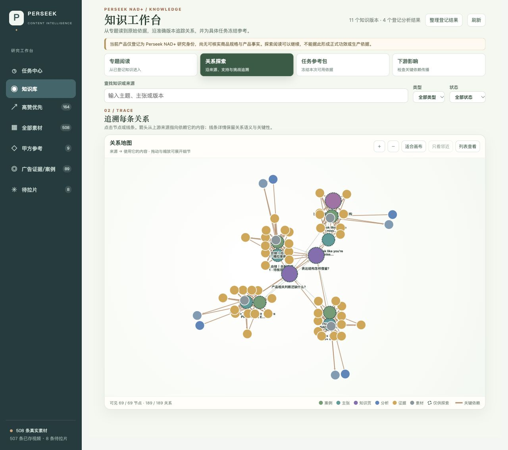
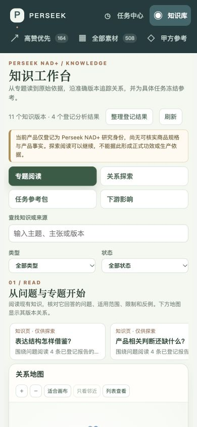
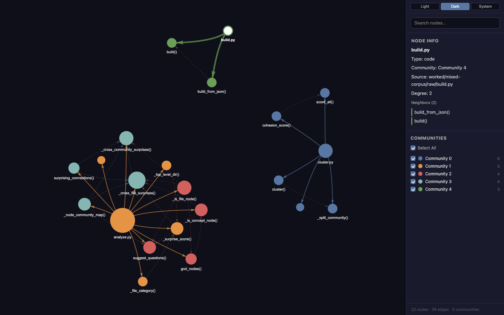
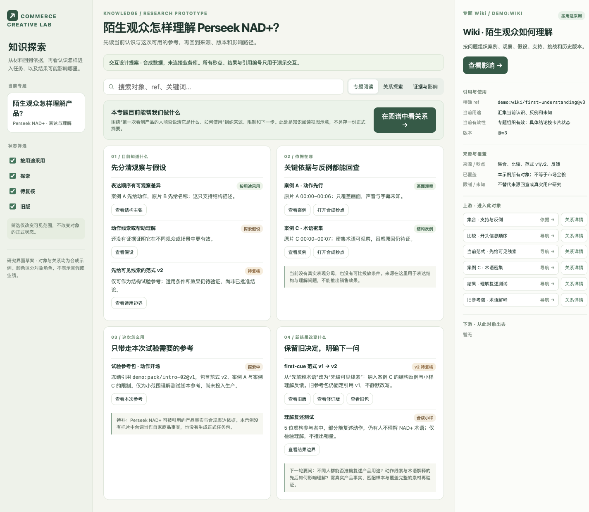

阅读入口 2026-10-27
独立知识产品文档入口
本目录只提供核心知识产品文档导航。产品目标、架构、能力语义、运行方式、当前状态和维护规则均以知识产品文档集 为唯一权威来源；根目录不保留电商或其他业务文档清单。
阅读入口
产品与交互 ：为什么需要知识产品，以及人如何查询、采用和反馈。架构与模型 ：来源、准确版本、读取回执、权限与写入边界。对外能力 ：客户端和普通文档适配器可调用的能力及限制。运行与开发 ：本地进程、数据库隔离和故障处理。当前状态 ：已经实现的工程行为与尚未完成的验收。维护规则 ：文档归属、更新和生成方式。迁移与历史保全 ：稳定 ID、原文保全和现行章节去向。
可打开核心 HTML 阅读器 连续阅读和搜索，也可使用知识专属阅读器 。两者都由构建命令生成；原稿和目录维护后运行 make docs 与 make docs-check，不要直接编辑 HTML。
普通文档接入是本仓保留的第二业务参考。具体业务字段、业务 source owner、commerce adapter 及其业务文档由外部业务仓负责，不纳入核心发布边界。
现行说明 · 实现与部署分别见状态页 2026-10-26
通用认知知识库
知识库让人和 Agent 在已有认识上继续理解问题：找到相关知识，读懂依据与条件，比较分歧，研究新问题，再记录使用和反馈如何改变认识。它接收视频、文档、规则和外部观察；抖音电商是接入场景之一。
2026-10-26 · 本文档集已从电商文档中独立整理。产品目标与交互以权威目标 Page 为准；源码主线、固定验收版本与实际部署的区别见当前状态 。文档拆分、代码实现、合并和部署分别验收。
从你要做的事开始
一次具体使用
假设你要判断“新观众是否需要先看到产品的使用方式”。先查询已有认识，读到适用人群、场景、支持案例与反例；打开来源核对实际观察范围。已有认识足够时可以停在阅读，也可以在实际使用时记录所用准确版本。
若问题变成“这个结论在另一种商品形态下还成立吗”，可以联读旧知识发起研究，不必先取得新视频。研究可能形成修订候选，也可能说明暂不改变或仍缺证。候选经过独立审阅与发表检查后，才成为正式版本。经营效果仍由相应业务的真实结果证明。此例是使用情境，不是已得到的业务结论。
本文档集的边界
知识库负责知识版本、关系、依据、研究、审阅发表以及采用反馈。平台采集、原片、视频分析和经营执行由业务系统负责；模型执行、任务运行和存储通过共享设施提供。独立前端和业务适配使用同一知识能力。
旧业务模块说明、阶段设计和工程验收已保留全文，放在“历史与依据”。其中的日期、方法、数量和部署结论只解释当时记录。读当前产品时从本页进入，再按需要回查原始证据。
现行说明 · 实现与部署分别见状态页 2026-10-26
知识产品：方向、场景与交互
知识库的核心价值是让已有认识成为下一次判断的依据，并让认识能够受到检查、修正或合理保留。节点数量、报告数量和图的复杂程度不证明这一点。
2026-10-27 · 本页说明已确认的产品方向、使用场景与交互约束。完整内容关系、研究行为与连续两轮验收由通用认知模型 维护；各项是否已接入真实服务，以当前状态 为准。通用目标原本仍以知识库目标 Page 为准，本页把它解释为可阅读、可验收的产品行为。
我们要去哪里
让认知持续形成、积累、关联、综合和修正，使已有认知成为下一轮新认知的基础，持续提高人和 Agent 理解问题、研究与行动的能力。
我们要做的不是资料仓库、一次性答案生成器或图谱展示器，而是一个让组织经验持续参与判断、又被现实不断校验的知识产品。它保存的不只是“最像答案的一段话”，还包括依据、适用条件、反例、未知、版本，以及人们当时怎样使用它。
完整链路是：
真实来源 → 可阅读的认识 → 新问题研究 → 采用、改编、拒用或暂缓 → 真实反馈 → 维护与演化 → 下一次判断。
这里有两个同样重要的方向：昨天的研究要带着依据和条件服务今天；今天的新问题、反例和实践结果又要能改变明天。图谱和正文帮助人参与这个过程，研究与审阅帮助系统维护这个过程；它们都不是最终价值本身。
五个场景看懂这个产品
以下都是说明产品方向的情境，不是已经验证的经营结论，也不表示相应自动化已经完整实现。每个场景都要分清系统应该做什么、不能声称什么，以及为下一轮留下什么。
场景一：新任务真正用上旧认识
你问：“这款新玩偶应该主要通过剧情表达，还是通过达人展示？”
系统应该做什么：找出过去关于剧情表达、达人展示和商品可展示性的认识，同时呈现原报告、原始片段、适用条件、反例和未知。你可以条件性采用一种方法、改编后使用、拒用前提不符的方案，或暂缓缺少实物依据的判断。
不能声称什么：不能把关键词命中当成答案，不能把旧案例的表现直接继承给新玩偶，也不能替尚未观察的实物和观众反应补结论。
为下一轮留下什么：本次问题、实际阅读的准确版本、采用或拒用理由、改编内容及仍待验证的问题。
这说明：知识库要让过去的研究进入今天的判断，而不是让资料只躺在库里。
场景二：新证据挑战旧认识
假设旧认识认为某类商品更适合剧情表达，新案例却显示：在另一种商品和受众条件下，达人直接展示更容易理解。
系统应该做什么：把新案例标为对具体判断的挑战，比较商品、受众、内容形式与观察范围，再决定收窄旧认识、提出修订候选、保留分歧或有据保持不变。同一原片的两份报告仍属同一来源组。
不能声称什么：不能把“又多一份报告”当成“又多一份独立证据”，不能为了持续更新而强制造新版，也不能在证据不足时把冲突平均成一个更自信的结论。
为下一轮留下什么：候选、不变或待补证的结果，实际核对的依据、未解分歧、下一步需要的证据；候选经独立审阅后才可能成为正式知识。
这说明：知识库必须能纠错、限制和合理保留认识，而不是只会增加内容。
场景三：真实结果反过来改变知识
假设一次创作采用了“通过剧情表现商品”的认识。实际观察发现，观众看懂了故事，却没有认出商品；完整观看效果尚未取得。
系统应该做什么：分别记录故事理解、商品识别和未观察项目，把反馈关联到当时采用的知识版本与实际改编，再研究是否需要提出“剧情还需建立清楚的商品识别线索”这样的候选修订。
不能声称什么：不能把缺数据写成没有效果，不能把一次结果扩大成普遍规律，也不能让反馈绕过研究和审阅直接改写正式知识。
为下一轮留下什么：真实观察及其测量范围、尚未观察的项目、反馈与知识版本的关系，以及修订、保留或补证的理由。
这说明：知识不是写完就结束，现实结果要能够改变下一次使用方式。
场景四：三个月后复盘当初的决定
三个月后，知识已经更新，你追问：“当时为什么决定采用剧情方案？”
系统应该做什么：还原当时的问题、实际读到的知识与来源版本、采用和拒用理由、当时保留的条件与未知，以及后续哪些反馈促成了变化。
不能声称什么：不能用今天的最新版倒改历史，也不能因为旧版本仍可阅读，就把它当作当前仍可执行的依据。
为下一轮留下什么：可追查的历史解释、版本差异和受影响关系；新的任务仍须重新检查当前版本、用途和来源权利。
这说明：知识库不仅服务当下，还要保留组织判断的来龙去脉。
场景五：另一项业务复用同一知识产品
假设另一个团队希望研究自己的规则文档和制作经历，而不是抖音视频。
系统应该做什么：让业务所有者提供准确文档、实践记录和读取权限，再通过同一组知识能力完成查询、依据回查、研究、采用反馈和版本演化。业务继续管理自己的原始资料、身份和经营动作。
不能声称什么：不能把抖音商品事实或用途权限带进新业务，不能要求每个业务复制一套知识权威，也不能因为接口可用就宣称业务效果已经成立。
为下一轮留下什么：该业务自己的来源、知识版本、使用记录和反馈链，以及可独立审查的知识演化历史。
这说明：抖音电商是真实应用和验收场景之一；通用知识产品才是长期边界。实际接入顺序见新业务技术接入手册 。
怎样判断正在接近目标
工程测试、浏览器检查和内容审阅分别证明不同事情。它们可以帮助判断机制是否可用，但不能替代真实读者理解、连续两轮认知继承和长期业务效果。连续两轮的具体通过条件见认知模型验收 。
三种工作状态
探索采用用户确认的 V1 星群方向：浅色背景、圆节点、细线、克制光晕，左侧通用导航，右侧可读上下文。矩形技术样片不作为产品视觉依据。布局算法和图引擎需要用真实画面与任务验证；图谱首版归前端内部模块，稳定后再按复用需要决定是否拆包。
关系必须能解释一个判断
主题相近、导航联读、同源材料、支持、挑战、适用条件与前提依赖分别表达。不能把“相关”画成“支持”，也不能从两个节点很近推断它们有因果关系。
例如，两个报告来自同一原片，应能展开其共同来源；它们不因此成为两份独立证据。某条边支持一个限定命题时，详情应说明支持什么、支持到哪里，以及是否仍有替代解释。来源组可以交叉，不强行套成单父目录。
阅读准确版本与来源
打开正文时固定准确版本。切换当前版、历史版和差异时，分别标明所读版本、当时判断和当前用途资格。旧版本保留历史解释，不能因为仍能打开就视为当前可以执行。
来源应显示身份、作者或发布者、取得方式与日期、准确版本、锚点、实际读取范围及当前可读性。继承过的依据与本次实际重新读过的内容分别呈现。只读到节选、附件不可读、格式不支持或尚未加载时，界面保留具体缺口。
从图谱到正文、再到来源或历史后返回，应恢复原问题、选择、局部范围及阅读位置；不能把返回操作变成重新检索另一组结果。
研究结果允许改变，也允许不变
研究执行成功、内容审阅通过和正式发表是不同状态。取消请求也不能立即显示为已取消；外部结果未知时应保留未知状态和对账路径。
阅读与采用是不同选择
用户可以只读，也可以采用、改编、拒用或暂缓。实际采用时记录所读准确版本、选择理由、条件及改动；未考察的条目不自动生成拒用理由。
反馈分别保留实际观察、没有观察到的项目、测量范围与解释。反馈进入后续维护，不直接改正式知识。后续变化应能说明它回应了哪次反馈，为何修订、保持不变或仍缺证。
用真实任务验收
新读者应能独立解释一条认识从哪里来、为何可信或存疑、何时改变、影响哪里。研究验收应能比较使用前后的判断、反例、缺口与成本；真实行动的效果另由业务场景检验。
截图、浏览器检查和工程测试各自保留证据。它们支持可操作性或机制判断，不替代用户对视觉、理解和认知价值的验收。
现行说明 · 实现与部署分别见状态页 2026-10-27
通用认知模型：内容、行为与验收
知识库最重要的目标是让认知自我成长：已有认识可以被下一次问题唤起、联读、重组和反证，形成新的联系、解释、取舍或研究问题；这不以每次都有新来源或真实实验为前提。一次新综合复用原有依据，不会凭空增加独立证据。人和 Agent 在一项任务结束、参与者更换、时间过去之后，仍应能接着研究；未来冒出当初未预设的问题，也能找到相关旧研究，不必重做全部历史工作。
本页是通用内容模型与研究行为的现行正文。它描述应长期成立的知识合同，不登记固定日期的实现、部署或语义验收状态；这些分别由当前状态 和相应证据记录维护。产品场景见产品与交互 ，技术职责见架构 ，外部调用见接入手册 。
认知成长的目标
让认知持续形成、积累、关联、综合和修正，使已有认知成为下一轮新认知的基础，持续提高人和 Agent 理解问题、研究与行动的能力。
知识库保存的不是“最像答案的一段话”，而是对主体、概念、问题和做法的当前理解：知道了什么，凭哪一段原始观察、哪份正式资料或哪次实践记录；为什么认为它成立；适用于什么条件和范围；哪些材料其实同源，哪些证据相互挑战；仍有哪些未知，下一次值得取得什么资料或做什么测试。使用者能沿着结论回到原依据，也能看见它从旧版怎样被补充、收窄、合并或撤回。后来者可以质疑其中一步并修正它，原先的理由与采用记录仍可查。
所谓更高维的认知，是能发现原先分散的认识之间的联系，给出更有解释力的条件与迁移取舍；并非文字越抽象越好，更不意味着经过一次综合就更可信。新来源、新问题或行动结果进入后，系统应判断它是否改变已有认识、是否暴露分歧或缺口、是否只重复已知。即使暂时没有结论，也应留下清楚的研究问题和必要证据。
这一能力必须在真实成本下成立：先找相关目录和准确旧版，只读必要来源，按变化范围编纂，预算不足时公开覆盖缺口，重复输入允许“无变化”。可信度来自来源保全、条件表达、版本与依赖、独立审阅，以及后续使用和反例能否推动修订。页数、节点数、报告数和调用量本身都不是认知成长。
来源、认知与关联
知识内容分为三个职责面，而不是一条所有材料都必须经过的加工阶梯：
来源可以包括文档、规则、原片、报告、实践记录与外部观察。已有分析可以直接作为带来源的理解保留；新来源也可以先被准确保全，必要时直接形成规则陈述候选；新问题可以只联读旧认知。不存在每份材料必须依次产出固定对象集合的共同流水线。
“记忆”是跨任务保留这些对象及其关系的能力；“知识”是从中形成的、带条件且可以修订的理解。它们使用同一套项目记录，不额外造一份越来越短的总摘要。正式知识保存在模型之外，生成一次回答不等于已经记住。
带条件的命题与内容关系
仅把两篇知识标成“相关”或放进同一专题，不能解释它们如何共同影响一个决定。可讨论、可修订的单位应是具体命题：它回答哪个问题，在什么条件下成立，依据是什么，受到哪些反例或未知限制。命题不要求逐句拆成独立对象；是否独立维护由正文权威和生命周期决定。
每条有意义的关联都应带对象、理由、条件、准确依据与当前状态。来源链、阅读导航和解释性关系分别表达；“这篇引用那篇”不自动说明支持，“相关”不自动表示可迁移，“同时出现”不自动表示因果。背景、导航、相似和必要推导前提也应分别表达；关键依赖承担失效传播责任，普通互链不承担。
同一命题可以连接多个专题，但不能让不同专题各自复制一份逐渐矛盾的结论。专题围绕稳定问题组织当前认识、支持、反例、缺口和变化；集合固定纳入范围，比较固定可比与不可比之处，参考包冻结一次任务实际取用的内容。这些用途不要求增加一套封闭本体。
稳定身份与正文权威
主体、概念与问题可以有稳定身份、可阅读正文及正式修订。页面用途由有版本、可校验的编纂规约确定，不是一项业务一套核心类。是否新建、更新、合并或拆分，依据它是否回答独立问题、需要单独引用或维护，及旧页范围是否仍准确；不得仅凭同名合并或凭不同措辞造新页。身份不明时保留待核，允许同名不同主体和有理由的不同解释并存。
同一条可维护认识应有明确的正文权威。 若其中一项判断或方法需要独立审阅、修正和采用，就维护它的准确版本，页面引用并解释它；若无需独立生命周期，则在页内维护，不把每句话拆成对象。同一陈述不能同时在页面和独立对象中各自修改而无关联。综合页可以维护超出所引陈述的新推论，必须标出这一增量；主体页、概念页和综合页不是只读索引或临时摘要。
合并或拆分后保留原身份、历史准确版本、别名或后继关系，并审查实际依赖的处置。新查询可发现当前后继；已冻结的旧引用和采用记录不被悄悄改写。“当前正式版本”也不等于“唯一真理”，分歧和不确定性仍属于正文。
类型、身份、标签、认识方式、适用范围和用途资格回答不同问题。对象类型不能兼任内容标签、可信度或用途批准；相同标签只帮助召回待比较材料，不构成支持同一主张或证明同样有效。未知范围不能解释为全球适用，历史可读也不能解释为当前可采用。
研究行为：什么值得保存
研究应说明旧认识尚不能回答的具体问题，以及候选增加了什么：新的解释、条件区分、迁移取舍、可检验预期，或清楚的待研究问题。指出它改善哪种理解或后续判断，不要求每页立刻带来经营指标提升。补充原依据、纠正错误和收窄条件同样有保存价值；已准确保全的来源仍可入库，不必先证明有新综合。
把两页并排缩写为第三页，既未解释两者关系，也未增加条件、问题或可用判断，不算新的综合认知。普通回答可以结束，不强制造页。新解释有价值但依据尚弱时，可以在明确标注推论和未知的候选或开放研究问题中保留，不能伪装成已验证结论。
研究行为：触发与读取范围
新来源、使用者 Query、已授权目标下的 Agent 提问、来源纠正和有界 Lint 都可以触发研究。每次留下同一份可复核记录：研究目的与问题、触发理由、范围和预算；选中及排除的旧页与来源、选择理由和准确版本；实际读取覆盖、缺口、预期变更与结束理由。目录或摘要用来定位，不能当成已阅读完整依据。
先找相关旧认识，按推导需要读取正文和必要原依据；身份冲突、条件缺失、关键依据改变或无法核实支持时回查来源。预算或权限不足就缩小问题、标明未覆盖并返回待补证，不能声称全库无反例。当前研究无须每天重读全库，也不规定必须凑够几条材料。读取成功和研究范围充分是两个判断。
从新材料到新认识，应依次能回答：带着什么问题开始；保存了哪些原始依据；找到哪些旧认识及反证；在哪些可比维度上比较；形成了什么变化提案；由谁审阅并如何维护；怎样让使用结果改变下一轮。新综合沿用旧依据时，保留推导步骤与限制，不伪称新增独立观察。
研究行为：综合与循环放大
关键新判断要能定位到必要旧认识的准确版本、其原始来源来路、保留的适用条件与反例，并说明这次新增的推理步骤。段落或判断级的依据应足够核查，不要求把每句解释都实体化。
两项认识若同源，联读可以产生新解释，但不增加独立支持票数。语义网络可以互链；关键论证不能靠彼此引用来自证。冲突未解时保留双方范围，或把新综合标为有条件、待核，不能平均成“共同证实”。原始资料本身含有主张，也须区分记录事实、来源说法和研究者解释。
研究行为：停止与维护
同一问题、同一准确输入集合与同一规约下，没有实质认知变化就复用或 no_change；同一旧材料在新问题下仍可形成有价值的新综合。版本变化是重新核查的理由，不是必然造新版的理由。研究预算、权限或依据不足时，记录局限后结束；同一任务不无限继续综合自己的输出。后续有新问题、来源纠正、反例或实质缺口，再明确触发下一轮。
关键前提变化时，沿已声明依赖定位受影响认识，先标明需要核查的准确范围，再选择方法、预算并提出局部修订。发现影响、修复提议、正式发布和问题关闭分别记录；检验后仍成立可以有理由地无变化结束。不是每条导航边都触发全库重写，新的来源与知识变化也不应等待阶段报告才处理。
缺口不只是一句“待补证”。研究请求应关联受影响的知识、来源和用途，写清缺什么、补齐后能改变哪项决定、价值与优先级、可用预算和完成所需证据。请求可以等待外部结果，也可以因权限、预算或证据不可得而受限；任务结果本身不能自动使缺口解决，新证据仍需研究和审阅。
研究行为：审阅、发表与继承
候选应交付变化前后、理由、准确读集、必要依据、条件、反例、未知与依赖。独立审阅检查新增价值和论证，发布核验版本与资格；肯定推论的可发表性不等于肯定业务效果。受理、运行未知、候选、审阅通过和正式发布保留不同状态。预算不足或结果流断线，不得自动记成发布成功。
研究执行成功、内容审阅通过和正式发表是不同状态。候选、无变化和待补证都是合法研究结果；正确停止是必要行为，但单独通过这一分支不能证明已经发生认知成长。
发表后，目录和检索应能发现新版本；下一轮研究或任务应实际读到并保留其条件、未知和用途限制，不能只证明“写进数据库”。查询可仅回答；值得保存的综合进入同一候选路径。阶段报告解释正式变化、理由和对工作的影响，不能用报告文字替代知识修订。
查询、采用与反馈
查询从具体问题与限制开始，先决定能不能用于这次任务，再决定哪些最值得占用有限上下文。结果保留准确版本、选入与排除理由、反例、未知、实际读取范围及遗漏原因。相似度不是事实置信度，热度不是适用性，旧版本可打开也不等于当前可采用。
阅读与采用是不同选择。使用者可以只读，也可以采用、改编、拒用或暂缓。实际采用时记录所读准确版本、选择理由、条件及改动；未考察的条目不自动生成拒用理由。采用记录只说明选用了什么，执行记录与效果证据由业务模块提供。
先记住发生了什么，再判断它改变了哪条认识。 反馈分别保留实际观察、没有观察到的项目、测量范围、成本与解释，并关联当时采用的知识版本和实际改编。缺数据不能写成没有效果，一次结果不能扩大成普遍规律，生成者自评也不能当作真实观察。
反馈进入后续维护，不直接改正式知识。它可能促成维持、补证、缩小适用范围、保留争议或撤回；后续变化应能说明回应了哪次反馈，为何修订、保持不变或仍缺证。关键依据失效时，可先限制未来使用，再完成局部修订；已执行的版本与历史记录不倒改。
连续两轮怎样验收认知成长
以同一专题贯穿，不将几个互不相干的小样拼成完整链路。A、B、C只是示例标记，不是要求所有研究必须正好有两条前提。
第二轮继承检查以 C 已正式发表为前提。另用重复、纯拼接和依据不足的负例验证 no_change／待补证分支。对比两条路径在同一问题、相同信息可用性下的解释、条件、错误、可追溯性及纠错能力；记录实际读取量、调用量、人工复核、维护成本、误归并和漏关联。若直接读材料同样清楚而知识库增加了维护负担，应如实指出成本尚未划算。
固定任务回放、软件行为检查、独立语义审阅和真实业务效果分别验收。接口成功、文档检查或页面截图可以支持工程与可操作性判断，但不能替代连续两轮认知继承，更不能宣称真实语义研究、生产部署或经营效果已经完成。
接入说明 · 实现与部署分别见状态页 2026-10-27
新业务技术接入手册
新业务复用的是同一套知识能力，不是复制一套知识权威，也不是继承其他业务的资料与权限。业务所有者继续管理原始资料、平台身份、采集分析和经营动作；知识服务管理登记后的来源引用、知识版本、关系、研究、审阅发表、采用与反馈。
本页给出技术接入顺序。具体字段、错误码和可调用操作以同一源码版本的 packages/knowledge-contracts/src/index.ts 及客户端包出口为准；本页不手写第二套 DTO。当前主线、部署和真实语义验收边界见当前状态 ，能力语义见能力与接入合同 。
1. 准备源码、Node 24 与 workspaces
在仓库根目录工作，使用 .node-version 指定的 Node 24.x 和根锁文件。不要在新业务目录另建一套 lockfile，或用业务应用的包管理配置覆盖根 workspaces。
git submodule update --init --recursive
npm ci
node --version
核心仓根 package.json 的 workspaces 包含公共合同、客户端、核心、应用层、服务适配器、普通文档适配器，以及独立 API、Worker 和 Web；commerce 适配器只保留在消费仓。共享执行依赖若由 submodule 分发，必须在安装和构建前初始化；若当前源码包没有相应 submodule 映射或内容，先核对分发包完整性，不能把缺少依赖后的局部成功当作全链路可构建。
新业务通常新增一个 workspace 适配器，或把现有适配器作为宿主应用依赖。包名、导出和脚本以该版本 manifest 为准；通过声明的包出口导入，不跨包读取 src 内部文件，也不依赖构建目录中的偶然路径。
2. 按依赖顺序构建
公共合同先于客户端；客户端先于 Web 和业务适配器；核心、应用层和服务适配器先于 API 与 Worker。根脚本已经表达这些顺序：
npm run build:knowledge-client
npm run build:knowledge-server
npm run build:knowledge-adapters
npm run build:knowledge-web
也可以运行聚合命令：
npm run build:knowledge-foundation
npm run build:knowledge-web
不要在 API、Worker 或 Web 内重复编译依赖来绕过公开构建入口。客户端保持浏览器和 Node 可用且不依赖 React、PG、视频处理或业务表；Web 只依赖浏览器安全入口；API 与 Worker 才装配服务端设施。独立 Web 构建不应要求视频 Worker、生产数据库或模型凭据。
定向工程回归可运行 npm run test:knowledge-product。需要数据库的验收使用明确、专用、可丢弃的 TEST_DATABASE_URL，并按项目规则设置 TEST_DATABASE_REQUIRED=1；不能复用业务库，也不能让缺失配置静默跳过后仍声称数据库验收通过。
3. 分清 API、Worker、Web 与适配器职责
独立 API、Worker 和 Web 的运行变量、端口及授权装配以对应实现版本为准。API 的数据库、项目、空间和 token 配置与 Worker 的研究执行配置分别核对；写能力还需显式 writer authority 和用途策略。Web 只获得用户连接所需的非机密预填值，token 不进入构建产物或浏览器持久存储。真实模型、采集、生产数据库和写者资格不是构建的前置条件，也不是构建成功后的隐含结果。
4. 登记来源、版本、锚点、权限与用途
每个来源先回答五组问题：
业务原件可以留在业务域，由业务所有者提供显式认证的只读端口；普通文档也可以按托管来源政策登记原文副本。两条路径都必须固定准确版本与锚点。知识服务不跟随调用者提交的任意地址重新抓取，不继承业务平台凭据。
来源更新、撤权和内容纠错通过生命周期交接通知知识服务。外部来源在发表时仍需可证明的权利保证；无法保证跨系统撤权与本地提交原子性时，应拒绝或保留相应限制。托管来源在发表事务内重验版本和权利。来源登记成功不等于知识已审阅、可发表或可产生业务效果。
5. 查询、研究、采用、反馈与变化
按以下顺序接一条完整使用链，每一步都保留上一步的准确引用：
发现能力与范围。 读取实例能力、项目/空间、可用用途和写入口限制；不要以静态文档推断该实例已开放全部能力。查询与阅读。 提交有界问题，读取相关知识、准确版本、关系、来源路径、分页和遗漏原因。普通查询不隐式采集、收费研究、采用或发表；有界无匹配不等于全库没有知识。保存读集。 需要复用本次阅读时，持久化阅读回执，固定实际对象、版本、顺序、范围和当时判断。以后访问仍检查当前权限。发起研究。 联读明确旧版发起研究，保留触发问题、预算、读集与结束理由。研究结果是 candidate、no_change 或 needs_evidence；执行受理、研究结果、审阅与发表分别追踪。候选、审阅与发表。 普通业务调用者提交候选并请求审阅，不直接发表。独立审阅和唯一发表入口核对准确输入、写者资格、依赖、页头、取消状态和来源证明。记录使用。 实际采用、改编、拒用或暂缓时，记录准确知识版本、外部任务身份、用途、理由、条件和改编。只读不自动产生采用，采用不证明已经执行。记录反馈。 保存真实观察、未观察项、测量范围、成本和解释，关联原使用记录。反馈不会绕过研究审阅直接改正式知识。读取变化与维护结果。 沿原用途查询修订、无变化、待补证及反馈处理关系；新查询使用当前有效版本，历史任务仍按当时准确记录解释。
6. 幂等、撤权、取消与未知结果
所有写操作使用稳定幂等键并保存原始请求摘要。相同键和相同输入返回同一操作结果；相同键配不同输入是冲突。客户端不盲目自动重试。
本地合同校验失败属于 not_committed，修正后可以形成新的有效请求。
请求已发出但响应丢失、响应无法验证或提交状态不明时属于 unknown。保留原输入和原键，通过操作 ID 或原键对账；查无记录本身也不是未提交证明。
对账完成前锁住同一意图的新提交，不换键重发外部调用。前端可以保留用户输入，但不能把超时显示成失败或成功。
取消只是请求。等待执行端确认，已经发生的费用和外部结果保持可见；已取消、取消中、执行成功、候选形成和正式发表是不同状态。
来源撤权后，新的读取、使用、反馈重放和变化访问重新检查权利。历史审计记录可以保留，但不能因此继续返回已无权的正文或摘要。
无法确定外部是否执行时，保留未知范围、调用账本和对账路径；不能把费用填零，也不能通过取消、换方法或换键清除未知。
用途贯穿反馈、使用关联、操作查询、阅读回执、研究、审阅和取消。对账携带原用途，不能用另一项已获批用途访问旧操作。
7. 共享 schema 是唯一接口权威
公开 DTO、运行时校验、合同版本和提交状态由 @commerce/knowledge-contracts 统一定义；客户端在发送和接收时校验。业务适配器从该包及其公共类型导入，字段参考和示例从同一版本生成或校验。
不要手写平行 DTO、从 HTTP 示例复制接口、自行放宽必填条件，或在业务侧另造一套 commitStatus、研究结果和用途枚举。需要新增字段时，在同一实现变更中更新共享 schema、客户端、服务端校验、适配器和合同测试，并说明兼容策略。旧 KnowledgeRef 等存储身份保持原语义，传输 provenance 不构成第二套对象 ID。
Schema 能证明形状与边界，不证明跨字段授权、来源租约、发表 fencing 或认知内容正确；这些仍由应用层、核心与独立审阅负责。
8. 普通文档业务端到端接入
以下流程不要求视频、采集平台或媒体 Worker：
选定一组有所有者的文档。 使用合成资料或有明确授权的隔离副本，记录业务文档 ID、固定修订、摘要、作者/发布者、用途与可读范围。实现文档来源适配。 提供固定修订的原文或允许节选，以及稳定页段/标题锚点；不支持全文时明确返回实际节选与未覆盖部分，不伪造完整读取。登记来源。 通过 K02 和公共 client 登记准确版本、外部上下文、来源权利和用途；重复提交验证幂等，改变版本则产生新的准确引用。建立可回答问题。 选定一个能由文档支持、同时包含条件或反例的问题；保留“直接阅读这些文档”的答案、读取量和成本作为对照。查询并回查。 通过 K03–K05 找到相关知识，打开准确正文和来源锚点，核对范围、限制、分页与无匹配语义；返回阅读时恢复原问题和位置。研究一个变化。 加入修订文档、反例或新问题，通过 K06–K08 形成候选、无变化或待补证。候选必须经独立审阅与唯一发表；没有把新文档登记成功写成认知研究成功。记录真实使用。 通过 K09 记录采用、改编、拒用或暂缓及外部任务；只记录实际发生的选择，保留准确知识版本。登记反馈并追踪变化。 通过 K10–K11 保存观察与未观察项，再检查它引起修订、不变还是继续补证。反馈处理不能自动宣称业务效果。验证撤权和未知。 撤销一个文档用途后确认正文、使用重放和变化访问被拒绝；模拟写响应丢失，用原键对账，确认没有重复外部动作。重启复核。 重启服务后按准确版本找回来源、知识、读集、操作、使用和反馈；核对业务原件未被改写，测试数据按隔离责任清理。
9. 验收边界
源码合并、本地验证、真实业务来源接通、真实语义研究、生产部署和长期业务效果是不同状态。没有对应证据时必须保留未完成，不用接入手册中的步骤描述代替实际完成记录。
现行说明 · 原文与固定证据继续保留 2026-10-27
文档权威、章节继承与旧链接
本页回答三个问题：每份文档现在负责什么；仍有通用价值的旧章节由哪一份现行正文继承；旧链接应继续打开哪里。分类中的“通用核心”是可跨业务复用的知识合同，“业务适配”是特定业务的方法、字段或使用场景，“真正历史”是固定日期的实现、部署、评审和验收证据。
唯一现行继任者 指该内容的规范维护位置，不表示旧原文被删除。旧全文和原锚点永久保留在“旧全文与旧链接目标”列；migration-map.json 的 retainedAt 继续指向这些位置，currentGuide 指向继任文件的有效章节。三份长文的章级拆分以本文为准，不把整份 rich 原文简单改标为 current。
25 份既有文档逐份归属
下表覆盖本次恢复权威前的 25 份 catalog 文档。新增的通用认知模型 、技术接入手册 和本页分别承接模型、接入步骤和归属索引，不替代表内历史证据。
历史文档仍可提供事实与推导依据，但其“当前”“已部署”“待实现”和数量只按原日期解释。现行通用正文不得反向复制这些状态。
reference/commerce-product.md 逐章继承文档级唯一继任者是通用认知模型 。业务专章的规范业务正文仍在业务适配指南 及相应业务文档；这里只指明该旧章节的通用解释入口，不在核心仓复制业务规则。
research/purpose-architecture-20261022.md 逐章继承文档级唯一继任者是通用认知模型 。原设计评估、固定代码距离和实施状态只作 record；它们不再充当当前完成清单。
reference/commerce-architecture.md 逐章继承文档级唯一继任者是架构 。视频研究、创作交接和带版本号的实施合同留在 commerce 或 record；通用核心只继承跨业务成立的机制。
链接维护规则
新引用通用规则时，直接链接本表给出的现行文件和章节；不要先跳到旧长文再让读者自行判断状态。
引用固定实现、数量、部署或一次研究结论时，链接原证据并写明其日期和范围，不把它改写成当前事实。
旧链接的目标文件、文档 ID、标题和原锚点不改；需要提升旧内容时，在现行正文承接，再只更新 currentGuide。
一项通用规则只能有一个现行正文。业务适配可以补充自己的来源字段与执行条件，但不能复制出第二套知识版本、审阅或发表权威。
后续若 current 文档降为 record，必须在 catalog 和迁移映射中同时给出有效继任者；校验器会拒绝没有具体现行章节的迁移目标。
现行说明 · 实现与部署分别见状态页 2026-10-26
知识产品的职责与架构
独立前端与业务系统使用同一组知识能力；知识服务保持唯一的版本、关系、审阅和发表权威。通用核心只维护跨业务成立的内容与执行合同，业务适配保留自己的来源、身份和任务规则，固定日期的实现与部署仍由证据记录承担。
本页维护架构方向。当前主线实现、固定历史版本和正式部署见当前状态 ；完整认知模型见通用认知模型 ；新业务落地顺序见技术接入手册 ；历史细节和章级继承见文档权威与旧链接 。
通用知识核心
知识核心保存可修订正文、准确版本、来源依据、关系、研究记录、审阅与正式发表，以及采用和反馈之间的关联。来源不必沿固定对象阶梯晋级：文档、规则、实践记录和已有分析都可以先按准确版本保全，再按问题参与研究；新问题也可以只联读旧认识。
这些职责不是要求新增一组服务。Ingest、Query、Lint 是作用于同一知识网的操作，任务和报告是使用方式，Schema 是共同规约，Worker 与队列是运行设施。目录和摘要帮助定位，不能替代正文与原始依据；语义综合沿用旧证据时，不增加独立支持数。
四部分怎样协作
知识研究可以提出缺少什么资料，业务系统决定并执行自己的采集和分析。查询知识不会自动取得平台操作、付费模型或经营执行的权限。公开 DTO 和运行时校验只有一个权威来源，供前端、客户端、后端及业务适配共用；准确字段以共享 schema 为准，不在文档或业务侧维护平行 DTO。
内容关系与失效
关系至少区分四层：
来源组保留分组依据及不确定性。同一原件的多份报告、不同覆盖和多次发布仍是一组来源；字节去重不能推出作者独立或业务结果独立。重复观察与经过业务实验验证是两种证据。
关键前提变化时，后端沿已声明依赖定位受影响知识、未执行使用和未来查询，先限用相应范围，再提出局部修订。发现影响、修复提议、正式发表和问题关闭分别记录；不是每条导航边都触发全库重写。图是可重建的阅读投影，位置、聚类和边样式不能反向成为知识事实，图数据库也不是核心拆分的前置条件。
阅读、研究与唯一发表
查询返回有界结果及准确读集。需要保存和复用这次阅读时，使用持久回执固定实际对象、版本、顺序、范围与当时判断；日后访问仍检查当前权限。当前指针、历史版本和查询回执分别管理。普通查询不隐式采集、收费研究、采用或发表，有界无匹配不能解释成全库没有知识。
研究策略由知识应用层控制。每次研究保留目的、触发、范围、预算、选中与排除的旧版、实际覆盖、缺口和结束理由。研究可以形成候选，也可以无变化或待补证；版本变化是重新核查的理由，不是强制造新版的理由。
候选交付变化前后、理由、准确读集、必要依据、条件、反例、未知和依赖。独立审阅检查新增价值和论证；发表端在同一事务内检查写者资格、准确输入、依赖、目标页头、取消及审阅证明。执行成功、候选形成、审阅通过和正式发表是不同状态。
任务尝试的 fencing 不能代替发表权限。旧入口和新入口都必须归到同一权威；业务客户端不直接写表、修改页头、签发审阅凭据或任意发表。合并、拆分保留旧身份、历史版本、别名或后继关系，旧引用和采用记录不被悄悄改写。
研究执行与维护
来源新增或修订、用途决定变化、撤权、纠正和反馈先进行确定性登记，固定准确版本、来源组和受影响范围。语义研究按问题与变化有界触发；输入没有实质差异时可以不调用模型，有新输入但没有认知增量时也允许无变化结束。具体批量、等待和预算值是可复验配置，不属于跨业务固定合同。
执行端负责租约、尝试次数、取消、费用与外部未知结果。相同问题、准确输入和规约下复用已有结果；未知外部执行先按原操作或原键对账，不换键重发，不把未知费用记为零。取消请求等待执行端确认，已经发生的费用和结果保持可见。
构建结果至少区分：changed 表示经审阅发表实质变化；no_change 表示完成核查但无需修订；restricted 表示限用、待审或待补证；failed 表示执行失败。运行成功与认知结果属于不同轴，均不能单独证明语义正确。失败保留待处理范围，限用不伪装成新认识，无变化确认不能吞掉并发新事件。
研究缺口绑定准确知识或来源版本、具体问题、所需证据、价值、用途和状态；执行请求再冻结动作、输入、预算、权限和幂等键。任务完成不自动使缺口解决，新证据仍经研究与审阅。反馈只进入维护，不直接改正式知识。
数据与来源所有权
知识服务拥有登记后的准确来源引用、知识版本、关系、研究记录、审阅和正式发表。业务系统保留原件、原始报告、平台凭据及经营记录；普通资料明确采用托管副本时，知识服务按自己的保留与访问政策管理。
业务变更或撤销来源时，通过来源生命周期交接通知知识服务。来源元数据可见、内容可读、锚点可定位、依据有效、当前用途允许是不同判断。外部来源当前可读，不意味着发表提交时仍有权使用。外部所有者若不能提供可证明的用途保证，不能宣称跨系统撤权与数据库提交天然原子；本地托管来源则须在发表事务内重验版本与权利。
历史可读与当前可采用分别返回。撤权后的读取、使用重放、反馈和变化访问重新检查当前权利；审计记录可保留，但不能继续返回已无权的正文。版本记录摘要、所存对象字节摘要和实际返回内容范围分别核验，不能互相替代。
业务适配职责
业务适配器负责把业务原对象、版本、定位器和用途映射到公共知识合同，并把外部任务身份、实际采用和反馈关联回来。它不改变核心正文权威，不直接写知识表，不把业务标签、质量分或采集身份自动升级为知识用途资格。
普通文档业务提供固定修订、原文或允许节选、页段锚点和读取范围；视频业务提供准确报告、原片身份、秒点与观察范围。两者共用来源、查询、研究、采用、反馈和变化能力，具体字段映射由业务文档维护。粗拉、精拉、参考包、创作执行和平台经营规则属于 commerce 适配，不进入通用核心。
旧 commerce 来源的只读接入
旧分析报告和帧证据继续使用原 analysis/evidence 对象及准确版本。业务所有者解析自己的报告、媒体身份和定位器；知识应用通过显式配置的认证只读端口取得允许的内容。接入读取器不需要将旧原件重新登记为一份托管知识来源，也不能改写已有知识的引用。
来源元数据、实际正文或帧内容、读取覆盖分别返回。仅打开图谱或查看来源身份不算内容已读；读到一张离散帧不代表看完一段视频。同一原片的多份报告或重复帧仍属于原来源链，不增加独立证据。
这个端口的访问保证限于当次读取。它不授予采集、媒体处理、研究执行或发表权限；撤权后的新读取仍由业务所有者判断。具体已接通范围和验收结果维护在当前状态 ，业务字段交接仍见业务适配指南 。
分包、应用与构建
客户端保持运行时中立，不引入 React、数据库、视频分析或业务表。前端只依赖浏览器安全入口；后端通过应用层协调核心与设施；API 和 Worker 分别承担公开服务与异步执行装配，不复制知识规则。首版图谱作为独立前端内有明确接口的模块，分别处理语义投影、布局和相机状态。
每个独立应用或包都要有清楚的构建入口和产物；目录分开不等于能独立构建。浏览器构建不能要求视频 Worker、生产数据库或模型配置。Node 24、submodule、根 workspaces、依赖顺序、API/Worker/Web 运行和普通文档端到端步骤统一见技术接入手册 ，本页不维护第二份命令清单。
分阶段交付与证据边界
M0 收敛合同、权限、准确读集和写者边界；M1 建立独立读取入口与前端；M2 接来源写入、研究、审阅及本地 API/Worker；M3 接通用采用反馈和不同业务适配。每阶段都按实际证据登记，不能从阶段名称推断完成。
正式切流与部署属于后续条件阶段；是否拆数据库或仓库另行判断。文档、源码合并、本地工程验证、真实业务来源、真实语义研究、生产部署和业务效果分别验收。本页恢复通用核心，不表示这些工作已经完成。
现行说明 · 实现与部署分别见状态页 2026-10-26
知识能力与外部接入合同
外部系统接入的是知识库能力。它可以提供来源、读取准确知识、提出研究问题、记录实际使用和反馈；知识服务负责自己的内容与审阅发表规则。
2026-10-26 · 下表是能力责任目录。具体字段、校验和可调用操作以同一实现版本的共享合同为准；规划中的 30 个建议 HTTP 操作不是已经发布的 API 清单。当前主线版本与部署状态见当前状态 。
能力目录
K03 查询不保证对任意自然语言问题生成答案；K08 不是给普通业务调用者的任意发表入口。来源登记、研究成功、审阅通过、知识发表及业务成功分别判断。
接入前先确定的输入
读取与写入的边界
普通查询不隐式采集、收费研究、采用或发表。结果说明实际范围、是否还有下一页、遗漏原因及来源可读性；有界无匹配不能解释成全库没有知识。
来源读取只取已登记的准确版本与允许锚点，检查摘要、字节范围和用途，不跟随任意地址重新抓取。历史可读与当前可采用分别返回。
业务原件可以保留自己的来源域，通过业务所有者的只读端口读取。原对象、版本、定位器和权限仍归业务所有者管理；知识产品不能静默换成最新版或另一份副本。可读性应区分所有者未连接、不支持的内容或定位器、禁止访问、仅元数据和内容已读取。版本记录的摘要、所存对象的字节摘要及实际返回内容范围需要各自说明，不能用其中一个替代另一个的核验。
写入通过幂等操作回执追查。相同键和相同输入对应同一操作；相同键的不同输入发生冲突。网络超时不能解释为未执行，未知结果按原操作或原键对账，不能换键重复发起外部调用。前端保留原输入和原键并锁住新提交，只读核对完成后再恢复操作。查无记录本身也不是未提交证明。
用途贯穿反馈、使用关联、操作查询、阅读回执、研究、审阅与取消。后续读取或对账须携带原用途，不能用另一项已获批用途访问旧操作；当前来源权利仍须重新检查。本地输入校验失败明确表示未提交，和传输结果未知分别处理。
异步状态与错误处理
接收作业只说明已受理。执行状态、认知结果、审阅状态与发表状态分开；研究可得到候选、不变或待补证。取消请求等待执行端确认，已经发生的费用和未知结果保持可见。
客户端应区分无权或不可见、输入不受支持、准确版本冲突、来源不可读、用途不允许、预算受限和外部结果未知。先依据返回的提交状态、重试政策与操作回执处理，不用统一“再试一次”按钮覆盖差别。
两种最小接入场景
普通文档可以从固定修订、原文或允许节选、页段锚点和读取范围开始；视频业务则把准确报告、原片身份、秒点与观察范围交来。两者共用 K02–K05，后续通过 K09–K11 记录使用与反馈。
新业务的源码准备、构建运行和普通文档端到端步骤见技术接入手册 ；commerce 字段映射及交接顺序维护在业务适配指南 。公开 schema 确认后，从该权威生成字段参考与示例校验，不再手写一套并行 DTO。
现行说明 · 实现与部署分别见状态页 2026-10-26
独立阅读、运行与验证
先确定要阅读文档、检查固定主线，还是运行独立产品候选；三者的版本与依赖不同。本页不保存凭据、私有连接串或客户资料。为新业务进行源码准备、分包构建、适配和普通文档端到端验收时，使用技术接入手册 。
单独构建文档
在仓库根目录使用已有文档依赖，运行：
make docs-knowledge
make docs-knowledge-check
输出为 docs/knowledge/index.html，目录与全文搜索仅含知识文档。共享阅读器和离线 Mermaid 由仓库文档设施提供。业务适配或其他共享说明通过明确的跨集链接打开。
make docs 与 make docs-check 继续构建和检查原总报告，其中导入同一份知识文档元数据及正文；不维护两份产品说明。两套报告的生成产物都由源文件重建。
核对独立产品候选
独立源码已通过 PR66 合入 main，合并提交为 2d24c74a56942e9019bca46c8a2b271a25febe8b。新工作从包含该提交的最新 origin/main 开始；需要固定复核时，原已验实现为 ccda123792c0014ecbb2d417ceaf5a74557cc5a5，起始主线 8fc92cf 只解释历史。本集唯一实施回执 保留实现会话在合并前编写的完整记录，其“未合并”语句按当时阶段解释，不代表当前 Git 状态。
实现候选需要分别证明：客户端与公开合同可构建，独立网页不依赖视频或数据库配置完成构建，API 和 Worker 有明确装配与入口，两种业务适配通过同一能力接入。具体包名、参数、端口和命令在该候选的包清单与运行回执中维护。
本地工程演示使用明确可丢弃的测试数据库和合成资料，连接参数保留在本地运行配置中。真实模型、采集、生产数据库、来源授权和写者资格需要各自满足条件；演示跑通不代表这些条件已满足。
独立试用怎样验收
用户批准的后续顺序是接通真实业务来源、走完一个真实问题的知识使用流程、据此细化前端，再形成独立试用交付。保留已确认的星群主布局；每项按实际结果更新当前状态 。
真实资料试用使用有明确所有者的隔离副本，开始前核对原库与副本的来源、版本和页头摘要。业务原件通过所有者读取，实际报告与帧分别核对准确版本、字节摘要、定位与范围。错项目、用途、版本或摘要以及撤权后的读取需要拒绝；合法且获授权的历史准确版本是成功对照，不应因它不是现版而拒绝读取。
随后沿同一个问题完成检索、准确正文、依据定位、返回阅读位置、条件比较、采用或拒用、反馈和修订判断。验收要能解释具体依据、成立条件、未知以及为何改变或保留；接口成功、图谱可见和报告数量各自只证明对应的工程行为。
AI 案头判断、真人脚本复述、实物与制作核验、真实观看结果分别记录。未执行的类别保持未观察；有据保留旧知识也是有效结果。私有原稿、真实响应、帧图、连接配置和参与者记录不进入可公开文档或版本库。
配置业务来源所有者
PR68 候选保留两个运行边界。业务宿主持有旧分析仓储与对象存储读取凭据，通过私有 KNOWLEDGE_SOURCE_OWNER_POLICY_PATH、KNOWLEDGE_SOURCE_OWNER_TOKEN 和 KNOWLEDGE_SOURCE_OWNER_SUBJECT_ID 显式装配来源读取器。策略由代码中的 BusinessSourcePolicySchema 校验，按原项目、空间、来源对象、版本和用途授予权限；同一来源与用途的重复授权视为配置错误，不能靠追加一条撤权记录覆盖旧条目。
独立知识 API 只配置 KNOWLEDGE_SOURCE_OWNER_URL 和服务间读取令牌 KNOWLEDGE_SOURCE_OWNER_TOKEN，或通过 sourceOwner 参数注入等价端口。业务宿主的路由是 /api/v1/business-source-owner；独立服务不构造视频分析宿主，也不取得对象存储或平台凭据。不配置该连接时明确显示所有者未连接。只读端口接受显式 HTTPS 或回环地址，不追随重定向或调用者提交的任意网址。
这项读取装配与模型、采集、Worker 执行和发表配置分别处理。原报告、帧与知识行不因接入而重写；成功内容读取单独留回执。重启试用前确认端口、进程所有者、隔离数据库和清理责任，结束后停止自己拥有的服务并核对原记录保全。
修改文档后的检查
make docs
make docs-check
python3 scripts/check_docs_migration.py
python3 scripts/check_knowledge_docs_migration.py
python3 -m unittest tests.test_build_docs -v
迁移校验检查完整文本、标题和原锚点；阅读器测试检查链接、导入、权限边界与生成行为。浏览器还应实际走通入口、目录、搜索、旧链接与跨集返回，并检查窄屏可读性。自动检查不代替内容与读者任务验收。
合并、部署与回滚
源码与文档分别通过 PR 交付，整合时解决 catalog 和实施回执归属，再重新生成与检查两套 HTML。Git 合并记录不证明服务已切换；正式部署另按明确授权与运行回执处理。
文档回滚依靠 Git 中的完整源文件、稳定文档 ID 和迁移映射。不要删除原业务数据或改写历史回执来让当前说明显得一致。
现行说明 · 实现与部署分别见状态页 2026-10-26
当前状态与证据边界
2026-10-27 · 文档整理起始基线 8fc92cf 保留为历史。独立产品已由 PR66 合入 2d24c74；本集文档由 PR67 合入 378673e627f79b974efa275f4bc52a1e9d3b03ce，最终主线检查通过。后续来源桥接从这一主线隔离开发；候选实现、实际部署和业务验收分别核对。
独立仓库迁移（本地）
本轮以 PR68 head 959513efc0d61ff6666520efb497d97017f51a13 的精确快照建立独立核心仓，原仓库与提交历史继续用于来源追查。核心只包含通用知识包、独立 API/Worker/Web 和普通文档参考适配器；commerce 适配器、业务来源所有者、业务数据库与经营资料不进入核心。
文档已恢复通用核心与业务适配的归属：model.md 承接现行认知模型，ownership.md 记录逐份和逐章继任关系，integration.md 维护新业务技术接入。189 个旧 currentGuide 均指向具体现行章节，不再统一指向入口 README。
本地已验证 Node 24 独立构建、完整知识测试 183 项、知识产品测试 62 项，均为 0 失败、0 跳过；数据库测试使用一次性 PostgreSQL 容器。普通文档来源登记、准确读取、查询、采用、反馈、幂等、撤权和未知对账已实际执行。独立仓与消费仓的 submodule 集成、远程仓库、推送、PR 和生产部署分别核对；此处不宣称这些后续事项已完成。
哪些决定已经确认
已确认通用知识库及独立前端为产品；抖音电商作为真实评估与适配场景。探索、阅读、研究分别组织界面；V1 星群是视觉基线。公开合同保持一个权威来源，客户端运行时中立，图谱首版在前端内部验证。独立应用应能单独构建和启动。
用户已批准文档一起拆分、按最新情况调整，并要求主会话协调各个 session、维护任务地图。业务七目标、既有来源及历史运行记录保留。
分别看主线、候选与生产
当前交付的检查方式
PR66 合并前的固定回执区分只读能力、合成研究与本地托管来源写入。外部来源的发表租约没有被冒充为已经实现；历史 asOf、图谱 asOf 和图谱 cursor 明确不支持并返回错误，不能把准确版本读取写成任意时点的全库快照。该实现版本的实际命令、测试和浏览器截图在唯一实施回执中维护。
先确认主线包含的合并提交、工作树与 PR，再查看该版本的构建、测试和浏览器证据。主会话直接核对与执行者自述分别标明。动态数量、单次布局耗时和测试总数只维护在相应实施回执中，不在产品页复制。
文档检查包含两套入口、搜索隔离、跨集引用、旧锚点及全文保留；结果见迁移记录 。代码实现记录由实现会话唯一维护，文档集成时引用同一份回执，不复制第二个完成清单。
主会话对修正版本的实际复验
本轮评审补齐了内容采用资格、用途隔离、来源撤权、发表时间、写者激活与研究真实空间绑定。原作者的失败回归、修正及完整测试仍由唯一实施回执 维护。主会话另在刷新后的实际网页中复验了以下任务：
结构化复验记录 对应修正后桌面 、未知提交核对 、手机画布 与阅读返回 。本轮创建的合成活动已取消；没有真实模型费用。首轮截图与当时标签重叠的记录作为历史保留，以这些修正后证据解释当前候选。
这轮走查还记录了两项后续体验细化：本地输入错误仍显示较技术化的说明；取消后活动卡需要刷新才能呈现最终状态。它们没有阻断本轮提交核对与取消，但应在真实用户走查时继续改进。
保留真实资料的任务走查
后续使用已有真实评估快照的一致新本地副本，保持原问题、原稿摘要和准确知识版本。原句在独立 API 中找回原来的正式页；天气、物流与无有效词的问题没有被误返回全库。通过实际 commerce 适配器记录了条件性借用、前提不符拒用和暂缓，取舍与反馈按原键读回；AI 案头观察与未取得的制作、观众反馈分开保存。原知识全文、页头和发表时间的行摘要与保留库一致，没有新增研究或发表。
真实接入同时复现了两项此前合成演示未覆盖的缺口：旧 schema 缺少 core 写权威函数而无法直接启动；查询更换图实例时沿用旧 ready 状态，读取空画布坐标导致白屏。修正已随同一实现合入主线，失败回归及完整检查在唯一实施回执中保留。主会话另用原快照新建临时库，直接调用 API 装配启动并重跑原句：未手工预迁移，旧记录行摘要不变，写权威未激活，临时库已清理。实际网页的查询、全局/聚焦切换和窄屏阅读复验也通过。最后复看真实长中文标题时确认按空白断行会让文字越出标签估计盒，已用当前渲染器支持的任意字符断行修正；真实桌面与窄屏复图保留全部节点和关系，长标题不再挤到相邻资料标签。
可公开的结构化验证摘要 只含机制与边界；真实请求、正文、原稿、取舍理由和截图保留在项目私有任务报告，不随版本发布。独立 AI 内容审阅认为旧方法可以有限借用，但具体双物件方案不适用当前单物件任务；本轮经验证的新领域判断仍为零。旧记录中的 no_change 属于既有研究，本轮没有产生新的模型研究结果。
在原主线 378673e 中，旧 analysis/evidence 所有者尚未接入，准确外部身份保留、查看器显示未适配。后续 PR68 候选在业务所有者侧接通来源解析与当前权限，经认证只读端口返回原报告或帧；原引用、知识正文、版本、页头及发表时间均保留。
主会话使用新的私有评估副本，逐表核对与保留资料一致。正常客户端经独立知识 API、业务所有者及原存储实际读取准确报告与帧；图谱及元数据查询没有被记为内容已读。原有帧引用的定位由所有者核对，重复帧仍属同一来源组。桌面和 390 像素手机页面实际显示帧图并恢复阅读位置；长引用的最小宽度问题已修正，原始定位保留在可展开区域。中文说明区分当前读取、离散帧覆盖与发表授权。
同一真实问题沿准确版本、条件比较、采用或拒用和反馈走查。业务适配器写入一组条件性采用、拒用与暂缓，幂等重放及读回成功；反馈仍区分 AI 案头观察和未取得的制作、观众结果。当前没有新模型研究、知识发表或新的已验证领域判断；人工维护判断保留为待补证，不能冒充新的研究 no_change 结果。真人脚本复述、实物可行性与观看效果继续分别等待实际观察。
独立代码审阅提出的重复授权歧义及 JSON 格式问题已通过失败回归复现并修正。策略中同一准确来源与用途出现重复条目时拒绝读取；文本需要严格 UTF-8 解码，JSON 原件还需可解析，失败时不计成功读取。检查范围与边界见可公开验证摘要 ；真实原稿、原件、响应及截图仍在本地私有证据包中。
仍需单独验证
真实用户能否读懂星群关系及正文、长中文与不同设备下的布局和返回行为、实际权限与来源读取、真实问题研究能否形成有效增量、反例纠错及长期业务效果，分别需要相应证据。工程演示、检索命中、报告篇数和测试通过不能代替这些判断。
独立产品的生产切换、仓库或数据库拆分保持条件阶段。文档中出现运行命令或部署方案，不代表已经执行或获得新的生产操作授权。
现行说明 · 实现与部署分别见状态页 2026-10-26
文档归属与更新规则
知识库文档按读者要完成的任务组织，代码包和目录只是定位帮助。每条规则有一个主维护位置；其他页面引用或给必要摘要。
哪一份负责什么
知识库目标 Page 已有独立正文。其页面位置、独立运行认知页等后续调整，应沿用原 Page 身份或明确原页指向与替代关系；不能复制一份后让两边同时维护。原 Perseek 认知文档保留既有事件，新知识产品状态以本集入口和准确回执查询。
变更怎样触发更新
产品行为改变，更新产品页与受影响验收任务；公开合同改变，更新共享 schema、客户端以及接入示例校验；包或运行入口改变，更新架构定位和运行回执。来源、权限或发表边界改变时，同时核对业务交接。
实现进展只更新当前状态与准确回执；历史报告中的数量、测试和部署按原日期保留。图或交互改变时核对其实际说明的机制，不为统一外观批量重画旧证据。
每个相关 PR 说明本次改了哪些文档、依据哪个实现版本、检查了什么，以及仍未验证什么。无关正文不为同步日期而修改。
当前说明与历史的关系
“设计已确认”“方案待验证”“本地已实现”“已合入”“已部署”“认知或业务效果通过”分别登记。新方案不覆盖旧事实，旧验收也不自动证明新产品能力。
旧模块全文可以继续提供有效机制细节，但引用时说明其项目、版本和适用范围。若一条旧规则已被替代，在现行正文说明新规则与原因，历史原稿保持可追查。
文档集和构建责任
knowledge/catalog.json 维护知识文档的标题、状态、日期和稳定 ID；总 catalog 导入它。跨集引用只声明目标及可用锚点，不复制外部业务正文。修改目录与归属时检查旧 ID、相对链接、迁移映射和两个 HTML 入口。
共享模板与渲染器只有一套。Markdown 是正文来源，HTML 是可重建阅读产物。自动检查保证可访问与可追溯，读者任务保证能作出正确判断，两者分别保留证据。
现行说明 · 实现与部署分别见状态页 2026-10-26
知识文档迁移与旧入口
2026-10-26 · 用户批准按职责拆分文档，并要求随最新目标和实现调整。本轮在独立文档分支推进，不改变业务来源、知识数据或生产服务。
本轮交付与完成线
现行入口分为产品、通用认知模型、架构、技术接入与能力合同、运行、当前状态、权威继承和维护；业务适配指南留在业务文档。16 份知识相关原文完整移入本集，189 个标题段落保留原文与原日期，仅调整相对链接。三份长文按章节拆出通用核心和业务适配，阶段研究与旧验收作为依据，不直接充当新产品完成清单。
独立 catalog 由总 catalog 导入，正文和元数据各保留一个维护位置。独立 HTML 只搜索知识内容；总报告仍能打开全部文档。原文档 ID 和已有 HTML 标题锚点保持，旧总报告链接继续定位原章节。
全文去处
业务和共享说明保留在哪里
采集、拉片以及粗精报告语境仍由业务文档维护；抖音认知成长的真实评估记录、日报产品与运行机制保持原业务归属。来源纳入与采用反馈的交接维护在业务适配指南 。模型、任务和存储仍引用共享架构说明。
2026-10-14 的 37 份原文与 247 节迁移账本继续保留，仅更新其现行目标路径。迁移映射不因存在摘要而删掉完整专题。
怎样验证保留
机器可读映射在 migration-map.json，逐份记录基线摘要、目标路径、原 ID、每个标题锚点及具体现行继任章节。check_knowledge_docs_migration.py 检查实际原文、标题、两个生成报告，以及继任文件是否存在、仍为现行或操作说明且章节有效；current 内容降为 record 时没有现行继任者会被拒绝。原迁移检查继续验证早期来源。验证不以篇数或标题数代替内容审查。
Markdown 文件移动后，仓库内部引用改到实际位置；已有总报告的文档 ID 和标题链接仍有效。原 Git 路径和日期通过本表及版本历史回查。后续移动新增实现回执时追加记录，不改写原验收事实。
修复一项既有保全缺口
原 37 份迁移检查在本轮基线已失败：指标刷新实施记录被后续修改，但账本仍要求原稿哈希。本轮从 Git 固定版本 e7b0e19 恢复完整原稿至独立档案并更新 retained_path，当前指标刷新说明保持原样；原校验哈希与正文要求均保留。没有通过改期望值来跳过内容差异。
实现会话回执归口
文档分支基于 PR66 的准确候选 ccda123792c0014ecbb2d417ceaf5a74557cc5a5。实现会话维护的 implementation/knowledge-product-split-20261026.md 全文移到本集实施回执 ，原文档 ID 保留；正文采用原实现者在修正版本中的原稿，仅调整相对链接；测试、视觉和范围事实保持原记录。这是本轮新增回执，独立于上表 16 份历史原文。迁移映射固定其准确源码版本，保留原有标题及新增评审修正节；主会话的浏览器复验另在当前状态页与结构化记录中说明。
源码 PR66 已于本轮合入 main，合并提交 2d24c74a56942e9019bca46c8a2b271a25febe8b。后续开发以更新后的 origin/main 为基底。原实施回执完整保留合并前的事实，不将其中历史“未合并”语句当作当前状态；文档主线状态可从 PR67 的合并记录回查。
源码PR66已合main · 合并前固定实施回执 · 未部署 2026-10-26
独立知识产品：实现与验收边界（2026-10-26）
本记录描述当前分支的 M0–M3 本地工程候选 ，不替代 项目范围与七目标 或持续更新的项目理解 ，也不等于用户视觉、真实认知质量或业务效果验收。基线是 origin/main@8fc92cf；代码仍在独立工作树中，未部署、未合入主线。旧知识版本的 objectId、versionId、内容哈希和幂等键语义保持原样；新增传输范围和来源摘要不构成第二套存储 ID。原 KnowledgeStore 仍是版本、head 与发布权威。
分包与运行依赖
flowchart LR
W[knowledge-web] --> L[knowledge-client]
D[document adapter] --> L
M[commerce adapter] --> L
L --> C[knowledge-contracts]
C --> P[contract-primitives]
API[knowledge-api] --> A[knowledge-application]
API --> S[knowledge-service-adapter]
Worker[knowledge-worker] --> A
Worker --> S
A --> K[@commerce/knowledge-core and ports]
A --> C
S --> K
S --> A
公共 DTO 与运行时校验只有 packages/knowledge-contractspackages/knowledge-clientpackages/knowledge/package.json 作为 @commerce/knowledge-core 构建，提供实际 dist JavaScript、类型声明和 ./store、./types、./wiki-page、./writer-authority 等显式子路径出口；消费者经包出口加载，不靠重定向到源文件。应用层处理准入、阅读回执和研究策略；服务适配层持久化来源、操作、使用和反馈；独立 API 与 worker 只装配知识能力。网页只从知识 client 和合同读取。文档与 commerce 适配器通过同一个 client 接入。包各有 manifest、dist JavaScript 和类型声明出口，仍在单仓、单根锁文件内；没有新仓库或第二个数据库权威。
工程状态
研究结果允许 candidate、no_change、needs_evidence 三种；候选仍需独立审核。合成 provider 默认只给出 no_change 或 needs_evidence，candidate 由内部注入的工程夹具验证，不代表真实模型发现新认识。原文、观察、解释与反馈分开存放。外部来源没有可证明的 lease 时拒绝发表，不以本地引用冒充权利证明；本地托管来源在同一 PG 事务和项目锁内复核。历史 asOf、图谱 asOf 与图谱 cursor 明确返回 422，避免把当前读误称为历史快照。已存的使用记录保留审计，但读取和同 key 重放会重新检查当前来源权利。
本地验证与预览
从仓库根目录安装依赖后，可分别构建 npm run build:knowledge-client、npm run build:knowledge-server、npm run build:knowledge-adapters、npm run build:knowledge-web。npm run test:knowledge-product 使用显式 TEST_DATABASE_URL 运行工程测试；测试源见 apps/knowledge-api/testpackages/knowledge-contracts/testpackages/knowledge-client/test
专用演示入口 scripts/runtime/knowledge-product-demo.tsKNOWLEDGE_DEMO_DATABASE_URL 指向可丢弃的测试数据库，再运行 npm run dev:knowledge-demo。它每次创建独立 schema，只写合成数据，退出时删除 schema；连接资料写在本地 local/knowledge-product/demo/connection.json，不应提交。另开终端运行 npm run dev:knowledge-web，在 127.0.0.1:4310 打开网页；构建预览用 npm run preview -w @commerce/knowledge-web，端口 4312。两者把 /api 代理到独立 API 的 127.0.0.1:4311。演示生成的本地 token 由连接界面输入，不写入前端构建。
不使用演示脚本时，独立 API 需要 KNOWLEDGE_DATABASE_URL、KNOWLEDGE_API_TOKEN（至少 24 字符）、KNOWLEDGE_API_PROJECT_ID、KNOWLEDGE_API_SPACE_IDS；可设 KNOWLEDGE_API_PRINCIPAL_ID 和 KNOWLEDGE_API_PORT，再运行 npm run dev:knowledge-api。无授权 grant 时为只读装配。独立 worker 的合成写入路径要求 KNOWLEDGE_SYNTHETIC_WRITES=1、同一测试库与项目 ID，以及可信的 KNOWLEDGE_WRITER_GRANT_JSON；API 的合成写入也须该开关、grant 与相应动作/适配器/权利策略许可。不要将真实 token 或 grant 写入文档。写权威 trigger 需要针对目标项目显式激活，现有构建和演示不等于生产配置或授权。
首轮交付的 npm run build 与独立 web build 成功；当时 npm test 共 1090 项，其中 1084 通过、0 失败、6 项因既有环境条件跳过。make test 18 项通过。make docs 与 make docs-check 对本次最终说明重生成并校验。真实浏览器已在 1440×960 与 390×844 查看正式 ELK Worker 图谱：33 个节点、96 条关系，页面无横向溢出；一次布局记录为约 165 ms，这只是单次观察，不是性能基准。问题查询→阅读准确正文→打开来源准确版本与锚点→返回、以及历史/现版正文对照均已操作；手机端已实测正文滚动 500 → 来源顶部 0 → 返回正文 500，窗口位置恢复正确。工程演示截图不等于用户批准最终视觉。
没有真实媒体采集、真实模型或付费模型调用、生产数据库写入、上线、主线合并、M4 切换、M5 搬迁或全局技能安装授权。合成工程夹具与浏览器操作只能证明本地机制可运行，不证明真实认知结论和业务效果。
工程截图与页面实测回执：全局星图 、研究三列核对 、390 像素阅读 、390 像素准确来源 、结构化验证记录 。这些是合成材料的实际页面截图；节点密集处仍有标签重叠，未获用户视觉验收，也未覆盖大图压力性能。
最终复核补充：来源登记与反馈转来源的旧 key 重放会在源 head/权利改变后以 SOURCE_REPLAY_STALE 拒绝，避免将历史可读性当成当前保证；来源撤权后仍可由独立审阅者作不发表的拒绝结案，批准仍需有效来源证明；审阅票据仅对请求者、提出者或有审阅权限的主体可见。新增两项真实 PG 回归，完整套件已覆盖。六项跳过为既有的 API+S3 集成开关、三项私有捕获模型调用、私有本地验收回执及 Caddy 环境；本次新工程测试均未跳过。
独立文档正文、目录与阅读器迁移由主会话的 docs/knowledge-docset-20261026 分支另行维护；本分支只新增此实施记录和实际页面证据。合并审查时需有意整合 catalog 条目与生成 HTML，不能将文档拆分建议视为本分支已完成。
交付：草稿 PR #66 ，核心源码提交 21e913989c67ebe456889be52915427e29c36ffa；代码未合并或部署。提交前扫描检查 85 个文本文件与 4 张合成页面截图，未发现凭据或私有材料。该扫描只覆盖本次提交，不是完整的数据防泄漏审计。
2026-10-26 交付后评审修正
主会话对草稿 PR66 冷读后提出六项后端问题。本轮先以合成 PG/HTTP 回归复现，再修复：
相邻回归同时覆盖：可证明原用途的旧反馈 key 精确重放而不重算原哈希；research_result 的审阅票据和定稿绑定原研究用途；本地 SDK 校验在 fetch 前明确返回 CLIENT_VALIDATION_ERROR / not_committed，真实传输丢失仍是 unknown。ReadOptions/WriteOptions 支持显式 purpose，实际 HTTP 已验证第二用途的研究结果、阅读回执、审阅与取消链路。
本轮前端改动来自主会话审阅的受管补丁，后端负责人未手改 App：首份补丁 SHA256 77a1137c7c99daa6b92bf2a517e7832bb05f3e21078256ad3514654c6c88106e。它处理写入意图/key 的未知结果锁定及同键对账、标签几何与展示；后续增量由同一前端负责人补齐用途传递和窄屏 resize/fit。两份补丁已原子接合；增量补丁 SHA256 6c1112c42f4ff88cf85f962a5ad12a2f38e71566baff2f4fb1d5b1070e68286a。Node24 根构建、独立网页构建及最终完整测试通过：1115项，1109通过、0失败、6项既有环境跳过，新工程回归未跳过。首版1090项回执保留为历史验证。
逐项结构化证据见 后端评审回归记录 。所有新回归仍是合成工程证据，未扩大为真实模型、内容质量、业务或生产切流验收。
最终运行状态：旧合成 demo 进程22861已停止且独立schema已删除；以新代码重建的演示进程29186在API4311运行，网页预览4312保留。连接资料和新token只在ignored本地文件中，旧token已失效；主会话负责刷新连接后的真实浏览器复验。用户视觉、真实内容与业务验收仍未完成。
2026-10-26 独立启动与切图修正
真实案例复验暴露两处演示流程未覆盖的问题，本轮只修正入口和画布生命周期。独立 API 在安装受能力保护的触发器前执行已有公开 core migration，空 schema 和缺少 writer 函数的旧 schema 可直接启动，不依赖 demo seed。迁移不激活写权威；隔离测试用已发表的合成旧 ledger 比较全部九张 core 表，确认原 revision、head、review、发表时间、hash、key、epoch 均未改写。构建后的 CLI 也直接连接空 schema 运行，读能力正常且写操作仍被拒绝。
切图时 React 上一轮的 ready 状态可能与新建的空 Cytoscape 实例同时存在。画布现在将就绪状态绑定到具体图实例，完整安装所有节点和关系后才允许选择、标签、可见性和重置效果访问；废弃实例的延迟布局和帧回调不能继续作用。缺失或非有限的渲染坐标只暂停该标签，布局缺失节点位置则显示错误，不删除节点或关系掩盖问题。真实 Cytoscape 合成回归覆盖全局图到延迟查询图、共享节点 ID、废弃布局及无效坐标，保留全部 3 个知识节点、9 个外部节点和 12 条关系。这些数量来自工程夹具，不是新业务证据。
定向检查 15 项通过、0 失败、0 跳过（含三条真实隔离 PG/CLI 启动路径、三条画布回归及包边界检查）。Node24 根构建、独立网页构建、完整测试及文档构建检查通过；完整测试为 1122 项、1116 通过、0 失败、6 项既有环境跳过，新回归无跳过。主会话负责真实浏览器复验及文档重基；本轮没有改动其真实评估副本、数据库、运行配置、旧来源 owner 或 ref。来源归属 unknown 的迁移边界保持原状。
按原日期和原项目解释 · 目标设计 · 主站已更新，连续调度关闭 2026-10-19
知识与记忆：让持续研究服务下一次决定
2026-10-22 对齐：本页保留产品场景与使用细节；认知自我成长的目标、模型和行为 是当前设计正文，实现评审 记录固定代码能力。知识研究随来源、Query和维护事件持续发生，日报按截点聚合已发表变化；下文带日期的旧数量、方法与部署判定均按当时记录解释。
2026-10-19 本地增量实现与限制见决策阅读层实施记录 。本地验证不代表已部署或已生成生产内容。
2026-10-17 历史快照（不代表当前数量与部署状态）· 目标设计与首日运行中的缺口。 自动来源登记、专题 build、日报和探索参考包已接入日批；首日两个宽专题因 29 份分析报告、21 个来源组超过单批上限而受限，自动包虽有效却只纳入 4 个 Case、0 个 Wiki。分批研究与参考包取舍已完成本地实现和合成验证，但未部署，尚未通过真实新运行验收。知识属于本项目，保存在模型之外；不等于聊天记忆或用户个人跨工具记忆。查看当前实际能力与缺口 。
2026-10-16 的 5174 专题、图谱、证据回查与探索包验收是历史记录；2026-10-17 Mini 日批已启用来源事件和自动合批，旧独立连续调度仍关闭。10 月 16 日中午旧基线的精确 Vitaminme 专题曾产生新 Wiki（2 次模型调用）及一次 0 调用 no_change；它们不是本轮新知识。本轮新 knowledge 为 changed=0、restricted=3、模型调用 0，首日 4 个 job 额度剩 1 个；宽专题受限不能算专题成功。内容审阅与业务验收仍须单独记录。类型分面词表、完整关系治理、非视频行动、制作发布和两轮经营反馈尚未完成。见当前运行 、主站验收 与持续更新实现 。
日报研究怎样建立和修订知识关联
2026-10-19 起逐步明确：日报要回答经营与创作问题，认知研究本身持续发生在知识库中；用户于10月22日进一步明确认知自我成长是核心目标。以下产品情境服从上述当前设计，不再为日报单独重做知识构建。日报的问题、信息维度与阅读验收由每日研究报告 维护。
关联的单位是带条件的命题
仅把两篇知识标成“相关”或放进同一专题，不能解释它们如何共同影响一个决定。可讨论、可修订的单位应是具体命题：它回答哪个问题，在什么条件下成立，依据是什么，受到哪些反例或未知限制。知识页面组织并持续维护这些认识，原片、规则、商品资料与结果记录提供依据；日报解释所读正式变化及对选择的意义。命题不要求逐句拆成Claim，独立对象与页内正文的权威边界由主设计维护。
同一命题可以连接多个专题，例如“新观众能否理解产品用法”同时涉及剂型、演示顺序、达人讲解和商品页。不能因关键词相似就合并命题，也不能让不同专题各自复制一份逐渐矛盾的结论。既保留当前有效理解，也保留历史版本及此前为何作出选择。
每条有意义的关联都应带对象、理由、条件、准确依据与当前状态。来源链、阅读导航和解释性关系分别表达；“这篇引用那篇”不自动说明支持，“相关”不自动表示可迁移，“同时出现”不自动表示因果。甲方两个“80%”陈述的分母不同，不能因为数字相同就互相支持或合成为一条经营结论。
从新材料到新认识，再回到日报
带着问题开始。 读取当前业务目标、开放决定、上次判断和未决问题。新素材可以提出新问题，不把研究永远锁在既有专题里。保存并识别原始依据。 分开商品／帖子／广告／账号及取得途径，保留原始时间、指标口径与视听覆盖。同源粗精视为一个来源组。按问题找旧认识及反证。 不只找与新原片同来源的 Wiki，还要找到相关人群、问题、机制、前提、失败案例及前次行动结果。可以提出跨专题联系，但不能把尚未读取的邻居当成已核查支持。在可比维度上比较。 先说明相同与不同，再提出支持、挑战、条件细分、替代解释或不可比。不能先抽象成“某种套路”，再把所有相似标题塞入。形成认识变化提案。 写清“原先怎样理解 → 哪份新依据或新比较 → 现在怎样理解／为何不变 → 影响哪个决定 → 怎样证伪或继续验证”。重写一段话不必然产生认识变化；从旧材料得到新联系也可以先形成候选假设。审阅并维护知识。 在明确范围内核对原始依据、独立性、反例、条件与关系理由。适合探索的认识只按探索采用；不够的留作候选或研究问题，不换请求键盲目重试未知结果。通过后保存准确新版本、修订关系及受影响内容，不覆盖历史。编写日报并记录决定。 报告使用已审阅版本，另行区分候选解释和未决事项，解释对当前项目决策的意义；当前优先抖音任务，Perseek历史场景保留。新比较、问题与决定可作为研究经历保存；其持久结论仍回到原始依据，不以“日报这样说”增加支持数。让行动结果改变下一轮。 保存采用版本、实际执行、偏离方案、观察窗口与结果。把意外与失败送回相关命题，再决定重检、收窄、继续观察或放弃，以及下一轮要找哪些材料。
这些工作持续按新证据、纠正、问题或真实结果触发，不为知识 build 设置每日次数目标。日历决定阶段报告的截点，不决定知识何时停止更新。正常流程由 AI 在配置范围内推进；人处理越权、重大冲突或确需业务判断的例外，不逐条人工批准每次关联。
构建预算不足时可先处理局部命题，再用其已审阅版本做问题级综合；明确本次取到哪些支持、反例及缺失。不能把有界页面的导航目录当成全专题综合，也不能靠把越来越短的总摘要反复压缩来取代原始证据。
以认识变化而非产出数量验收
一份报告、一次 build、一个关系节点都不是学习量。至少检验三种不同结果：新证据出现但原判断仍成立；反例使适用条件收窄并改变下次选材；某次自家结果否定或保留创作假设，并使下一轮行动发生可解释的变化。
验收还需包含：同源重复不增支持、相似但无业务理由的联系被拒绝、不可比案例不强合并、旧材料产生新假设仍标待核、缺经营资料时不把形式研究升级为经营结论、前提失效能找到受影响决定。每条输出须能追到准确依据，机器审阅与真人／业务成效分别记录。
一眼看懂本模块
这张总览沿用用户给出的关系：研究如何积累为持续知识，今天如何使用，结果又怎样改变明天的认识？ 它下面的三个过程需要分别展开：怎样记住并修订 、怎样为任务选参考 、怎样从实际结果学习 。
全页图例： 🔵 证据与观察 🟢 长期知识与记忆 🟣 任务与判断 ⚪ 处理动作 🟠 本轮参考与创作产物 🔴 虚线框：待补证、争议或限用。
颜色表示对象的角色，不表示效果好坏或结论真假 ；绿色知识仍须读其用途、条件和证据状态。分支判断用菱形，未决项保留文字与虚线边框，不能只靠颜色理解。
flowchart TB
A["每日新素材与拉片"] --> B["单片案例<br/>具体观察、秒点、质量"]
B -->|跨片比较与提炼| K["持续知识<br/>范式、专题认知、反例、未决问题"]
S["商品事实、平台规则<br/>市场指标、经营记录"] --> K
T["本次任务<br/>产品、目标、人群、制作条件"] --> Q["筛选适用知识"]
K --> Q
Q --> P["有限参考包<br/>少量知识＋关键证据＋限制"]
P --> C["创意、脚本或经营动作"]
C --> R["实际采用与结果"]
R -->|支持、挑战或提出新问题| K
K -.->|发现缺口，指导下一轮选材| A
classDef evidence fill:#E8F1FE,stroke:#3A6EB0,color:#17385B,stroke-width:1.5px;
classDef memory fill:#E4F3ED,stroke:#287B61,color:#174936,stroke-width:1.5px;
classDef decision fill:#EEEAF8,stroke:#7650A4,color:#49326C,stroke-width:1.5px;
classDef process fill:#F3F4F6,stroke:#7B8794,color:#273746,stroke-width:1.3px;
classDef output fill:#FFF0DF,stroke:#B86A20,color:#6F3F14,stroke-width:1.5px;
classDef pending fill:#FCEBEB,stroke:#AA5353,color:#752E2E,stroke-width:1.5px,stroke-dasharray:5 3;
linkStyle default stroke:#60756F,stroke-width:1.3px;
class A,S,R evidence;
class B,K memory;
class T,Q decision;
class P,C output;
昨天研究过的东西，今天能带着依据和适用条件使用；今天的新证据，又能修正昨天的认识。 图里有两条不同的返回路径：实际结果修订知识，知识缺口指导下一轮获取材料。
跨片比较用于形成和修订专题；单条粗拉或精拉也可按覆盖与用途形成可用案例，直接作为参考包的依据，不必等待多片范式。图表达目标机制，尚未代表自动闭环已经运行。
人能看到： 一条结论的来源、用途、未知和版本；本次为什么选择这些参考；新反馈究竟改变了什么。AI 在配置范围内处理这些工作，人可以纠正、撤回和处理例外。
为什么要分层
原片和报告持续增加，创作上下文却有限。长期保留证据和关系，每次只读任务所需部分；昨天的总结不能被反复压缩成唯一依据。
记忆究竟保存什么
“记忆”是跨任务保留上述对象及其关系的能力；“知识”是从中形成的、带条件且可以修订的理解。它们使用同一套项目记录，不额外造一份越来越短的总摘要。
专题 Wiki 按问题把它们连起来，例如“陌生观众怎样理解这个产品”；案例提供实例，范式提供可迁移方法，经历记录我们的实际尝试。LLM 阅读、比较和提出修改，项目保存这些对象的证据、关系和版本。
知识卡是这些对象在界面的统称；专题是围绕问题组织它们的阅读视图。商品事实、官方规则和经营记录可以直接形成带来源的主张，不必改写成视频案例。七目标的研究都可进入，知识库不限于视频形式。
类型、身份和标签各回答什么
保留七类知识对象：案例 Case 记具体材料，主张 Claim 记有条件的判断，集合 Collection 固定纳入范围，比较 Comparison 对齐可比与不可比之处，范式 Pattern 记可迁移的方法，专题 Wiki 围绕稳定问题持续修订，参考包 ReferencePack 冻结一次任务实际取用的内容。无需为了增加标签再造对象类型；原片、帖子、广告和商品仍由各自的材料记录管理。
词条和一次标注分开。 词条有稳定身份、所属分面、定义、多语言名称及别名；只有真正需要时才设上位或相关词，合并或废弃保留历史。一次标注则指出它贴在哪个准确对象版本、整片还是哪个秒段或主张、依据是什么，由规则、模型还是人工提出，以及处于提出、确认或撤回哪种状态。确认可以按已配置规则自动完成，不默认逐卡人工审批；词表和标注各自留版本，原始供应商标签并存，不能被规范词覆盖。相同标签只帮助召回待比较材料，不构成支持同一主张或证明同样有效 。
阅读关系也分四类：来源 追到准确原片、报告与证据；收录与导航 说明集合、专题和相关词怎样组织阅读；支持或挑战 说明针对哪条判断、在什么条件下、凭哪段证据；执行依赖 说明哪个版本或未执行参考包依赖哪条有效依据。专题收录一个主张、案例共享标签或图上有连线，都不能自动画成“支持”。技术合同及失效遍历见知识架构 。
材料归属按问题判断，不靠标签自动定题。 新材料可带理由进入多个现有专题，每处说明它回答或挑战哪一问；遇到确实不同的新问题，可提出候选专题并说明与现有专题的边界。暂时无法归属的材料留在可追踪收件箱，保留来源和待判原因，不因没有专题而丢失。专题保持稳定身份；同义问题先合并候选而不每天新建，问题边界改变时记录拆分、合并、迁移成员和旧版去向，已有引用仍可回查。
粗精拉进入知识时保留哪些语境
同一条素材的粗拉与精拉作为两个准确报告版本保留，同时按原片来源组去重。粗拉可直接贡献其实际覆盖内的观察；精拉补充更细的时序、声音或解释，也可能提出反例、纠错或仍有未核部分，不能自动覆盖粗拉或继承其用途决定。
专题 build 按问题选取这些报告、各自的来源快照和允许用途，与旧理解对照，再提案、独立审阅和发布。具体来源、覆盖、观点与效果不可比较时分别说明，不把高赞报告拼成普遍有效的范式。当前探索编译读取原样报告、冻结分析上下文及其中准确归档的帖子记录；它没有完整指标或市场事实输入，不能回答增长或转化效果。
专题阅读与证据详情的目标是同时看见原帖发布 、来源记录/指标观察 、粗精拉与覆盖 、当前用途 、知识更新时间 。这些是可比较的字段与版本，不另加知识对象 kind；图上“同一素材的粗/精报告”也是来源关系，不是两份独立支持。时间筛选应明确按发布、发现、分析还是构建筛选，未知值单列，不根据新建 Wiki 日期判断知识依据是否新鲜。字段语义及历史补证规则见素材属性与日期 。
LLM Wiki 的核心：把新材料编进已有认识
新材料到来时，就把它与已有认识比较、整合；下次提问从已积累的理解出发，必要时回到原始依据。 因而系统持续维护的是有联系、会修订的知识页，不只是按日期堆放的拉片摘要。
Karpathy 的 LLM Wiki 模式说明 区分三类内容：不可变的原始来源（raw sources）、持续维护并互相链接的知识页（wiki），以及约定组织和维护方式的规则（schema）。模型围绕它们执行 ingest、query、lint；有价值的查询发现也可保存回来。这里的 schema 包含写作与维护约定，不只是数据库表结构。
下面展示三个动作怎样围绕同一套知识发生；后面的 A/B/C 示例 展示一次具体更新。
flowchart TB
RAW["原始来源<br/>原片、报告、指标快照与资料"] --> I["纳入新材料 · ingest<br/>对照旧认识，提出有关联的修改"]
W["持续维护的 Wiki<br/>专题 ↔ 范式 ↔ 案例 ↔ 原始依据"] -->|读取相关旧认识和支持、反例| I
RULE["维护规则 · schema<br/>对象、引用、状态与修订约定"] --> I
I --> G{"证据支持相应用途？"}
G -->|符合采用规则| W
G -->|缺证或冲突| H["保留提案与未决问题<br/>补证或限制用途"]
T["本次创作任务<br/>产品、目标、人群、制作条件"] --> Q["任务取用 · query<br/>找适用认识，必要时回查原片"]
W --> Q
Q --> P["有限参考包<br/>少量知识＋关键证据＋限制"]
Q -.->|值得积累的新推论，重新审阅| I
W --> L["持续检查 · lint<br/>矛盾、过期、断链与未决问题"]
L -->|需修订的部分，带理由返回| I
L -->|缺少原始依据| H
classDef evidence fill:#E8F1FE,stroke:#3A6EB0,color:#17385B,stroke-width:1.5px;
classDef memory fill:#E4F3ED,stroke:#287B61,color:#174936,stroke-width:1.5px;
classDef decision fill:#EEEAF8,stroke:#7650A4,color:#49326C,stroke-width:1.5px;
classDef process fill:#F3F4F6,stroke:#7B8794,color:#273746,stroke-width:1.3px;
classDef output fill:#FFF0DF,stroke:#B86A20,color:#6F3F14,stroke-width:1.5px;
classDef pending fill:#FCEBEB,stroke:#AA5353,color:#752E2E,stroke-width:1.5px,stroke-dasharray:5 3;
linkStyle default stroke:#60756F,stroke-width:1.3px;
class RAW evidence;
class W memory;
class RULE,T,G decision;
class I,Q,L process;
class P output;
class H pending;
我们采用这一知识维护范式，业务知识仍由自己的系统保存。 目标设计里，PostgreSQL 管知识对象、关系和版本，R2 管原始文件；Wiki 是组织与阅读这些对象的方式。视频秒点、粗精覆盖、用途审阅、有限参考包和结果回流，是本项目对该范式的扩展；不表示已接入某个同名开源库，也不表示闭环已实现。技术取舍见知识架构 ，原型与替代方案见研究依据 。
持续构建的三种节奏（目标设计）
新增报告（包括迁入报告）、报告修订、准确版本的独立质量／用途决定变化，以及来源撤回或失效，都先触发确定性登记 ：核对身份与版本，保留原始报告和决定，固定证据、粗精同源等可由标识确认的关系，并标出受影响专题。重复输入不重复发布；同片粗精是两份各有准确版本的报告，却仍是一组来源，不算两次独立支持。报告运行成功或被登记，只说明材料进入可查范围，不让探索、拒绝或未知决定绕过用途限制。
语义构建按专题合批。 对同一专题，累计去重后的来源变化达到待测数量 N，或最早待处理变化等待达到待测上限 T，就比较新依据、仍有效旧依据及反例；提出集合、比较、范式或专题的必要修订，再核查引用、条件、独立用途决定与冲突。每天另做一次补漏检查，寻找漏登记、断链、过期、矛盾与等待过久的专题；它是兜底，不要求每天调用模型。输入没有变化时先跳过模型；有新输入但提炼后没有新认识时，也可记录“无变化”及已发生用量，不强造新关系、范式或知识版本。当前日批以 8 个待处理来源或最早等待 30 分钟等条件触发合批；N、T 与成本上限仍须按真实流量和质量复验，触发不等于构建成功。
宽专题分批研究（本地实现与合成验证，尚未部署）。 同一语义专题下按准确报告 FIFO 生成每批最多 20 份报告且字节有界的研究页，不因批次新增同义专题。保留全量 inventory；父 Wiki 只导航覆盖范围，并准确显示已审与 pending 数量，不把子页递归摘要冒充全局综合。首批完成不确认全专题水位，剩余批次无需等待新事件即可自动续做；最终重新核对报告、采用决定、专题归属及有效性后才确认相应水位。原片 SHA 单独用于来源去重，不能替代准确报告覆盖。每 job 最多 2 次模型调用、每日预算不变；首日超限的旧 restricted 记录保持历史，不改写为成功。
纠错和撤回走即时限用。 独立决定改为拒绝、关键转写纠正或来源失效时，立即按受影响证据和用途限制当前可用知识与未执行包的执行，之后再等待同专题合批修订。只错在台词，不必把独立的画面观察也一并否定；已执行包、当时的版本与创作历史保留，但未来执行必须重新检查依赖。未经独立审阅的语义提案不因定时器触发而自动通过。
这张小图只说明何时触发、改变什么、什么还不算通过 ；完整的单片判断与实际反馈仍看后文。
flowchart TB
R["报告／修订／独立决定／来源变化"] --> D["立即登记版本、证据和同源组<br/>只标记受影响专题"]
D --> B{"同专题去重变化达 N<br/>或等待达 T？"}
B -->|是| S["合批比较旧新依据<br/>提出必要修订"]
B -->|否| W["等待；每日补漏检查<br/>可记录无变化"]
W -->|发现遗漏或到期| S
S --> G{"引用、条件和独立用途审阅通过？"}
G -->|是| V["发布有变化的新版本"]
G -->|否| P["保留提案与限制<br/>补证或处理例外"]
R -->|纠错／撤回涉及当前用途| X["立即限制相应用途<br/>阻止未执行包沿用旧依据"]
X -.->|随后修订相关专题| S
classDef evidence fill:#E8F1FE,stroke:#3A6EB0,color:#17385B,stroke-width:1.5px;
classDef memory fill:#E4F3ED,stroke:#287B61,color:#174936,stroke-width:1.5px;
classDef decision fill:#EEEAF8,stroke:#7650A4,color:#49326C,stroke-width:1.5px;
classDef process fill:#F3F4F6,stroke:#7B8794,color:#273746,stroke-width:1.3px;
classDef pending fill:#FCEBEB,stroke:#AA5353,color:#752E2E,stroke-width:1.5px,stroke-dasharray:5 3;
class R evidence;
class V memory;
class B,G decision;
class D,S,W process;
class P,X pending;
工作台应能按对象类型、实体身份与来源、专题、内容分面、认识方式与领域、用途／有效性／适用范围分别筛选并组合 。构建记录区分 changed（有新版本）、no_change（已检查但无需修订）、restricted（已限用、待补证或待审阅）和 failed（构建失败）；每次显示触发原因、读入的准确来源及旧版、改动或未改动的对象、用途限制、实际费用与后续动作。失败不清掉待处理专题；限用不伪装成已发布新认识；“已登记”不展示成“已批准”。人主要配置策略、纠正与处理例外，AI 在界限内持续推进。来源事件与自动合批已启用，但宽专题分批、全局覆盖表达与质量验收仍待完成。
从单片到专题
一次新的拉片，不直接变成一条新的“爆款规律”。 系统要先判断：新增的是具体事实、已有认识的支持、适用条件的例外，还是目前无法解释的矛盾？
flowchart TB
E["新证据<br/>粗精拉片、商品规则、真实结果"] --> O["拆出可回查的观察与主张<br/>区分看见什么、片中说法、解释与假设"]
M["已有记忆<br/>案例与范式、支持与反例、历次试验"] -->|取相关旧认识及其原始依据| D
O -->|固定来源、版本、秒点与未知| D["对照新旧依据<br/>同源重复？新增细节？支持还是挑战？"]
D -->|同源重复| U["关联新来源或新快照<br/>不增加独立支持数"]
D -->|单片具体做法| CASE["案例提案<br/>这条怎样做、观察与解释、覆盖边界"]
D -->|围绕同一问题跨片比较| CMP["并列比较<br/>共同结构、不同条件、可比表现与反例"]
CMP --> PAT["范式提案<br/>保留表达关系，分开可替换变量与限制"]
CASE -->|可直接按用途采用，不必等范式| G{"证据支持申请的用途吗？<br/>校验引用与覆盖＋独立审阅"}
CASE -.->|单例假设，明确标记| PAT
PAT --> G
G -->|符合用途策略| V["形成可用新版本<br/>保留条件、反例、未知及修订原因"]
G -->|缺证或冲突未解决| H["保留候选或争议<br/>明确需要补哪段证据、验证哪个问题"]
V --> TOPIC["更新相关专题认知<br/>围绕问题连接结论、支持、反例与未决项"]
TOPIC -->|保留来源依赖与新旧版本| M
U --> M
H -->|按问题补证或安排测试| E
classDef evidence fill:#E8F1FE,stroke:#3A6EB0,color:#17385B,stroke-width:1.5px;
classDef memory fill:#E4F3ED,stroke:#287B61,color:#174936,stroke-width:1.5px;
classDef decision fill:#EEEAF8,stroke:#7650A4,color:#49326C,stroke-width:1.5px;
classDef process fill:#F3F4F6,stroke:#7B8794,color:#273746,stroke-width:1.3px;
classDef output fill:#FFF0DF,stroke:#B86A20,color:#6F3F14,stroke-width:1.5px;
classDef pending fill:#FCEBEB,stroke:#AA5353,color:#752E2E,stroke-width:1.5px,stroke-dasharray:5 3;
linkStyle default stroke:#60756F,stroke-width:1.3px;
class E,O evidence;
class M,V,TOPIC memory;
class D,G decision;
class CMP,U process;
class CASE,PAT,H pending;
单片观察可以直接成为指定用途的可用案例，也可提出明确标为单例的范式候选；跨片比较用于进一步检验共同结构和适用边界。范式不是复制镜头清单，而是保留“解决什么问题、靠什么表达关系、什么条件下可能有效”。未采用候选仍可查找，但不会混入已采用知识。正式版本保留在模型之外，生成一次回答不等于已经记住。
粗拉与精拉都可以提供可用知识
采用取决于覆盖与用途 。例如粗拉确实看清了开头动作，可以支持该范围的结构观察；它没看清的声音或字幕，需要补证。精拉报告也可能有未核内容，不能因篇幅长就获得更高可信度。
范式要能指导一次新的创作
一条范式至少说明：解决的注意力、理解或信任问题；表达骨架；不可丢的结构与可替换变量；产品、人群、语言及制作条件；来源秒点与表现口径；反例、未知、成本及下一次可检验的预测。只起名字或写一句口号不够。
多片比较先固定比较范围
先确定产品/SKU、人群、市场、语言、形式、期间和纳排规则，再比较准确的媒体、帖子、广告、报告及指标版本。发布年龄或曝光条件不同则分层；同片粗精、同帖三平台结果、同源系列不当独立支持。
专题同时呈现支持、真正反例、不适用例和未知。新片可能增加支持、挑战、缩窄条件，或只补一个实例；重复表达不必每天生成新卡。没有样本分母，不推算某种形式的成功率。
采用、纠错和失效
工作台怎样展示一条知识
下面是界面字段示意，不是已经取得的结论 ：
专题页应以当前认识、支持与反例、证据缺口、最新变化 回答研究问题，再按需展开案例和原片，不先铺满所有节点。点开节点可看准确版本、范围及原始依据；点开“支持／挑战”边，应看到它针对的主张、条件、理由和证据秒段，点“收录”边则只显示导航关系。版本对比说明哪句话及适用范围改变，列出受影响的未来参考包和待处理任务；旧包仍按当时版本查看。收件箱、候选专题与有界研究请求可从相关问题进入，避免无归属材料在图外消失。这是目标交互，当前探索图谱及专题阅读不代表这些关系已有语义验收。
“运行结束”“检查通过”“审阅意见”“用途采用”“现在是否适用”“真实业务效果”分开展示。AI 可提出变更，确定性校验、独立审阅和配置策略决定是否自动采用；人工复核可用，不是每张卡必经的日常步骤。
从提案进入可用版本前，系统检查来源、版本与引用是否完整；独立 AI 审阅检查证据是否支持所申请的用途，并留下意见。符合已配置用途策略才自动采用，无法按配置解决的冲突交操作者；执行参考包时再检查其依据是否仍有效。具体自动采用范围仍列在本页未决项中。
用途决定要说明哪条主张、哪段证据、哪个通道和秒段、允许哪种用途 ；整份报告的独立决定同时作为上位限制。整报告明确拒绝某用途时，局部“通过”不能绕过它，必须先有可追溯的复核或新决定解除冲突。若错误只在台词，独立的画面观察须有自己的画面锚点、覆盖核查和该用途资格，才可继续使用；不能仅因两者在同一报告中就一并批准或一并撤回。报告是否可读、局部证据是否成立、能否进入知识与未来创作分别显示。
功效、安全、资格、平台规则、财务归因及授权要有独立依据。缺证或冲突先补证、限制用途或交操作者裁定；未通过用途审阅的内容保留为明确标注的探索材料，不自动变成自家产品事实。
发现错误后会发生什么
字幕纠正、原片撤回、规则或产品版本变化、新实验出现，都触发修订提案：保存新旧差异、证据、挑战关系和受影响下游。
关键依据失效：先停止关联旧参考包的新执行，再修订知识与重建参考包。
两个主张冲突：保留争议并补证，不用采集时间或票数选真。
已执行方案：保留当时的参考、脚本和实验条件，不用新版倒改历史。
证据否定原方法：允许撤回；不能不断追加条件让方法永远正确。
缺口怎样变成下一轮研究
缺口不只是一句“待补证”。系统为它留下可追踪研究请求：关联受影响的专题、主张和用途，写清缺什么、补齐后能改变哪项决定、价值与优先级、可用预算和完成所需证据。行动可选继续采集、按具体秒段局部精拉、核对商品或规则事实、安排可比较实验；没有必要的精品不因额度未用完就精拉。一次请求可以等待外部结果，也可以因权限、预算或证据不可得而受限；这些状态和尝试要保留，不能写成已完成。新证据返回后，只重查关联主张、专题及未来包，记录请求解决了什么、仍缺什么；用户可纠正优先级或处理例外，正常路径由 AI 在配置边界内推进。
一次创作只读什么
从任务开始筛选
任务来自运行配置与前轮反馈。先把“做一个 Perseek 视频”拆成可判断的问题：讲给谁、希望发生什么、表达卡在哪里、能用什么制作方式、哪些事实已知、这轮要验证什么。再确定检索和取舍。
flowchart TB
T["本次任务<br/>当前 SKU、受众、目标、制作条件"] --> Q["拆成具体问题与限制<br/>需要什么事实？借什么表达？验证什么？"]
Q --> R["在允许用途与有效版本内找候选<br/>按问题召回，而非只按点赞排序"]
F["产品与规则事实<br/>当前适用版本"] --> R
K["表达方法<br/>范式、具体案例与原片秒点"] --> R
H["历史经历<br/>用过的方案、失败、反例与未知"] --> R
R --> E["展开关键依据并比较<br/>证据是否覆盖？同源是否重复？条件是否适合？"]
E -->|失效、不适用或无权使用| X["排除并记录理由"]
E -->|缺关键依据| G["回查原片、补拉片或补资料<br/>事实缺口限制主张；创意缺口可标为探索"]
G -->|取得新依据后重选| R
G -->|仅缺创意效果依据且策略允许| EX["明确标为探索<br/>保留已知结构、未知与待测问题"]
G -->|缺关键产品事实| STOP["限制对应产品主张<br/>补资料或调整任务"]
EX --> S
E -->|具备相应用途依据| S["在预算内作取舍<br/>目标适配、可制作性、独立来源、不同表达"]
S --> P["冻结有限参考包<br/>必需事实＋少量方法与实例＋关键反例和限制"]
P --> V{"执行前依据仍有效？"}
V -->|是| C["创作借鉴表达关系<br/>记录所用参考与原创改变"]
V -->|否| R
classDef evidence fill:#E8F1FE,stroke:#3A6EB0,color:#17385B,stroke-width:1.5px;
classDef memory fill:#E4F3ED,stroke:#287B61,color:#174936,stroke-width:1.5px;
classDef decision fill:#EEEAF8,stroke:#7650A4,color:#49326C,stroke-width:1.5px;
classDef process fill:#F3F4F6,stroke:#7B8794,color:#273746,stroke-width:1.3px;
classDef output fill:#FFF0DF,stroke:#B86A20,color:#6F3F14,stroke-width:1.5px;
classDef pending fill:#FCEBEB,stroke:#AA5353,color:#752E2E,stroke-width:1.5px,stroke-dasharray:5 3;
linkStyle default stroke:#60756F,stroke-width:1.3px;
class F evidence;
class K,H memory;
class T,V decision;
class Q,R,E,G,S process;
class P,C output;
class X,EX,STOP pending;
选择发生两次：先决定能不能用于这次任务，再决定哪些最值得占用有限上下文。 热度是候选线索；适配与可制作性决定取舍。跨品类案例可以借表达结构，不能继承它的产品功效或销售表现；相似度也不是事实置信度。可选单条案例、多案例对照或范式加实例，不要求先建完 Wiki。
一个假设选材例子 ：任务是用 AI 角色动画，让陌生观众理解已核实的产品身份，测试开头理解情况。下面只说明取舍，不声称这些参考已拉片或验证有效。
包超预算时，优先删同源或表达重复的例子；关键产品事实、限制与必要反例不能因压缩而消失。必要依据仍装不下时拆任务或给出缺口，不用更短但失真的总结冒充完整参考。
当前首日自动包虽为有效探索包，却纳入 4 个 Case、0 个 Wiki，不能证明专题研究增益，A/B/C 对照尚未进行。本地新版自动包只取最近 3 个已审研究页的准确候选，不代表全历史知识库检索；旧默认 hash/路径保持。新版取舍是：任务显式要求 Wiki 用途时，在现有 30000 预算内先保留相关 Wiki 与 Case 的最小组合，再裁掉低优先级支持材料；反例、已知事实和限制不得因压缩丢失。若仍无法装下，应明示缺口及用途限制，不伪称已有研究提升。
参考包的最小交付
执行前重新检查依赖有效性，必要时按锚点回看原片。缺口要返回原因，不能删掉限定词后仍称完整。参考数量与上下文预算由评测决定，不固定为“3–5 张卡”。没有自家效果时允许有限探索；结果尚未成熟时继续等待。
实际结果怎样修正知识
先记住发生了什么，再判断它改变了哪条认识。 自家结果是与当时任务、参考、成片和分发条件绑定的一次经历；它不能直接覆盖整个范式。
flowchart TB
B["创作前记录<br/>要验证的假设、采用的参考、预期信号"] --> L["关联实际执行版本<br/>成片、发布或广告实例、产品与分发条件"]
L --> R["收回观察窗内的真实结果<br/>与预期对照，检查缺测和混杂"]
R --> G{"足够支持这次判断吗？"}
G -->|窗口未到、缺数或不可比| U["保留无法判断<br/>等待、补数或重新设计测试"]
G -->|可解释的证据| D{"支持原认识、挑战它<br/>还是没有新增认识？"}
D -->|支持| S["补充该 SKU、人群、窗口内的支持<br/>不升级成普遍规律或销售因果"]
D -->|挑战| C["检查反例与替代解释<br/>提出缩小条件、保留争议或撤回"]
D -->|无新增| N["保存这次经历<br/>知识结论可以不变"]
S --> P["带依据提出知识修订<br/>走相同的校验、审阅与用途采用流程"]
C --> P
P -->|采用后| V["发布新版本，保留旧版本<br/>重查受影响的参考包与未执行任务"]
U --> Q["形成具体未决问题<br/>下轮补哪种材料、测哪一个差异"]
C --> Q
V --> NEXT["下一轮参考选择与创作<br/>使用有效认识和明确的待测问题"]
N -->|维持当前结论并保留经历| NEXT
Q -->|指导采集、拉片或小样测试| NEXT
classDef evidence fill:#E8F1FE,stroke:#3A6EB0,color:#17385B,stroke-width:1.5px;
classDef memory fill:#E4F3ED,stroke:#287B61,color:#174936,stroke-width:1.5px;
classDef decision fill:#EEEAF8,stroke:#7650A4,color:#49326C,stroke-width:1.5px;
classDef process fill:#F3F4F6,stroke:#7B8794,color:#273746,stroke-width:1.3px;
classDef output fill:#FFF0DF,stroke:#B86A20,color:#6F3F14,stroke-width:1.5px;
classDef pending fill:#FCEBEB,stroke:#AA5353,color:#752E2E,stroke-width:1.5px,stroke-dasharray:5 3;
linkStyle default stroke:#60756F,stroke-width:1.3px;
class L,R evidence;
class N,V memory;
class B,G,D decision;
class S,C,P process;
class NEXT output;
class U,Q pending;
反馈可能促成维持、补证、缩小适用范围、争议或撤回 。只有真正发生的采用和观察才进入经历记录；创作 Agent 自评“应该有效”只是预测。关键依据失效的暂停可先发生，不能等完整知识修订结束才阻止错误用途继续传播。
虚构示例：反例怎样改变下一次创作
以下 A/B/C/D、秒点、P1/P2 和反馈全部是说明机制的虚构例子 。
一条新材料怎样改动已有 Wiki
假设已有专题页“陌生观众怎样看懂产品 ”：它连接 A/B/D 三条案例，记录它们都先展示动作、后作解释；范式 P1 暂说“动作先行可能帮助理解”，效果与适用人群仍待测试。A 的 0–5 秒可作为动作表达参考。
今天纳入自家试验 C：原记录包含困惑评论和对应观察窗指标。它让系统意识到“观众可能不认识产品”，但还不能确定原因。
这一次新增的是案例 C，并修改已有认识之间的关系。 不需要为每条片再造一篇互不相连的“今日总结”，也不要求每次发现都增加范式。
什么证据才能把 P1 改成 P2
若进一步复核并做小范围理解测试，在可比条件下发现：不熟悉产品的人，先得到身份线索更容易理解使用动作，就可提出有条件的 P2。它只支持该测试范围内的理解判断，仍不证明销量、留存或产品功效。没有这样的证据，专题保留争议，P2 只能作为待测创意假设；证据若否定方法，也可以撤回。
flowchart TB
A["案例 A、B、D<br/>重复出现相似结构"] --> P1["待测范式 P1<br/>先动作，后解释"]
P1 --> V{"复核与针对性测试<br/>现有证据支持什么？"}
C["案例 C 出现困惑评论<br/>是否缺少身份线索待核"] --> V
V -->|可比理解测试支持| P2["条件化范式 P2<br/>陌生观众先给身份线索<br/>仅限所测条件与理解用途"]
V -->|证据不足| U["保留争议与待测假设<br/>不宣称 P2 已验证"]
V -->|证据否定| X["撤回对应主张与用途<br/>不能靠不断追加条件保住它"]
P2 --> O["记录新旧版本、理由和依赖<br/>重查相关未执行任务"]
U --> O
X --> O
O --> N["下一轮按当前状态取用<br/>有效认识可用；探索标未知；撤回项排除"]
classDef evidence fill:#E8F1FE,stroke:#3A6EB0,color:#17385B,stroke-width:1.5px;
classDef memory fill:#E4F3ED,stroke:#287B61,color:#174936,stroke-width:1.5px;
classDef decision fill:#EEEAF8,stroke:#7650A4,color:#49326C,stroke-width:1.5px;
classDef process fill:#F3F4F6,stroke:#7B8794,color:#273746,stroke-width:1.3px;
classDef output fill:#FFF0DF,stroke:#B86A20,color:#6F3F14,stroke-width:1.5px;
classDef pending fill:#FCEBEB,stroke:#AA5353,color:#752E2E,stroke-width:1.5px,stroke-dasharray:5 3;
linkStyle default stroke:#60756F,stroke-width:1.3px;
class A,C evidence;
class P1,P2,O memory;
class V decision;
class N output;
class U,X pending;
图中三条分支都能留下记录：支持、缺证和否定会改变下一次使用方式；每次反馈不必然产生一个“更好的范式”。
下一次创作实际读什么、做什么
任务是“为已核实身份与标签的 Perseek SKU，做 20 秒英文短片，让首次接触者理解产品是什么”。假设上述 P2 已按用途采用，query 只取下表内容：
其余几百份报告不进入本次上下文。新成片只记录它实际采用的知识与改变，后续真实反馈再进入上述纳入与复核流程。
lint 如果发现 A 的某段转写被纠正，先沿引用找到受影响主张：只依赖画面的动作观察不必全部失效，引用错误台词的判断需要复核；关键依据失效时先限用相关参考包。知识页、旧版本和实际采用记录都保留，便于知道“当时为什么这样做”。
下一轮若发现 SKU 事实缺失、P2 受挑战或 C 的结果未成熟，参考包显示缺口并限制相应用途；模型不能自行补写产品事实。
产品验收与未决
怎样证明知识真的有用
先检查固定任务是否找对案例、秒点、关键反例、限制与版本，是否漏掉冲突、重复计算支持或选入失效知识。再用同一产品任务对比“通用提示”“少量原片”“范式参考包”，记录具体性、事实错误、引用、可执行性、人工修改量、时间与费用。创作质量改善不等于销量提升，业务效果交给真实反馈 检验。
固定一组真实研究与创作任务 及其当时可用证据，变更前后回放同样的问题：检索是否找对相关专题和案例，点开能否到准确证据，参考包引用是否正确，反例与未知范围是否保留，下轮方案是否真的采用了被修订的认识。记录漏召、错引、过度概括、被限用内容误入、无变化时重复生产以及实际时间／费用；样例答案由证据审阅，不靠模型自评分。这验证知识产品能否帮助作决定；自家作品连续两轮真实发布、观察和改进仍按整体产品单独验收，不能用回放替代。
持续构建还需用可观察情境验收；这些是目标验收，不是当前通过记录 ：
哪些还没确定
初期自动采用范围、例外处理责任、证据复核周期、标签分面与词表治理、N／T 和成本上限、检索质量要求、中/英/西语召回、上下文预算均待实测。先用一组报告修订、同源粗精、独立拒绝及来源纠错跑通上述情境，再决定合批参数；不能用单次手动整理推断调度可靠。正式知识保存在项目存储中，技术细节见知识架构 及存储归属 ；创作怎样接包见创作规格 。本页的阅读效果另用文档有效性走查 验证，不能用上面的产品实验代替。
每日研究报告的归档与构建
每日研究报告本身按准确版本进入研究档案，供回看与后续专题 build 使用。证据先登记，不需要等结论全部成熟才出日报；归档也不等于新判断已被正式采用。日报沿用原帖和拉片的来源组，不能成为自己的第二份支持。产品约定和流程图见每日研究报告 ，实现与未接线边界见本轮实施记录 。
日报更新与未知页面的连续构建（2026-10-18 实施合同）
日报保存当时的研究上下文；仅有日报改写、排序或版本补充时，仍然有效的原报告审阅覆盖继续保留。准确报告、证据范围、用途决定、专题归属或来源有效性改变，才需要重新检查受影响覆盖。旧综合页仍保留原冻结输入和审阅记录，不能因采用新判定规则而改写历史内容或提升用途。日报提出的新矛盾应进入明确的补证或复核事项，不作为第二份独立证据。
一个构建页的模型结果未知时，保留其任务、调用账本和准确材料范围，禁止自动重放。能够证明不共享该页准确报告、原片来源组或发布对象的其他页面可自动继续；无法证明范围独立时保留阻断。同一专题正常排队和运行仍逐页进行；未知页面始终计入缺口，不能提前宣称全专题完成或越过其待确认水位。参考包只使用已审、当前有效内容。
本节是本轮实现与验收合同，当前部署事实见知识构建韧性修复 。
待确认变化与安全恢复（2026-10-19）
工作台必须区分三件事：未确认变化涉及的去重来源组、准确报告的有效覆盖缺口、持久任务及其构建结果。原“待处理83”按未确认变化的来源组去重，既不是83条事件，也不是83份未构建报告或83个排队模型任务。同一原片的粗精报告可能只是一组；已覆盖报告可复用，未知隔离也会保留待确认变化。事件确认位置仅作为运维细节，不用“已处理200”暗示完成200份报告。没有读取全部准确状态时，界面只说明当前分页，不推算全库缺口。
已知失败和外部结果未知走不同恢复路径。已知ASR失败允许先离线核对：硬界内但几乎全在原片外的末条字幕应舍弃，并保留原始字幕、审计哈希、处理理由和未观察尾段的提示；不能通过放宽漂移阈值将不可信整句当成证据，没有其他可用字幕时仍拒绝。原帖身份冲突／不确定须先补充可核验的绑定证据，不通过新日期或请求键洗白。
知识草案格式失败保存有界、去敏的字段路径与校验类别，便于定位，但不保存原始模型输出或任意未知字段文本。生成及修订须使用明确结构合同；画面时间描述必须与实际引用的准确注册锚点一致，缺证据则删除或标明未知，独立审阅仍是发布前提。只有实质性方法修订或新准入证据改变后，已知受限页才能重新准入一次有界尝试；相同输入不原样重跑。未知请求的原片组、准确报告和页面隔离继续有效，旧报告、拒绝与有效覆盖不倒改。
独立研究页的覆盖复用
同一专题可能在同一变化确认水位下多次规划剩余材料。已经完整验证并复用的成功页，不应仅因run不同阻止另一个独立页发布；同页、重叠原片、未知或不完整计划仍不能据此解封。发布事务失败与语义审核失败要按原始回执区分，不能从回滚后的通用失败状态推断审核结论。
采集身份与内容主张分开核验
同帖附片关系、帖文与画面细节的关系、主张真实性是三个不同判断。第三方原始响应中精确原帖ID、视频URL、下载回执、原片SHA/字节及冻结帖文一致的归档链，只支持“采集时该提供方返回了这条帖的这段视频”；它不是平台官方签名，也不证明补充剂功效、医学陈述或画面包含长文细节。报告和知识必须继续区分帖文主张、字幕与采样画面。
已知身份失败可在补齐这类不可变证据后走仅操作员可用的预览/应用入口：保留旧失败与诊断，记录审定和新恢复任务；不得直接改为成功或通过普通接口自报“已验证”。同原片的任何结果未知不得因绑定证明而重放。只有本次审定对应的恢复可获一次准入；失败或未知继续阻断，成功后才允许正常的后续分析。新报告仍经正常调度构建知识和独立审阅。该入口设计与实现验证另见实施记录，不由此宣称已上线。
来源核查通过后发生的确定软件登记错误，要与内容不成立分开。只有准确旧失败、已知调用结果、未改变的来源证明及对应实现修复均可核验时，才允许一次受控技术修补；不能用这个入口绕过来源冲突、审核失败或结果未知，也不能无限更换方法重试。修后仍走完整报告校验、登记与知识独立审阅。
按原日期和原项目解释 · 固定实现入口已对齐 · 保留视频方法历史合同 2026-10-16
案例、主张、范式、Wiki 与参考包
2026-10-22 阅读状态：本页保留视频研究、参考包与旧方法的技术细节和历史合同。当前通用目标与行为统一见认知自我成长设计 ，固定main@1c8ba64的对象、接口和能力核对见实现评审 。下图只表达该固定版本的代码能力，不证明当前生产启用状态或完整认知成长已经实现。
flowchart TB
A["已有准确拉片<br/>结构、经验、条件与出处"] -->|"确定性保全，不作单素材二次解释"| I["AnalysisSourceRecord / Case 1.1"]
I -->|"按明确问题、目标及来源能力选择"| B["既有专题／经历／跨域方法<br/>agent-workflow内执行"]
K["已发表知识与准确修订"] -->|"有界联读"| B
B -->|"变更候选"| R["独立审阅＋宿主发布核验"]
B --> N["no_change／待补证／受限"]
R -->|"原发布事务：资格、hash与head核验"| K
K --> Q["Query准确读集／任务采用"]
K --> D["日报只读聚合<br/>已发表变化、条件与未知"]
K -->|"critical依赖影响检查"| F["维护finding<br/>修复与跨域重建仍须显式提交"]
F -.->|"选择方法、来源及预算后"| B
既有队列、预算、取消、失租与未知结果保护继续负责执行；原知识服务仍负责唯一正式发布。Query准确读集不是任意问题的自动语义回答，critical影响检查也不是全库语义巡检。通用主体发现、消歧和开放变更规划仍是新设计需要验证的能力。
历史实现说明（2026-10-20）： 当时分支冻结knowledge-research-agent-workflow@1，Builder、引用与KU校验、宿主暂存、独立Reviewer及有界修复使用共同运行能力，research-source-projection@1曾进入Case v2，日报也设独立Workflow。该次单案例验收 保留；后续已明确拉片直接保全、多素材按问题维护认知、日报读取聚合，不能将旧链路继续当当前通用目标。
2026-10-19 本地增量实现与限制见决策阅读层实施记录 。本地验证不代表已部署或已生成生产内容。
状态（2026-10-17）：2026-10-16 的主站知识验收记录保留为历史；PG 版本/审阅/head/依赖、有限参考包与 Cytoscape 节点图谱延续现有工作台；准确独立用途读取、局部通道/秒段限用、专题归属/研究需求/构建账本、持久事件补漏及 knowledge.compile Worker 已随 main 6e7b3ff 接到 5174。专题提案与另一次独立审阅复用官方 SDK 订阅模型 port，仅供探索阅读；拒绝不发布。手动构建入口保留为运维修复，正常日批已启用来源事件 ingest 与按已确认专题自动合批 build，旧独立连续调度保持关闭；真实专题构建、API 及浏览器节点点选、两处证据定位和日期布局已核对；密集图标签仍需优化。完整词表治理、自动 Pattern/Claim 提炼、非视频事实与实验执行、创作消费仍为目标。见主站验收 与持续更新实现 ；旧接线见知识工作台 。下文目标合同不表示所有字段或 action port 均已实施。
3. 粗拉、精拉都能入知识库，但入库不等于升格
知识库至少有三个清楚的产品区域：案例资料、待核范式、可用于指定用途的知识。 进入第一层是保留可检索资料；进入第三层要满足相应用途的证据和采用条件。模型复杂度、报告篇幅和点赞数都不能替代这个判断。
粗拉的观察也能成为正式知识，前提是批准用途和证据覆盖匹配；精拉也可能只是一份待核报告。 不设置“必须全文精拉才能入库”的机械门槛；需要精确动作/字幕时序、复杂剪辑、声音或产品/效果判断时，触发有问题意识的局部核查或精拉。升级理由比“一定要深度”更重要。
例如粗拉确认“末尾用一句字幕改变前面角色的含义”，可存 observation 并引用那一段；“这种反转可能提高停留”是 hypothesis；“提高 NAD+ 转化”还没有证据。精拉随后补足出字幕时间、动作、留镜节奏，增强的是制作解释。只有独立业务测试才能另行支持转化主张。
4. 单条与多条怎样形成知识
以下两段保留视频研究方法的历史设计，不是新版知识模型的必经步骤；当前拉片保全与各编纂入口以页首固定版本评审为准。
单条：ResultRevision → 确定性索引 → Case 提案 + 带锚点 Claim → 独立审阅、机器校验及用途策略形成 ReviewDecision（可批量，但精确到版本与用途）→ 发布 Case/Claim revision。符合既定策略的普通事项可自动推进；冲突、依据不足或重大策略变化升级运营者。一个单例也可产生 Pattern 候选，evidence_level=single_case。
多条：先建 TopicCollectionRevision(question, scope, members, selection_reasons, source_groups)；形成 ComparisonRevision，对齐手法、适用条件、表现可比性；再编译 Pattern/Wiki changeset。只看高赞可总结形式，不能算该形式成功率。没表现数据就只比较表达结构。
KnowledgeChangeSet 必含 inputManifest、baseHeads、拟新增/修改对象、diff、证据、反例/冲突、方法与费用。提案 Agent 不拥有发布权限。独立审阅者检查语义和反例，宿主检查引用/覆盖，knowledge 的既定策略决定用途；正式发布在短 PG 事务中以 expected head/hash 比较并交换。发生并发冲突则 rebase/重审，不最后写入覆盖。
这一视频方法曾采用“单帖事实 → 跨帖主张 → 有条件范式 → Wiki 导航/综合”的组织。当前设计不要求所有来源沿此路径晋级，主体、概念、研究问题和综合均可直接维护有依据的正文。不得只把上一轮总结继续摘要，丢掉限制和反例；编译时带新源、仍有效的共同贡献源和挑战依据。
4.1 单片、范式与参考包的最小内容
案例摘要的用户展示由产品规划维护；本模块保留其准确报告版本、实际覆盖与 Claim 锚点。专题集合冻结问题、产品/人群/语言/期间、成员及纳排依据；新增成员、指标窗口或分析结果形成新集合版本，不静默改变旧比较。
编译读取每份准确报告时同时保留其 AnalysisContextSnapshot，并由分析宿主读取其中准确归档的原帖 metadata。来源记录的发布时间/检索时间、分析冻结/登记时间、用途决定和知识构建时间分别解释；没有快照字段或可核查归档时保持未知，不能用当前 Material 的日期覆盖历史。已有归档的日期补投影不需要重跑拉片。完整素材与指标属性接线、时间筛选界面及按字段补证仍未完成，交接与缺失规则由跨模块合同 维护。
来源日期阅读卡已接入分析节点、案例及历史准确案例的详情：只读接口按选中报告懒读，区分归档声明发布日期、资料检索、上下文冻结和报告登记时间，保留未知与原始时间值；来源标签优先展示，完整原片/报告/归档引用按需展开。该卡不把日期当独立核验，也不新增日期筛选或表现比较。代码检查与真实主站验收分别记录，尚未验收的界面不能因组件测试通过而记为真实通过。
范式必须比“开头要吸睛”更具体：要解决的问题 → 表达步骤 → 不可丢结构 → 可替换变量 → 适用/禁用条件 → 支持与反例 → 待测预测 。保存形式、制作要求、秒点、表现口径、来源组、版本与复核条件；不能将参考产品功效通过换瓶子移给 NAD+。这些字段由知识模块维护，不再另写一套知识卡原本。
4.2 类型、身份与分类：目标合同
当前代码有 Case / Claim / Collection / Comparison / Pattern / Wiki / ReferencePack 七种 kind；这不是永久封闭的全领域知识本体，新设计拟以版本化页面规约逐步演进并兼容旧版。原片、分析结果、证据和经营结果继续由各自领域保存，知识以准确版本引用。对象 kind 回答“这是什么记录”，不能兼任内容标签、可信度或用途资格。以下是演进目标，不要求改写已发布的 v1 内容。
多专题归属（目标接口）。 一个准确来源版本可关联零到多个稳定专题，不把“首次命中的专题”写死在来源上。TopicMembership 至少保存 projectId、sourceRef（领域与准确版本）、稳定 topicId、判定时 topicVersionRef、纳入/排除理由、candidate / confirmed / rejected / unassigned 状态、提出者/方法版本和决定记录。未分派记录的 topicId/topicVersionRef 可为空。unassigned 是可检索、可回放的待分派状态，不是丢弃；新材料即使暂时不属于现有专题，也先登记 Case/来源并进入待分派池。归属可以指向已有专题，也可以提出新专题候选，确认后才建立稳定身份。
先用项目、实体身份、规范词和问题边界作确定性查重；语义近似只列候选及相似理由，不自动合并题意。一个来源支持多个问题时保留多条归属及各自理由，来源变化将相关专题分别置脏。专题拆分/合并保存旧新 topicId、准确 Wiki 版本、原因、审阅及成员迁移决定；旧版本与旧包仍可解释，不能把旧引用原地重指向新专题。
词条定义 TermDefinition 是可治理的概念：稳定 termId、分面、语言化首选名/别名、定义、必要的 broader/related 关系、启用/替代/废弃状态与 vocabVersion。同字异义不合并；跨语言同义需审定身份。候选新词先留候选，确认后纳入版本化词表；不引入独立图数据库作为前提。
标注 TermAssignment 与词条分离：指向准确对象版本或证据秒段，记录 termId、锚点、规则/模型/人工来源、方法版本、提出/确认/撤回状态及变更依据。模型分数仅是辅助信息；同标签命中只帮助召回，不自动证明支持或效果。撤回、新别名或词表升级创建新标注/索引版本，不覆盖来源原始标签、旧报告、旧知识或旧包。确认策略可自动处理普通事项，争议进入人工例外。
概念身份、多语言名称、别名及上位/相关关系的组织原则参考 W3C SKOS ；本项目仍在既有 TypeScript/PG 结构内实现，不因此引入 RDF/OWL 或另一套权威存储。
4.3 关系与失效：目标合同
来源组须保留分组依据及不确定性。overview 与 fine 可作为同一原片的不同覆盖 profile 同时存在，独立来源数量只计一组；SHA-256 字节去重不能推出不同哈希对应不同作者或独立业务结果。repeated_observation 与经过业务实验验证是两种证据。
早期实现问题记录（保留历史，不当作今日现状）：当时图谱把部分 Wiki 收录引用显示为 supports，图的关键影响遍历只走 critical，而知识后端有效性/级联尚未按相同规则区分。修复必须统一存储关系、后端限用与图投影的语义及测试；只改 Cytoscape 边标签或投影覆写不能修正执行准入。Cytoscape 是可重建的阅读投影，PG 版本、审阅、依赖及 R2 证据仍是权威记录。
关系断言（目标接口）。 可审阅的 RelationAssertion 至少含关系身份与版本、两端准确版本、source / membership / navigation / supports / challenges / narrows / critical_dependency 类型、论证条件、理由、证据锚点、适用 purpose、提出与审阅决定。关系变更生成新断言版本；删除或撤回也保留历史。critical_dependency 的传播和用途限用须由后端同一规则计算，图只读取结果，不能私自把导航边升成关键边。
Canvas 默认给当前问题的局部视图：专题版本、纳入案例、支持/挑战断言、关键依赖与未解决缺口。用户可点关系看到理由、条件、准确两端及原证据；查看 Wiki 版本 diff 能辨认新增、缩窄、撤回及其审阅；从失效节点能看到已有但未执行任务所持包的影响，以及今后生成 ReferencePack 时的准入限制。图可按需展开概念或邻接专题，不能因过滤或截断声称影响遍历完整；后端全量依赖结果与图上标识必须一致。
4.4 持续构建：目标执行合同
看完此图，读者应能说清变化怎样触发编译、审阅怎样挡住发布，以及无变化和失败分别怎样结束。本图整体是待实施目标；颜色只表示角色，红虚线表示受限或待处理状态。
flowchart TB
A["报告／独立决定／来源／词表与策略／业务反馈变化"]:::evidence -->|领域状态与 outbox 同事务| B["幂等登记并标记专题待更新"]:::process
B -->|变化量达 N、等待达 T 或每日补漏| F{"待处理输入清单有差异？"}:::decision
F -->|否：不调用模型，记录无变化| Z["本批处理完成<br/>CAS 确认已处理 dirty 边界"]:::process
F -->|是| C{"输入准入及预算可继续？"}:::decision
C -->|否| L["保留待办、原因及恢复条件"]:::pending
C -->|是| J["提交现有 PG 队列<br/>冻结报告、决定、词表、heads 和预算"]:::process
J -->|活动 attempt 执行 case/topic 编译| P{"有实质变更提案？"}:::decision
P -->|否：记录无变化及已发生用量| Z
P -->|是| R{"引用／覆盖／独立用途审阅通过<br/>且输入与 head 未变？"}:::decision
R -->|否| L
R -->|是：短事务 CAS + attempt fence| K["发布新知识版本与关系<br/>旧知识和旧包保留"]:::memory
K -->|更新投影并确认本批范围| Z
A -->|关键依据失效或对应用途被拒绝| X["立即限用相应用途和未来包执行<br/>不等待合批修订"]:::pending
X -.->|随后重编相关专题| B
classDef evidence fill:#E8F1FE,stroke:#3A6EB0,color:#17385B;
classDef memory fill:#E4F3ED,stroke:#287B61,color:#174936;
classDef decision fill:#EEEAF8,stroke:#7650A4,color:#49326C;
classDef process fill:#F3F4F6,stroke:#7B8794,color:#273746;
classDef pending fill:#FCEBEB,stroke:#AA5353,color:#752E2E,stroke-dasharray:5 3;
图例：蓝为来源，紫为判断，灰为处理，绿为不可变知识，红虚线为受限或待处理。图省略了具体错误码与资料分类；下列合同决定实际恢复动作。
登记与补漏。 报告新增/修订、准确版本的独立采用决定变化、来源撤回或失效，必须与各自领域写入一起持久记录可重放事件。消费者按事件 ID 幂等推进项目/专题 dirty 和 watermark；服务重启后从持久位置补漏，不能只靠进程内回调。来源失效与拒绝先限用受影响用途，再排重编译，不能等待下一批后才生效。准入快照。 知识经升级后的公共 AnalysisReadPort 读取独立采用决定，或由宿主冻结经来源模块核对的准入快照。analysisResult.quality/coverage 不是 adoption；claim.content.adoption/approvedPurpose 只是生成时兼容快照。实际准入取准确报告版本、purpose 对应的最新权威独立决定及当前来源有效性；未知或拒绝不提升为生产用途。知识版本另有自己的准确 changeset/hash + purpose 审阅。合批与冻结。 按项目和稳定专题身份，累计去重来源变化量 N 或最长等待 T 后提交候选；每日巡检补漏、lint 断链/过期及尚未处理事件。模型调用前先比较待处理输入清单：无差异则确定性 no-op；有新输入、但编译后无新认识，也可无变化完成，仍记录已发生用量。N/T、项目时区、预算、并发和方法策略版本需冻结并复验；当前日批用 8 个待处理来源或 30 分钟等待等条件自动触发，旧独立知识连续调度仍关闭。冻结 manifest 包含准确结果及质量/采用决定、标注与词表版本、仍有效支持/挑战、既有 heads、方法/策略版本、范围和预算；不能在长模型调用中漂移。
宽专题增量实现（本地合成验证，尚未部署，2026-10-17）。 首日宽专题真实输入含 29 份分析报告、21 个来源组，超过旧单批 20 报告上限；本轮共 3 个新知识 job 为 restricted、0 次模型调用。本地修复在同一语义专题内按准确 reportRef FIFO 划分每批不超过 20 份且字节有界的研究页，保留全量 inventory；不能把批次建成新语义专题。父 Wiki 只作覆盖导航，准确列已审/pending 报告数，不递归总结子页冒充全局综合。批次覆盖按准确报告、采用决定、专题归属和有效性核验；独立来源数仍以原片 SHA 另行去重。每批发布与准确报告 coverage 索引在同一事务中登记；首批只确认本批进度，不能 ACK 全专题水位。未处理批次由内部按专题分页续跑，不依赖新事件，也不受知识页其他列表 500 条截断影响；最终重验才 ACK 全专题边界。首日不提高 4 job 限额，剩余 1 个 job 至多推进一页，余量次日继续；实际每页可能少于 20。每 job 至多 2 次模型调用和每日 build 预算保持不变。旧 restricted 结果不倒改，后续新批次必须产生自己的记录与版本。
提案与发布。 现有 compiler 已支持 case/topic、proposal_only、选定分析版本、baseHeads 和输入限制；本轮增加 knowledge.build.v1 冻结构建命令、Worker 装配及下文判别结果；旧 /compile proposal-only 工厂仍是独立入口，未装配时返回 501，不承接持续专题发布。Case/Topic proposer 没有发布权限。确定性引用/覆盖检查、独立语义及用途 review 后，使用既有 PG 队列的活动 attempt fence 与知识 head/hash CAS，在短事务发布新版本、依赖及 outbox。head 或输入资格变动则重基、重审；重复事件和相同 manifest 不重复发布。不要另造 cron 脚本直接写知识表或第二个 dispatcher。结果与历史。 失败保留 dirty/watermark 的待处理差额、原因和可恢复作业；取消与预算由现有 runtime 管，未知外部执行先对账，不自动重放，也不把未知费用记为 0。无变化提案不强造 Pattern/Wiki。旧报告、旧知识、旧参考包和当时词表保持不可变；新 ReferencePack 或创作执行重新检查用途、范围与关键依赖。
局部用途准入（目标接口）。 独立决定需要表达准确 reportRef、purpose、可选 claimRef/证据锚点、通道（画面、字幕、音频等）和秒段、允许/探索/拒绝、理由、决定版本与审阅者。默认只在明确覆盖的交集内有效，未知通道或范围不被空值扩大。上位报告对某用途的拒绝或撤回是硬上限，不能由同报告内一个局部批准绕过；部分通道不可靠时，只允许有独立记录的其他通道范围。若画面主张另获外部独立依据 ，应生成引用该依据的新 Claim/审阅链，不能把原被拒报告改写为通过。查询、编译和新包执行都读取准确版本的当前权威决定，并与 purpose、claim、evidence、channel、segment、市场等受限范围求交；交集为空即拒绝该用法。历史报告、审阅和包不倒改。
触发与冻结（目标接口）。 除视频报告外，非视频商品事实/规则、经营观察和自家业务反馈的新增、修订、撤回也能触发相关专题 dirty。词表别名/定义/替代关系、归属、编译方法、用途策略版本变化及审阅到期进入持久触发清单；按具体受影响范围重建，不能让无关专题每日全量编译。到期是按项目时区生成可去重事件；没有来源变化也要重核限用。冻结 manifest 需记录事件上界、准确来源与覆盖、独立决定和证据范围、归属与词表版本、关系断言、既有 heads、方法/策略、预算及当时有效性。在正式发布或确认 no-op 前重核这些准入、失效、策略与 head；已变化则保留新的 dirty 并重审，不用旧快照盖过新拒绝。
编译结果（目标接口）。 KnowledgeCompileOutcome 使用显式判别字段 kind：
no_change 与运行层的 succeeded 是不同轴；两者都不能证明语义正确。幂等键覆盖项目、专题、冻结事件边界与 manifest 指纹；发布或无变化确认只消费这一边界，CAS 失败重新读取，不能吞掉并发新事件。restricted 可以由准入校验产生而不调用模型；四种结果均留下可回放证据。
研究缺口到动作（目标接口）。 ResearchNeed 绑定准确知识/来源版本、具体问题和缺口、预期能解决问题的证据、业务价值与优先级、适用范围及状态；ResearchRequest 进一步冻结所选 action port（例如局部补证/精拉、来源核查、经营数据或反馈复核）、输入版本、预算、授权边界、幂等键与期望结果，并引用 Need。Need 的 open / assigned / resolved / insufficient / withdrawn 是问题判断状态；Request 引用实际 runtime Job 身份读取 queued / running / waiting_external / succeeded / failed / cancelled，不复制其枚举作第二个状态机。知识模块提出并验收问题，产品编排按目标/预算选择动作，既有 runtime 队列与 Worker 执行；不得从 Wiki 直接调用模型或建第二 dispatcher。结果未知先对账，失败或证据不足保留缺口；新证据回连原 Need、准确来源与专题，经独立用途 review 后才修订认识。任务结果本身不能自动使缺口 resolved。
固定任务回放与分层验收。 先冻结少量真实任务、准确输入版本、期望引用/用途/禁用条件和读者问题，重放同一批事件：验证多专题和未分派不漏、细粒度拒绝不被覆盖、可点关系回证据、无变化水位不吞新事件、研究请求回到原问题。这是软件行为 验收。独立审阅者再判断具体支持/挑战理由、范围及范式内容，是语义内容 验收。最后按权威产品目标观察连续两轮“发现→知识采用→制作/发布→真实反馈→下一轮调整”，另验业务结果；当前缺制作、发布和反馈闭环，前两层通过不能宣称两轮业务验收完成。
本轮已接准确版本用途读取、失效限用、统一关键依赖、稳定专题的事件→冻结→提案→review→CAS 和无变化路径；统一日批的自动知识路径已部署启用，真实专题版本、语义质量和跨日稳定仍须验收。后续重点是可追溯分面词表、内容质量及跨模块业务闭环。旧 schema 与 claimKind 保持可读，新增字段及词表版本采用向前迁移；不批量改写历史。
首轮验收至少覆盖：重复事件和重启补漏只产生一次处理；同原片 overview/fine 保留两份 profile 而独立来源只计一组；拒绝或撤回某用途立即限用相关未来参考且不抹去历史；同标签不能自动生成支持边，Wiki 收录不冒充论证；图关键影响与后端依赖失效一致；并发 head 变化或旧 attempt 到达时不得发布，允许无变化完成。生产语义质量还需独立审阅具体案例，测试通过不代表范式有效或业务效果成立。
6. 创作实际读取什么
创作 Agent 不循环读 508 条报告。目标流程先冻结 CreationBriefVersion：按用途选择产品版本或明确纯形式任务、市场语言、形式/时长、制作约束、待测问题；knowledge 再返回任务绑定的 ReferencePackVersion，含产品与规则依据、少量相关范式、具体案例/秒段、必要反例/近期挑战、未知项及选取理由。整包交接尚未接入创作宿主 ：当前 admission 只逐项读取并重验获准的准确引用，遇到整包返回 PACK_HANDOFF_REQUIRED；不能把新 Brief 合同存在当作旧包执行验证已接通。
三种输入组合都支持：①单条按用途核查的粗拉或精拉结果作主参考；②多个案例对照；③范式加少量代表案例。第一种不依赖多片 Pattern 或整个 Wiki 编译完成，但同样要冻结版本、覆盖和允许用途；要复现精确视听时序时补证或精拉。未审阅内容只能进入显式探索槽位，结构观察可以有限采用，关键产品事实仍需独立来源。Agent 在目标、预算和用途策略内选材并记录理由；用户指定素材优先于排序，但不改变事实状态。
研究提出的 3–5 范式、2–4 案例、9k 初始/12k 累计 tokens 只是待测配置，不作为固定业务配额；没有反例就标缺口，不生成一个充数。合同必须支持预算、实际使用量、超限遗漏说明与按需 readEvidence(anchor)，具体值通过首轮两条素材评测收敛。
首日自动探索包出现 4 个 Case、0 个 Wiki，即使包验证有效，也未证明专题知识带来增益。本地新版自动包只把最近 3 个已审研究页作为准确候选，遗漏历史并非全库检索结论；导航型父 Wiki 不进入研究上下文，旧通用调用及 hash 保持原样。有界选择规则：任务显式要求 Wiki 用途时，先在现有 30000 预算内保留相关 Wiki 与 Case 的最小组合，再裁减低优先级 support；反例、已知事实、限制及遗漏说明必须保留。装不下则限制用途并显示缺口，不抬高预算或伪造已审覆盖。导航型父 Wiki 的通用提案会拒绝，仅可信内部 builder 可创建；它不经 HTTP 暴露、只供探索、正文/范围固定，不能取得 approved_for_purpose。知识页 pageInfo 逐类给出总数与剩余标记，首屏不是全量。
检索先按项目、产品版本、用途、语言和有效性过滤，再用字段/全文召回；按相关性、来源独立性和多样性选择。多语/同义召回确有缺口才增加可重建语义索引。参考包保留选中和排除理由、来源去重、预算/实际用量、遗漏说明与依赖检查；缺依据可给明确标注的探索性方向，不能编造引用。
中文、英文、西班牙语分别测试分词、同语检索和跨语召回；记录查询集、命中/漏召及过期或错误引用。向量模型、文本预处理和索引版本必须有指纹，索引可从权威版本重建；删除索引不删除PG知识原本或R2源证据。没有留出任务的收益证据时，不以先做微调替代检索和引用评估。
每个实际制作单元应包含：叙事目的、借鉴的机制/锚点、原创差异、画面/角色/运动/镜头、时长、台词/字幕/音效、产品依据、输入资产、工作流能力、质量标准。Comfy 只执行已确认规格；返回 clip 后核画面身份、动作和字幕/包装，再决定采用或重做。
本模块唯一推进 Case/Claim/Pattern/Wiki 正式 head、审阅用途资格和引用依赖。analysis 只登记分析报告及其版本化采用决定；不能直接写正式知识。
原文与证据
module-contracts.md 。这些原文保留历史日期；实施状态需以代码和 实施记录 核验。
构建失败的有界自修复（v7，实施中）
报告输入有效性哈希沿用明确的v6输入合同，保持旧覆盖字节兼容；执行方法真实记为v7并进入stageKey与发布记录。兼容仅限已知v6/v7、相同政策和用途，且仍通过current/published、整页准确输入、依赖有效性和revalidate校验。未知旧方法不自动复用；旧冻结v6任务不能静默按v7和4-call预算执行。
v7宿主把准确报告UUID与evidenceIndex登记为稳定evidenceId。普通路径为propose→review；明确格式失败为propose→revise→review；审阅拒绝为propose→review→revise→fresh review，每次仅一轮修订。持久usage执行manifest预算，不跨attempt清零。各轮change/review/ref/requestKey独立，最终仅发布获通过的确切contentHash。网络/中断的未知结果不进入修订。先前拒绝意见须匹配本页准确ref、输入指纹、问题、用途与政策，不能把另一页意见传进来，也不能把反馈当媒体证据。
来源组超预算时按准确报告分片，sourceGroup保留用于同源计数；单个报告仍须满足提案和独立审阅实际输入预算。无法进入的报告必须以准确ref和阻塞原因显式返回，禁止静默continue后让专题看似已无可处理内容。
自动调度的扫描证据同时包含独立扫描协议和 learning host 实际编译方法版本。只有扫描协议常量会使“旧方法已扫描、无新增事件”的 dirty 专题在升级后继续沉默；真实方法变化必须唤醒一次重新规划。后续相同方法与证据保持幂等，不借版本变化重放外部结果未知的任务，也不改变准确页的发布准入。
旧分批计划完整性修复（2026-10-18）。 继承已接受批次前，必须证明全量准确 inventory 均已进入计划或仍有效的已审覆盖，不能只核对当前页和输入指纹。旧 v6/v7 缺项计划重新规划，保留合法覆盖；旧冻结缺项任务在模型前受限，不确认专题水位，也不作为修正计划的语义拒绝。重排需要推进事件边界时，登记绑定损坏构建的幂等 planner 修复事件，并重新冻结输入，避免确认期间到来的新材料。扫描协议升级只唤醒规划，执行方法及独立审阅标准仍为 v7。
准确证据目录（v8，2026-10-18 已部署）。 分析报告使用 FRAME-* / CUE-* 等本地编号，知识引用使用不可变证据版本；只给 resultVersion:index 会丢失二者的关联。只读 readEvidenceCatalog 从原归档 artifact manifest 的 versionRef 精确连接已注册 anchor 的 sourceRef，同时核对报告 receipt 的 ID、SHA、MIME、时间范围与证据记录的原片、对象及 scope。重复、缺失或不一致不得按顺序或最近时间补配；旧归档没有 manifest 时显式返回未知映射。
提案和独立审阅接收同一目录。模型可用准确 resultVersionId + sourceEvidenceId 引用，宿主唯一匹配后规范化为已注册引用；不同报告的同名帧不得串用。原 stable alias 保持可读，实际执行方法记为 topic-synthesis-evidence-catalog-v8；输入有效性仍沿用 v6 合同，已验证的 v6/v7/v8 合法页可复用，旧冻结任务不能静默换方法执行。目录改善引用选择，不产生新观察、不把报告文字升格为像素核验，也不降低独立审阅标准。真正缺证据才建立补证需求，不能把一次整页拒绝转换成所有原片都重新精拉。
语义与导航审阅范围（v9/v10，2026-10-18）。 v9 先用 topic-review-scope-v1 验证完整 change 的 hash、修订分区和准确报告/案例关联；真实审阅仍会把非关键关联导航当成正文证据，所以 v10 将模型输入改为确定性语义投影。完整 change 保留在 PG，不交给模型反复解释导航职责。
宿主先验证分区完整、互斥且无重复。研究页的 critical analysis 依赖须与本页报告精确覆盖；知识依赖只有与 relatedRefs 双向匹配、uses / critical:false、当前已发布有效 Case 且绑定本页准确分析版本时才可分类为关联导航。缺失或失效 Case、真正关键知识依赖、无法证明的关联都不能因为准备投影而跳过。父导航仍经共享渲染、范围、准确目标有效性和发布 revalidate/CAS 校验，原 critical 依赖保留。
topic-semantic-projection-v1 只执行两类删除：去掉已验证父导航 revision；从研究页去掉准确证明的 related case 引用及对应非关键 uses 依赖。标题、正文、完整 scope、disputes、questions、citations、sourceGroups 和其余依赖保持原样。模型只收到投影和原始报告证据，不接收父导航正文、未附正文的 caseRefs 或完整 inputManifest；正文借用外页结论的文字也保持原样，缺少支持仍须拒绝。正式 media Citation 用完整 anchor 精确连接注册证据核验，不要求成稿重复草稿字段。
每轮保存双 hash 与删除清单：模型核对 projectionHash 对应的语义输入，宿主在记录审阅前重新从完整 change 生成投影，比对所有内容及 KnowledgeReview.inputReceipt 中的完整 hash、投影 hash、准确修订分区和 case/analysis 映射；任一篡改均受限。审阅记录和发布仍绑定 full change hash。记录明确区分“模型审阅语义投影、宿主验证导航”，不声称模型核验过导航正文。no_change 有导航时先正规暂存验证，再以空语义修订投影独立检查无新增结论的理由；没有导航也要独立审阅。
更新旧页时，reviewer 的 bundle 不再携带完整 existing revision，而是标为 comparisonOnly 的 baseline。旧正文、范围、引证及其他依赖完整保留；只有能准确证明为同报告有效 Case 的非关键导航才移除，未知、失效或关键依赖不删除。baseline 只用于比较旧语义，不能成为新断言的独立依据，也不能仅因比较上下文保留旧链接就拒绝当前正文。宿主在审阅后重新生成比较视图，核对旧版本 hash、比较 hash 和删除清单并留存审计。
执行方法为 topic-synthesis-semantic-projection-v10，输入指纹仍为 v6，复用有效 v6/v7/v8/v9/v10 页。活动旧方法自然完成，未审输入按新方法自动唤醒；预算最多一次修订，外部未知仍先对账，正文质量标准不变。
唯一修订回合仍未通过格式或准确引用校验时，构建保留 restricted 和固定诊断码（例如 INVALID_DRAFT_SHAPE、UNREGISTERED_SOURCE_EVIDENCE），不再只落为通用任务失败；原始模型返回与任意错误字段不写入结果。已返回但格式错误是已知结果，不改为外部结果未知，不绕过修订预算或独立审阅。
覆盖身份与未知页隔离（2026-10-18 实施合同）
PR #45 已部署，将报告的证据／用途有效性与综合上下文版本分开。coverageContractVersion=report-evidence-admission-v1 的证据准入指纹绑定准确报告、coverage、adoption epoch 和决定、局部用途决定、专题问题及版本、membership、当前依赖有效性；不包含日报文字、日报窗口顺序或展示输入字节估算。既有 processingFingerprint 与完整 manifest 继续冻结实际提供的日报综合上下文，综合页仍能回溯到当时输入。
旧 v6–v10 的报告覆盖通过显式兼容合同逐项读取：原 build 必须已接受且具有所需独立审阅／发布凭据，冻结结构完整、方法处于兼容清单，旧与当前证据准入指纹相同，当前页和准确来源仍通过用途／依赖校验。旧 manifest 和 coverage 原始 processingFingerprint 不覆写；新 manifest 的复用项记录旧 build、准确 ref、旧指纹、新合同及新证据指纹。最终事务重读旧 build 并验证证明，不能只相信调用方的新 hash。缺字段、未知方法或改变真实证据／采用／归属／有效性均拒绝兼容。
未知页保留范围以现有未结 BuildRecord 及关联任务为权威，不引入第二套队列。隔离包含准确 reportRefs、原片 sourceGroups、pageObjectId、manifestHash、run/index；未知页每份准确报告及当前库存都必须能唯一映射到已知原片 SHA，缺项或冲突不得用 ref 代替来源组；旧任务、build 和使用账本保持。planner 保留全量 inventory，跳过与隔离范围相交的页。非 batch 或无法证明完整范围时继续阻断整个专题；取消、跨日、新事件或换 run/key 都不能清除未知调用隔离。正常 queued/running 与未附任务的准入占位仍是专题 singleflight。
新任务在短 topic 准入事务内查询全部未结记录并锁定准入范围，再以既有确定性 key 原子准备 build、入队及绑定 job，避免 prepare／enqueue／attach 之间的重复窗口。发布事务再次校验保留范围、输入版本与 fencing。父导航仅引用已接受页；未知页不计 coverage，最终 ACK 必须证明全 inventory 有效覆盖，processed 水位不得跨过缺口。旧未知结果的回收不在本轮自动重试范围内。
新旧合同的 API、Scheduler 和知识 Worker 必须兼容切换：执行端能读取新合同后才开放新准入，运行中的任务先真实退出再切对应服务；分析／素材 Worker 与 PG 保持。验收和部署回执见实施记录 。
变化计数与受限页恢复（2026-10-19 实施合同）
LearningSnapshot.pending[].count 与 listItems(category=pending) 保持原有读取合同：在 sequence > processed_sequence 范围，对事件来源的 sourceGroup 去重；缺组时回查准确归属，最后以 domain:objectId:versionId 作为来源身份。这个数量只描述未确认变化涉及的来源组，不是事件数、报告缺口或任务数。UI明确其单位并将序列位置收进运维详情；构建outcome为空只能表示结果未登记，不能推断queued/running或waiting_external。任务状态以runtime任务为准，构建结果以独立记录为准。
不把带有失效／markDirty副作用的 freezeBatch 暴露成GET，不为首屏遍历全库大manifest，也不以coverage表物理行数计算有效覆盖。若后续提供准确单专题进度，必须抽取与构建共用的纯读取验证，并按需查询；旧页复审、legacy兼容、当前发布范围与unknown完整隔离均须复用，不能另外实现弱化校验的SQL近似。
本轮实质性改进合成方法的输出结构及引用时间提示，同时保存有上限的安全schema诊断；执行方法版本改变，证据准入指纹合同保持稳定。v6–v10的合法旧覆盖继续严格兼容复用，只重新考虑受限决定中方法已变化的页，未知报告／原片组／页面永不因方法变化解封。每次草案格式修订、语义修订及独立审阅仍有既有预算上限。失败原始输出、客户端材料和恢复证据保持私有，不进入Git。
同水位成功页与提交冲突
finishBuild的同topic冲突检查不能把当前批次中完整、逐项验证的exact coverage来源页当作另一份竞争写入。窄豁免仅适用于同through_sequence、完整的已知有界合同、每份准确报告均以同一sourceBuildId通过既有复用验证、目标页不同且真实原片组不重叠的已changed来源页；其余原冲突检查保留。源准入、epoch、head/CAS、独立审阅及全量覆盖后才确认水位的检查均不放松。v12标识提交协议修复，v6输入指纹与v11有效覆盖兼容保留；不能用方法升级解除未知隔离。
身份补证的一次性准入
身份补证必须精确绑定原失败job/requestDigest/contextSnapshotId、original asset/material、postId及原片SHA/字节/MIME，并重验支持提供方原始响应、唯一manifest条目、下载回执与下载对象的归档哈希和字段链。冻结帖文也必须对应同一原始响应。执行证据类型是第三方采集绑定；不升级为像素、音频、医学或官方平台事实。
仅操作员私有计划可preview/apply；不能先独立写reconciled再放普通队列。新方法/证据摘要绑定的确定键、精确父任务、同SHA未知/活动/冲突诊断重检、append-only审定/提交记录与统一任务准入须在同一个advisory锁和事务中完成。内部一次性permit不能来自公共请求JSON。普通提交不能因存在审定记录而自动解封；恢复失败或未知保持阻断，匹配的已验证恢复成功后才恢复正常后续准入。Worker须在任何模型调用前重验同一不可变链；相关执行代码进入方法摘要。优先保持持久冻结snapshot合同和既有表结构。以上为本轮实现验收要求，实际发布以实施回执为准。
后续技术修补是窄例外：首个proof-bound恢复若在模型响应均结算后、报告注册阶段以准确EVIDENCE_MISMATCH失败，可另附精确旧任务诊断与owner-only/SHA校验的相关新方法修复回执，追加一次新审定与确定任务键。原采集证明不变，旧记录不改；同SHA未知、活动任务、未结算模型预约、通用错误与语义失败继续拒绝，不接受第二次修复链。只有精确新任务成功才解除普通准入。执行层仍严格比较每个报告证据与物理工件，不能为恢复而忽略缺项。
按原日期和原项目解释 · 目标已明确 · 架构与行为建议未完整实施 2026-10-22
知识库如何让认知自我成长：目标、例子与完整架构
2026-10-22 · 目标与启动方向已由用户明确；下文架构与行为合同正按阶段实施，完成状态见抖音实施与评价计划 。2026-10-22新决定：抖音是全新独立项目，直接采用新认知合同，取消旧知识结构兼容与迁移；历史项目保留其自身运行。复用既有执行、准确版本、审阅和发布事务不等于兼容旧知识模型。代码现状的固定核对基线为 main@1c8ba646a6fa976408e2fb6b287f68a93925a9b3。本文维护当前目标、内容模型、行为和验收；实现评审 维护固定版本源码、工程探针与外部范式对照，两者不重复充当实现完成清单。本文不替代七目标 Page 或持续认知 Page 。当前优先检验自营抖音的链接、拉片和专题知识；Perseek NAD+ 的 TikTok 研究后置优先级但历史和线上日批保留，七项目标并未取消。
首要目标：让认知持续形成、积累、关联、综合和修正，使已有认知成为下一轮新认知的基础，持续提高人和Agent理解问题、研究与行动的能力。
设计评估结论
方向合理，内容模型已能解释要保留什么；此前仍不足以直接指导实现的，是认知研究和持续更新的行为合同。 两张图能说明可能的成长机制，不能证明系统已经产生认知增益。此次评估保留现有内容与操作分工，补充后文六项默认行为建议，不再靠增加层级或固定对象清单填补这些问题。
先看知识内容，再看对它的操作
这两张图表达目标知识模型 ，并非当前实现完成图。第一张只画长期保存的内容和关系；第二张在同一内容模型上说明 Ingest、Query、Lint 如何工作。具体代码现状仍见后文固定版本对照。
图一 知识库保存什么，认知凭什么成立
先看来源、关联和认知三个职责面：原件和已有拉片保存在哪；主体认识、经验、方法与综合保存在哪；这些认识依靠什么来源，又引用了哪些旧认识。箭头表示有名称的关系，不表示所有素材都必须经过固定加工阶梯。
flowchart TB
subgraph W["认知层 · 持久维护的 Wiki"]
direction LR
N["主体与概念的认识<br/>是什么、怎样理解"]
P["条件经验与方法<br/>机制、适用边界、反例"]
C["综合认知与研究问题<br/>跨域解释、取舍、未解处"]
end
subgraph L["关联与依据 · 跨越来源和认知的关系"]
direction LR
ID["身份与组织关系<br/>主体对应、别名、概念联系"]
EV["证据关系<br/>支持、挑战、适用条件"]
DV["知识间的推导关系<br/>综合引用哪些准确认识"]
end
subgraph R["来源与证据层 · Raw 及派生来源"]
direction LR
O["原始资产与准确版本<br/>原片、文档、实践记录"]
A["已有来源理解<br/>拉片结构、局部经验、条件"]
end
S["Schema · 编纂规约<br/>命名、组织、关联、更新与审阅规则"]
N -->|"主体与概念对应"| ID
P -->|"支持与反例"| EV
C -->|"推导依据"| DV
DV -->|"引用准确版本"| N
DV -->|"引用准确版本"| P
EV -->|"定位原始依据"| O
EV -->|"引用观察与解释"| A
A -->|"派生于"| O
S -.->|"约束内容组织"| W
S -.->|"约束关系含义"| L
classDef evidence fill:#E8F1FE,stroke:#3A6EB0,color:#17385B;
classDef memory fill:#E4F3ED,stroke:#287B61,color:#174936;
classDef process fill:#F3F4F6,stroke:#7B8794,color:#273746;
classDef decision fill:#EEEAF8,stroke:#7650A4,color:#49326C;
class O,A evidence;
class N,P,C memory;
class ID,EV,DV process;
class S decision;
认知层中的分类是内容用途示例，不是封闭的类清单，也不等于当前代码的某一个 Wiki kind。主体档案和概念解释有持久正文；身份线索和别名关联帮助把正文组织起来。拉片是对原件的已有解释，保留结构、经验与条件，但不会因此增加一份独立观察。关联与依据随知识修订保存，图中居中是为表达跨层关系，不要求独立关系数据库或独立 Link 实体。Schema在侧面约束内容和操作。
图二 Ingest、Query、Lint 怎样作用于同一知识库
这三者是操作。新材料、持续追问、旧认识的分歧都能引出认知研究；正式认知变化统一经审阅发布。Query可以只回答；Lint可以只登记问题；编纂可以无变化结束。底层队列、预算和存储为这些操作提供运行支撑，另在职责表展开。
flowchart TB
R["来源与已有理解<br/>图一的原件、拉片与上下文"]:::evidence
W["同一持久认知网络<br/>图一的认知正文、关系与准确版本"]:::memory
I(["Ingest · 吸收新来源"]):::process
Q(["Query · 问题驱动的读取与综合"]):::process
L(["Lint · 检查失效、分歧与缺口"]):::process
B["认知研究与编纂<br/>联读旧认知与必要依据<br/>比较、连接、反证、提出新解释"]:::process
F["需核查的问题与影响<br/>发现不代表已经修复"]:::pending
A["带依据的回答／任务采用"]:::output
D["日报<br/>解释已发表的认知变化"]:::output
C["认知变更候选<br/>新建、修订、关联、收窄或撤回"]:::process
V{"独立审阅与发布核验"}:::decision
N["无变化／待补证<br/>保留理由与未解处"]:::pending
R --> I
W -->|"已有相关认识"| I
I -->|"新来源可能改变什么"| B
W -->|"按问题联读"| Q
Q --> A
Q -->|"有新综合或新问题时"| B
W -->|"准确版本与关系"| L
R -->|"来源与版本状态"| L
L --> F
F -->|"需要研究或修订时"| B
W -->|"认知本身也是研究输入"| B
B --> C
B -->|"重复或依据不足"| N
C --> V
V -->|"通过：发表到同一网络"| W
V -->|"未通过：保留候选"| N
W -->|"正式变化及理由"| D
classDef evidence fill:#E8F1FE,stroke:#3A6EB0,color:#17385B;
classDef memory fill:#E4F3ED,stroke:#287B61,color:#174936;
classDef process fill:#F3F4F6,stroke:#7B8794,color:#273746;
classDef decision fill:#EEEAF8,stroke:#7650A4,color:#49326C;
classDef output fill:#FFF0DF,stroke:#B86A20,color:#6F3F14;
classDef pending fill:#FCEBEB,stroke:#AA5353,color:#752E2E,stroke-dasharray:5 4;
最重要的回路是：已有认知＋新的问题 → 联读、连接与反证 → 有条件的新综合 → 审阅后回到认知网络 → 成为以后研究的输入。 拉片认知与创作认知可以在这里形成新的迁移判断；没有新原片时也可以产生认知增量，推导仍沿用原依据和限制。日报读取变化；有价值的读者追问可以通过Query再推动这条回路。
为什么这套结构有机会实现认知自我成长
目标是让已有认知成为下一轮新认知的基础，持续提高理解、研究与行动能力 。架构要给出下面的机制，而不是仅列出对象名称：
因而“自我成长”指一个可检验的循环：认知被保留 → 能被发现和联读 → 在新问题下形成新综合 → 被审阅并留下来 → 进入下一轮研究 → 被实践或反例修正。 人可以像这次对话一样持续提出Query，Agent也可以在已有目标与预算内提出研究问题。两者推动同一个循环，不要求每次新增原始材料，也不声称一旦组合就更可信。
这些结构提供达成目标的必要条件；实际是否产生认知增益，仍须用真实连续专题验证。尤其要检查“新综合解释了什么、条件是否更清楚、能否指导新的判断、错误能否改掉”，不能用多了一页文字代替认知成长证据。
目标：让认知自我成长，并被人和 Agent 继承、检验与修正
知识库最重要的目标是让认知自我成长：已有认识可以被下一次问题唤起、联读、重组和反证，形成新的联系、解释、取舍或研究问题；这不以每次都有新原片或真实实验为前提。一次新综合复用原有依据，不会凭空增加独立证据。人和 Agent 在一项任务结束、参与者更换、时间过去之后，仍应能接着研究；未来冒出当初未预设的问题，也能找到相关旧研究、发现此前未命名的主体与联系，不必重做全部历史工作。它保存的不是“最像答案的一段话”，而是对主体、概念、问题和做法的当前理解：我们知道了什么，凭哪一段原始观察、哪份正式资料或哪次实践记录；为什么认为它成立；适用于什么产品、平台、人群、制作条件和时间；哪些相似材料其实同源，哪些证据相互挑战；仍有哪些未知，下一次值得取得什么资料或做什么测试。使用者能沿着结论回到原依据，也能看见它从旧版怎样被补充、收窄、合并或撤回。后来者可以质疑其中一步并修正它，原先的理由与采用记录仍可查。
它的野心是形成可持续的共同研究能力，而不只为日报或创意生成提供固定产出。所谓更高维的认知，是能发现原先分散的认识之间的联系，给出更有解释力的条件与迁移取舍；并非文字越抽象越好，更不意味着经过一次综合就更可信。平台规则、数据质量、市场与竞品、产品诊断、内容制作、经营动作和测试学习，可能需要不同形式的知识；一个问题也可能横跨这些方面。新片、新文档、新问题或行动结果进入后，系统应判断它是否改变已有认识、是否暴露分歧或缺口、是否只重复已知。即使暂时没有结论，也应留下清楚的研究问题和必要证据，让下一次工作有明确起点。日报可以解释认识的变化；创作可以调用适用的方法；经营判断可以检查商品事实和结果口径，但它们都不是知识库价值的唯一尺度。
这一能力必须在真实成本下成立：尽量复用已做的拉片，先找相关目录和准确旧版，只读必要来源，按变化范围编纂，预算不足时公开覆盖缺口，重复输入允许“无变化”。知识库不能自称全知，更不能把模型整理出的文字自动当作真理。可信度来自来源保全、条件表达、版本与依赖、独立审阅，以及后续使用和反例能否推动修订。验收应看它是否使具体判断比直接阅读相关原料更清楚、更少误归并、更容易复现和纠正，同时记录付出的读取、模型与人工成本；页数增长本身不是成功。
没有这层知识时，具体会失去什么
人的记忆、文件夹和单次问答都很有用，但各自承担不了持续维护共同认识的全部工作。研究者第一次拉片时会记住“结果先出现”，换任务后未必记得当时的产品、画面、秒点和解释的保留条件。报告可能完整保存这条观察，却不会主动提示第二条相似片与它同源、第三条反例应使哪一页旧结论收窄。问答能即时联读文件，却可能下次用另一组检索结果重新组织一遍，无法可靠说明“上次为什么那样判断、今天为何改变”。普通文件和检索增强方法在单次任务中也可能给出很好的答案；知识层仍要检索，而且应与“直接读相关拉片”比较收益。差异在于：经过审阅的综合、条件、分歧、准确版本和待研究问题是否能跨任务延续；即使暂时没有新来源，也能让旧认识因新问题而产生可追溯的新综合，随后再由新证据挑战和修订。
例一（真实）：本轮问题怎样推动我们理解知识库
这次讨论本身有一条可观察的认知变化链。起初用户追问日报重点和“认知”究竟指什么，于是我们把日报从素材清单与固定结论，改理解为说明认识发生了什么变化。随后问题转向拉片已入库为何还需重复解释，促使我们区分“保留单片结构与条件”和“跨片、跨问题编纂已有理解”；重复单片解释不能替代后者。继续追问知识对象、Entity 和范式，促使我们检查固定类型是否把主体、概念、研究问题与表达方法误作一条必须晋级的流水线。用户最终明确：“知识库最重要是认知自我成长”，拉片认知和创作认知还可相互综合，持续指导工作。这句话使目标从“保存并检索认识”推进到“让旧认识在新问题下形成联系、接受挑战、得到可采用的新解释”。
上述变化发生在人连续提出 Query、我们联读先前研究和概念 的过程中；不是新视频、自动模型任务或业务实验已完成的证据。本文记录这条理解修订的理由与设计影响，不声称本轮对话已经被业务知识库编成正式页面、独立审阅或在生产运行。未来若相同机制可用，人或 Agent 的问题都应能触发有界联读；有价值的综合再走候选与审阅，普通问答无需每次入库。
下面第二例是假设演示 ，贯穿拉片、制作和两者综合；不是已取得的业务结论或已跑通的语义验收。
例二（假设）：拉片认知与创作认知怎样合成新认知
先从拉片研究“先给结果，再解释过程”。
首次拉片 A 可只得到局部观察：假设一段视频在 0–2 秒展示完成后的状态，之后回放操作；声音和字幕在何时解释原因，需要在拉片记录中准确标明。此时可以保存“画面顺序如此”和“可能用于让人先看见目标状态”的解释，同时标出未知的受众、分发与效果。它还不能成为“这种开头更能带来成交”的结论。
后来出现同一发布者的新片 B，采用相似顺序。目录应先核对发布者与作品身份，查到 A 的原片、拉片和既有主体页；编纂者比较画面功能与差异，可能把“这个主体在两种题材中怎样先展示结果”的描述补充到主体认识。同一发布者的两条片不是默认的独立验证。再有另一主体的片 C 使用相似组织方式，可以提出跨主体的表达机制假设：当结果状态可视、过程需要解释时，先让观众看到目标再解释路径，可能帮助建立观看语境；但商品、受众、平台及表达目的仍可能改变其作用。C 也须核查是否复用了同一底层素材，不能因两个链接就计为两票。
假设片 D 的结果画面难以辨认，后续解释又依赖产品背景，形成可能的反例。审阅后的知识可以把旧说法收窄到“结果能被识别、过程确实需要解释”的情形，或保留争议；若观察不足，宁可提出“什么条件使结果画面可辨”作为下一项拉片或小范围理解测试的问题。下次用户询问某条新片为什么这样开场，查询应给出当前机制、相关 A/B/C/D 的准确依据、适用条件及未证实的效果；日报只说明这次认识由什么变化成什么，以及下一步需补什么证据。若没有持久维护，读者往往重复比片、丢失 D 所限定的条件，或把两条同博主作品误读成普遍规律。这里没有成交数据，不能由表达相似推断转化或 GMV 因果。
再从制作实践形成方法认识。
假设团队要制作一条短片，要求包装外观和使用动作准确，同时受预算与工期约束。任务开始时应联读四类不同认识：参考素材怎样表达产品，已核实的当前商品包装和标签事实，既有制作方法在何种条件下容易保真，以及本次可投入的人力、素材和时间。知识库可以提供候选路线与依据，例如纯生成、真实包装镜头与生成过渡的混合路线，指出哪些细节需要实际商品图或实拍验证；它不替执行者保证生成工具已获授权、账户可用或能按时交付。执行侧必须查询当前工具、权限、额度和生产条件。
假设首次按已记录配置生成时，手持动作或包装文字失真。结果记录应保存输入、版本、提示与控制条件、失真位置、人工判断及花费，形成“在这组配置和素材条件下失败”的局部证据，而非“AI 不能拍包装”的全称判断。团队改用准确实拍包装和动作，生成部分只负责不涉及准确性的环境或转场；如果成片经逐镜核对通过，方法知识可以收窄为“这些需核实的细节由实拍承担，其余部分在已试条件下可生成”，并保留两条路线的成本、工期和未测范围。下一次类似任务会知道先核什么事实、避开什么配置、何时选择混合路线，也会提出“哪些动作在更多角度或模型版本下仍可准确生成”的研究问题。没有维护层，失败容易只留在操作者记忆或零散聊天中，下一队又从纯生成重试；也可能把一次失败误扩展为普遍禁令。成片质量的通过只说明制作要求在本次核对范围内满足，不能推导观看、成交或经营效果。
然后把两种认识结合。 即使尚未拍第二条片，前面的“先给结果再解释过程”表达认识，也可以和制作方法认识联读，提出新综合：表达的信息职责 （先让人识别什么、再解释什么）可以与实现手段 （实拍、生成或组合）分开；随后按包装准确性、动作可靠性和资源条件选择实现路线。它是由两项既有认识推导出的有条件设计判断，保留两者的准确版本和原依据，并提出“目标信息能否在混合镜头中被准确理解”的待测问题。实际成片与理解效果仍待检验；该综合沿用已有证据，也不要求先有 Claim、再有 Pattern、最后才有综合。
认知研究与更新的最小行为合同
以下是本次评估提出的默认行为建议 ，用于收紧原设计中的模糊处，不表示已实现或每项取舍已获用户逐条确认。它们约束行为，不要求新增六种实体、六个服务或另一套执行器。
一 什么变化值得成为持久认知
研究应说明旧认识尚不能回答的具体问题，以及候选增加了什么：新的解释、条件区分、迁移取舍、可检验预期，或清楚的待研究问题。指出它改善哪种理解或后续判断，不要求每页立刻带来经营指标提升。补充原依据、纠正错误和收窄条件同样有保存价值；已准确保全的来源仍可入库，不必先证明有新综合。
**反例：**把“先给结果”和“混合制作”两页并排缩写为第三页，既未解释两者的关系，也未增加条件、问题或可用判断，不算新的综合认知。普通回答可以结束；不强制造页。新解释有价值但依据尚弱时，可以在明确标注推论和未知的候选或开放研究问题中保留，不能伪装成已验证结论。
二 谁触发研究，为什么读取这些知识
新来源、使用者 Query、已授权目标下的 Agent 提问、来源纠正和有界 Lint 都可以触发研究。每次留下同一份可复核记录：研究目的与问题、触发理由、范围和预算；选中及排除的旧页与来源、选择理由和准确版本；实际读取覆盖、缺口、预期变更与结束理由。目录或摘要用来定位，不能当成已阅读完整依据。
先找相关旧认识，按推导需要读取正文和必要原依据；身份冲突、条件缺失、关键依据改变或无法核实支持时回查来源。预算或权限不足就缩小问题、标明未覆盖并返回待补证，不能声称全库无反例。当前研究无须每天重读全库，也不规定必须凑够几条素材。Worker 执行研究与维护任务；方法注册由受控装配共享，语义选择规则由版本化规约定义，知识内核继续掌握审阅发布与版本有效性。
**反例：**研究“包装必须准确时怎样实现结果前置”，只因关键词相同就读开场页，漏掉制作失败和准确性条件，却宣称已经完成综合。读取成功和研究范围充分是两个判断。
三 稳定身份、正文权威与更新方式
主体、概念与问题可以有稳定身份、可阅读正文及正式修订；页面用途由有版本、可校验的编纂规约确定，不是一项业务一套核心类。是否新建、更新、合并或拆分，依据它是否回答独立问题、需要单独引用或维护，及旧页范围是否仍准确；不得仅凭同名合并或凭不同措辞造新页。身份不明时保留待核，允许同名不同主体和有理由的不同解释并存。
同一条可维护认识应有明确的正文权威。 若其中一项 Claim/Pattern 需要独立审阅、修正和采用，就维护它的准确版本，页面引用并解释它；若无需独立生命周期，则在页内维护，不把每句话拆成对象。同一陈述不能同时在页面和独立对象中各自修改而无关联。综合页可以维护超出所引陈述的新推论，必须标出这一增量；主体页、概念页和综合页不是只读索引或临时摘要。
合并或拆分后保留原身份、历史准确版本、别名或后继关系，并审查实际依赖的处置。新查询可发现当前后继；已冻结的旧引用和采用记录不被悄悄改写。“当前正式版本”也不等于“唯一真理”，分歧和不确定性仍属于正文。
四 综合凭什么成立，怎样避免循环放大
关键新判断要能定位到必要旧认识的准确版本、其原始来源来路、保留的适用条件与反例，并说明这次新增的推理步骤。段落或判断级的依据应足够核查，不要求把每句解释都实体化。背景、导航、相似和必要推导前提分别表达；关键依赖承担失效传播责任，普通互链不承担。
两项认识若同源，联读可以产生新解释，但不增加独立支持票数。语义网络可以互链；关键论证不能靠彼此引用来自证。冲突未解时保留双方范围，或把新综合标为有条件、待核，不能平均成“共同证实”。原始资料本身含有主张，也须区分记录事实、来源说法和研究者解释。
**反例：**A和B都解释同一段原片，C又引用A、B，便声称已有两次独立验证；或A引用C、C再引用A，借版本数量增强信心。这两种都不成立。
五 何时停止，旧认识变化后维护到哪里
同一问题、同一准确输入集合与同一规约下，没有实质认知变化就复用或 no_change；同一旧材料在新问题下仍可形成有价值的新综合。版本变化是重新核查的理由，不是必然造新版的理由。研究预算、权限或依据不足时，记录局限后结束；同一任务不无限继续综合自己的输出。后续有新问题、来源纠正、反例或实质缺口，再明确触发下一轮。
关键前提变化时，沿已声明依赖定位受影响认识，先标明需要核查的准确范围，再选择方法、预算并提出局部修订。发现影响、修复提议、正式发布和问题关闭分别记录；检验后仍成立可以有理由地无变化结束。不是每条导航边都触发全库重写，新的来源与知识变化也不应等待日报才处理。
**反例：**C、D、E只是同一问题的近义总结，系统仍每天自动称其“更高维认知”；或者更改A后，不看实际依赖就重写所有相关页。这两种都消耗成本而没有明确增益。
六 何时可发布，怎样证明下一轮真的用到了
候选应交付变化前后、理由、准确读集、必要依据、条件、反例、未知与依赖。独立审阅检查新增价值和论证，发布核验版本与资格；肯定推论的可发表性不等于肯定业务效果。受理、运行未知、候选、审阅通过和正式发布保留不同状态。预算不足或结果流断线，不得自动记成发布成功。
发表后，目录和检索应能发现新版本；下一轮研究或任务应实际读到并保留其条件、未知和用途限制，不能只证明“写进数据库”。查询可仅回答；值得保存的综合进入同一候选路径。采用记录只说明选用了什么，执行记录与效果证据由业务模块提供。日报解释正式变化、理由和对工作的影响；待补证和未覆盖明确列出，不能用日报文字替代知识修订。
**反例：**C已经发表，但下一轮 Query 仍只读A和B；或者读到了C，却丢掉“包装细节须核实”的条件。前者没有完成认知继承，后者没有正确采用。
上述语义边界应先明确，再实现最小链路。召回算法、具体字段名、页型迁移、预算数值及自动研究频率，可以由下文连续验收逐步校准；不以一次设计完全部规则作为开工前置。
架构职责怎样支撑认知成长
前面两图分别表达内容模型与操作。下面的职责表继续说明共同存储、检索、研究规划、审阅和运行分别解决什么；它不是另一套知识层，也不意味着要新建十三个服务。Query、Ingest、Lint是对来源、关联和认知的操作；任务和日报是使用方式；Schema是共同规约；Worker与队列是运行设施。
这些职责组不是新的知识分层。新来源可以先被准确保全，必要时直接形成规则陈述候选；已有拉片可以直接入库；新问题可以只联读旧认知。需要改变正式认知时，均通过有理由的候选 → 审阅和发布核验 → 同一持久知识网 。简单Query可以只读取回答；来源重复可以无变化；维护先登记问题，再研究实际影响。行动结果由业务模块登记为新来源。不存在每份素材必须依次产出某组知识对象的共同流水线。
Collection/Comparison保留研究范围与比较过程；Claim/Pattern是否独立维护，由前述身份与正文权威合同决定。页面用途可随新问题演化，规约修订需要审阅并保留旧版。准确引用、依赖和不可变历史应继续复用当前内核；开放页面用途不等于放宽它们的校验。
当前实现与建议的距离
这张表只描述固定基线所能支持的判断。现有架构评审 保存更细的接口证据；历史文档中的目标图和测试不能当作本轮语义用例通过。
推荐保留当前可信内核，在其上增加可配置、版本化的页面与编纂规约，以及有界的目标发现和变更规划 。三套外部方案的具体用途、代码依据和限制集中保存在外部范式对照 。它们支持完善编纂机制，没有证据表明仅更换执行器或数据库就能补齐上述行为。
还有哪些地方需要在实现中定准
六项行为合同提供默认边界，以下选择仍需实际链路校准，不能包装成已经解决：
这些不是必须一次性设计完的前置清单。先用现有执行与发布内核完成一个有实质认知增量的连续专题，再依据失败位置调整合同和实现，避免以注册重构、全库迁移或增加页型代替语义验证。
连续两轮怎样验收认知成长
以下是验收设计，尚未运行 。以同一专题贯穿，不将几个互不相干的小样拼成完整链路。A、B、C是示例标记，不是要求所有研究必须正好有两条前提。
第二轮继承检查以C已正式发表为前提。另用重复、纯拼接和依据不足的负例验证no_change／待补证分支；正确停止是必要行为，但单独通过这一分支不能证明已经发生连续认知成长。
对比两条路径在同一问题、相同信息可用性下的解释、条件、错误、可追溯性及纠错能力；记录实际读取量、调用量、人工复核、维护成本、误归并和漏关联。若直接读材料同样清楚而知识库增加了维护负担，应如实指出成本尚未划算，调整检索或编纂。这里的包装／动作准确性与真实经营效果分别验收，不以成片通过推导成交增长。
设计评估记录截至前一阶段；现已进入实现。 用户最新确认抖音为全新项目，不做旧知识结构兼容。当前阶段状态与验证见实施与评价计划 ，尚不能把工程接线或文档检查当认知增益证明。
按原日期和原项目解释 · main@1c8ba64 固定实现评审 · 后续改造未实施 2026-10-22
知识库架构评审与接口对齐
2026-10-22 · 原工程探针基线 main@cf6258656360991e7d09dc9529a00f60d96e7e1f，已包含合并的 PR60；本次知识生长补充复核固定 main@1c8ba646a6fa976408e2fb6b287f68a93925a9b3，PR62/63未改变本文所评的知识核心。本页是当前实现评审及后续建议，没有修改业务实现或重新运行知识编纂。业务范围以七目标 Page 和持续认知 Page 为准，结合用户最新明确的认知自我成长目标。evoLoop 的 docs/research/commerce-knowledge/01-scenarios.md、02-architecture.md、03-implementation.md 保留为场景、方案与实施计划参考，其中历史基线与目标图不覆盖最新决定，也不充当今日实现完成清单。
结论与优先级
关于知识库的核心目标与新分层，请先看认知自我成长：目标、模型、行为与验收 。本页继续保留固定源码的接口评审、合同探针及证据；目标设计和实际实现分别说明。
可信知识内核已有清楚且值得保留的设计；更优先的设计问题是让知识围绕主体、概念与问题持续生长。 来源、不可变知识、关系、候选、审阅、发布与任务采用已实际分开。接口收敛与注册调度仍需做，但其服务的对象和行为应先由知识库目标决定，不能靠补齐类型名或整理Worker完成开放编纂。当前目标、图和例子统一维护在前述设计文档；本页集中维护外部范式对照、固定代码限制、工程债与探针证据。
本轮发现一处已复现的写读合同不一致、一处已证实的标题职责歧义、三组主要类型/扩展债，以及维护调度的能力边界和文档状态漂移。没有证据表明它们推翻此前实际链路验收，也没有据此认定生产数据已经损坏。前次验收回答“指定链路能否正确运行”；本次评审回答“对象、行为和扩展规则能否被开发者正确理解，并继续可靠演进”。
以下顺序只针对工程债，不代替认知研究行为的设计优先级。
A1 的重现只到纯合成提案与只读投影，没有发布或权限绕过实证。A2 证实两标题可以不同，但当前没有定义它们必须相同，属于职责歧义。A3 是类型与解码债，不是已经发生的持久记录损坏。B 类是扩展成本，不等于当前受限链路失败。修订校验 · 写提案 · 读用校验 · 构建账本 · 宿主装配
外部范式对照与当前设计取舍
本节是固定资料的对照，不是三个系统的效果评测。当前目标、内容分层、两个贯穿例子和认知研究合同只在主设计 维护；旧深链接经阅读器别名转向对应正文，不再复制一份较早目标。
三套方案怎样取舍
Karpathy将Raw/Wiki/Schema称为三层；当前设计把Schema画成侧向规约，是为了分清内容与控制职责，不是说原案没有Schema层。我们保留其功能而不把类型、动作、运行设施堆进同一个层级。
nashsu中用户此前列出的九个名称，可以按其模板作如下理解；模板还包含项目级overview，因此“固定九类”本身就不准确。这些是页面用途，不是知识必须晋级经过的阶段。用途与研究规约
还需区分规约与运行事实：nashsu同路径合并会合并部分字段并粗检正文，保留备份不能证明新正文的语义融合正确。合并实现 聊天答案由用户点击保存为query页，配置允许时还会触发不等待结果的auto-ingest；不能据保存回执声称后续编纂完成。这也与模板里持续调查的开放问题有职责差别。保存与后续触发
OpenViking的知识蒸馏方案 还展示了围绕主题从已有知识库提取、综合认识的路线。这支持“旧认知也可作输入”，并不证明综合一定准确或已经提高我们的业务判断。
取舍建议：保留当前准确版本、依赖、审阅发布内核；采用可配置且版本化的编纂规约，让持久知识页围绕主体、概念和问题演化。 页面决策参考OpenViking，闭环检查参考Karpathy，研究产物积累借鉴nashsu；继续复用现有agent-workflow与Worker。无需复制三个系统的全部类型或替换执行器。认知增量、正文权威、推导和终止等合同见最小行为合同 。这是一项设计建议，尚未完整实施。
对当前五类对象的判断需要校正
Claim、Pattern、Wiki、Collection、Comparison共用知识修订的判别联合，本身合理：不同角色可以复用同一存储与审阅容器。这五类是当前讨论的重点，不是代码全部kind。更准确的限制有三处：
核心kind联合封闭，新增页面内容形态需要改核心类型和解码；范围合同还固定旧项目七目标标签。
当前经历编纂入口要求已有Topic和指定目标页，缺少通用的主体／概念发现、旧知识匹配及变更规划。这是该工作流的限制，泛提案内核并不要求Topic。
当前Wiki内容结构偏问题研究，但Claim／Pattern引用可以为空，已有自由正文和知识到知识准确依赖；不能说所有Wiki被强制先生成Claim／Pattern。
依据：内容类型与正文 、经历编纂入口 。前次验收证明指定链路可运行，没有证明通用组织与认知成长能力已经存在。
一 先分清三种层次
“知识有哪些层”“代码分哪些包”“任务按什么步骤运行”是三个问题。把它们画成同一个线性层级，会误以为每份素材必须依次产生 Claim、Pattern、Wiki，或者图谱中的每条边都必须是一个独立实体。
数据与知识的职责层
这是固定版本实现的职责视图，不是新设计的全部内容模型。看完此图应能回答：原片在哪里、关系由谁保存、认识在哪里维护、日报是不是又一层知识生产。
flowchart TB
R["原始资产与业务来源<br/>原片、分析报告、文档、运行记录<br/>上游模块持有准确版本"]:::evidence
S["来源保全与定位<br/>AnalysisSourceRecord / Case 1.1<br/>来源投影、原经验、步骤、条件"]:::evidence
K["可持续维护的知识<br/>Claim / Pattern / Wiki<br/>Collection / Comparison 记录研究范围与对照"]:::memory
U["按任务读取与聚合<br/>Query readset / Task adoption / ReferencePack<br/>日报读取知识变化及准确依据"]:::output
L["关联与依据<br/>Citation + Dependency<br/>支持、挑战、派生、使用；critical单独声明"]:::process
C["控制合同<br/>编纂规约、内容版本、方法、审阅用途<br/>发布权与失效规则"]:::decision
R -->|"准确引用或确定性保全"| S
R -->|"规则等可直接形成受审陈述"| K
S -->|"按问题编纂并独立审阅"| K
K -->|"读取准确版本、条件与未知"| U
R -.->|"原依据"| L
S -.->|"准确定位"| L
K -.->|"修订保存关系"| L
L -.->|"沿关键依赖定位影响"| K
C -.->|"约束编纂与使用"| K
C -.->|"核用途和覆盖"| U
classDef evidence fill:#E8F1FE,stroke:#3A6EB0,color:#17385B;
classDef memory fill:#E4F3ED,stroke:#287B61,color:#174936;
classDef process fill:#F3F4F6,stroke:#7B8794,color:#273746;
classDef decision fill:#EEEAF8,stroke:#7650A4,color:#49326C;
classDef output fill:#FFF0DF,stroke:#B86A20,color:#6F3F14;
这是逻辑职责，不是四套数据库。Case 1.1 实际存入知识修订库，但承担的是准确来源桥接，不表示新认知已被认可。文档规则可以直接成为 Claim；一个素材的有限经验可以保留为单例；跨素材综合需按问题、条件和实际支持形成，不强制逐层升级。
Link 层已经有实质实现，但没有独立可修订的 Link 实体。 论据和关系保存在知识修订的 Citation、Dependency 中；ccl_knowledge_deps 是发布时写入的反查/失效索引。KnowledgeGraphEdge 是可重建展示投影，不能反过来成为业务权威。当前语义论证的生命周期随所属知识修订变化；若以后需要脱离某页独立审阅/撤回关系断言，再考虑独立关系实体。对象类型 · 依赖索引 · 图谱投影
Schema 属于控制面，不是比 Wiki 更高级的认知。资产、分析、知识、采用、日报也不会因为层层派生而增加独立来源票数。
代码的分层
包依赖检查本轮通过。它只证明规定的导入边界没有被破坏，不证明包内所有职责都已经优雅，也不证明生产配置启用了所有方法。
二 对象已经定义了什么
类型里 kind 与 content 已用判别联合连接，这是合理设计。主要不足是 binding 还在所有 kind 的公共字段里，以及部分版本条件仍只由运行时校验补足。知识对象 · Case/Claim合同 · 构建与问题身份
尚没有通用 KnowledgeSpace、Entity、Concept、Method 的完整实体体系。 空间目前主要是 binding.spaceId 与 legacy 映射的逻辑读范围；概念词表治理和实体知识档案仍有目标设计。现有业务实体有各自身份，Topic 也有别名，但这不等于完整概念知识维护。下一步先验证稳定主体聚合、同义词召回、定义变化定位，再决定增加严格 Wiki 内容版本或独立类型。复制名词、增加空类不能补出这些行为。
三 Ingest Query Lint 的真实行为
默认 Query 没有自动空间发现、全库语义召回与任意问题回答。默认 Lint 也不会自动发现无依赖边的矛盾、遗漏关系和孤页。事件检查能留下 finding、发表后能核对有效后继；修复和跨域重建仍须显式提交，不能把这条可运行链描述成已自动完成的研究计划。这些是明确的后续能力，不应让一个接口名暗示已经拥有。只读Query · 经历编纂 · 跨域综合 · 维护finding · 日报读取
异步语义编纂 综合与修复的共同写路径
flowchart LR
I["Ingest编纂／Query综合／Lint修复<br/>明确问题、来源和用途"]:::process
F["冻结准确输入与基线<br/>既有build/job/usage"]:::decision
B["具体语义方法提出草案<br/>Agent Workflow"]:::process
P["KnowledgeService.propose<br/>宿主归一完整候选＋contentHash"]:::process
R{"独立审阅准确候选<br/>输入与发布资格仍有效？"}:::decision
S["原PG事务发表<br/>CAS＋attempt/generation检查"]:::memory
X["保留proposed/restricted/failed<br/>或未知待对账；不改旧head"]:::pending
Q["准确版本Query与日报聚合"]:::output
N["有依据的no_change<br/>记录处理结果，不发表新知识"]:::process
I --> F --> B
B -->|"有候选变更"| P --> R
B -->|"无新变化"| N
B -->|"外部调用结果未知"| X
R -->|"通过且有发布许可"| S --> Q
R -->|"未通过或不能发表"| X
classDef process fill:#F3F4F6,stroke:#7B8794,color:#273746;
classDef decision fill:#EEEAF8,stroke:#7650A4,color:#49326C;
classDef memory fill:#E4F3ED,stroke:#287B61,color:#174936;
classDef pending fill:#FCEBEB,stroke:#AA5353,color:#752E2E,stroke-dasharray:5 3;
classDef output fill:#FFF0DF,stroke:#B86A20,color:#6F3F14;
图表达异步语义方法的共同生命周期。确定性规则与分析来源登记是同步路径，不经过 Worker build/attempt，但复用提案、审阅和原知识发布事务；程序审阅与模型独立审阅按方法分别选择。no_change 是有依据的正常结束，不经过知识发表。未知外部结果属于运行账本的待核状态，不应强行写成已完成的 BuildOutcome。
四 接口和实现有没有落地
有。当前主要采用 TypeScript 结构化类型、函数工厂和组合，不要求类显式写 implements。 例如 createKnowledgeStore(...): KnowledgeStore 返回满足接口的对象；具体来源适配器返回 SourceReadPort。这与接口抽象的目标一致。
不建议让 Wiki、Claim、Pattern 继承一个带 ingest/query/lint/save 的基类。它们是不可变知识值；摄入、检索与维护是跨多个对象的应用行为，正式发表由宿主和共同服务负责。实体自己保存自己，会模糊当前已经做好的独立审阅及唯一发布权。
五 泛型应该用在哪里
当前 KnowledgeRevision 的判别联合适合有限、严格的知识种类；用 Extract<KnowledgeRevision, {kind:'wiki'}> 能拿到准确 Wiki 分支，无需七套继承树。
最值得增加泛型的是保留调用者已经知道的关联 ：构建版本与 manifest、列表 category 与 item，以及方法输入与草案输出。示意如下，均是建议而非当前已导出的接口：
type BuildManifest = LegacyTopicManifest | WikiExperienceManifest | QuerySynthesisManifest;
type TypedBuildRecord<M extends BuildManifest = BuildManifest> =
Omit<BuildRecord, 'manifest'> & { manifest: M };
type LearningItemByCategory = {
topics: TopicSummary;
builds: BuildSummary;
needs: ResearchNeedSummary;
requests: ResearchRequestSummary;
memberships: TopicMembershipSummary;
unassigned: TopicMembershipSummary;
pending: LearningSnapshot['pending'][number];
};
interface LearningItemsReader {
listItems<C extends keyof LearningItemByCategory>(
projectId: string, query: { category: C; limit?: number; cursor?: string }
): Promise<{ category: C; items: LearningItemByCategory[C][]; pageInfo: LearningPageInfo }>;
}
知道 category 是 builds 时就应得到 BuildSummary[]；知道具体 manifest 版本时就应要求准确字段。泛型不会验证 PostgreSQL JSON 或模型输出，持久读取、API 输入和方法输出仍须按版本运行时 parse。旧宽 manifest 应有明确历史分支，不能靠一个 index signature 吞掉所有新版本。
共享方法描述符应声明：方法ID/版本、接受的来源能力、输出内容版本、输入/草案解码器、规约、审阅策略、模型路由和预算；具体方法只实现自身判断。共同生命周期负责冻结、复用、调用预算、提案、审阅及发布，不能让每个方法自行另开用量/发布账本。
这里的注册表先是受代码版本控制的小表，不是动态插件市场。只有能够证明共同生命周期和两种实际方法被复用，才提取 CompilationMethod<Input, Draft>；不要先建一个能接受任意 JSON、任意行为的万能执行器。
六 结果必须表达哪几件不同的事
不必把每层再套同一种 Result<T,E>。稳定的 KnowledgeError 代码、运行未知、编纂终态、发表事实，属于不同语义。应在公共读取 DTO 中清楚组合，而不是新增一份与原账本可能漂移的状态权威。
七 建议的对齐节奏
设计前置 先明确知识生长合同
先用认知研究与更新的最小行为合同 明确问题、读取、增量、身份、依据、终止与采用，再用以下工程阶段支撑它们。合同修补可以并行准备，但不能把注册和调度整理完成等同于认知成长能力完成。采用现有执行内核做连续两轮验收 ，再根据失败位置扩大规约与维护能力，避免一次性全库迁移。下列工程改造尚未实施。
第一阶段 先收紧合同
修 A1/A2，增加对应拒绝回归与合法规则 Claim 正例；定义版本 manifest 的读取/写入 parse，内部保持具体 BuildRecord 类型；为 Query readset、编纂准入和 Lint finding 提供具名结果结构。同步更新当前能力表与目录状态。
验收：错误 kind/contentVersion binding 在 propose 前拒绝；标题职责明确；不完整 manifest 在边界报明确版本/字段错误；旧准确 ref、旧失败回执、旧 API 兼容与正常日报均不变。无需业务模型调用。
第二阶段 统一扩展 读取注册与维护责任
将支持 binding、历史读版本、来源有效性检查与方法选择收敛到同一受控配置；共享给只读 API 和后台综合。明确 finding 后由哪个已授权协调器选择方法、来源和预算，怎样提交局部修复及下游重建，保留 open/restricted 的可见状态。保留原 SourceReadPort、KnowledgeService、PG 事务和执行账本。逐步按需求提供小能力端口，例如准确版本读取、提案发布、维护发现；PG 事务隔离若调整，必须保住同事务发表和尝试资格，不能为分层外观牺牲原子性。
验收：新增第三个合成来源/空间，仅增加该来源适配、严格内容及方法注册，不修改 API 的 if/else 或复制支持清单；两个读入口对同版给出同样准入判断；旧版本与未知方法仍正确受限。
第三阶段 用真实第二领域与有界语义 Lint 验通用性
依据抖音实际工作引入一种有明确权威的业务记录或制作经历。先证明知识进入、旧知识被定向维护、相关任务可取用、来源纠正能传播，日报只聚合变化。需要发现潜在冲突、定义漂移或孤页时，再定义有范围、有预算、有判断证据的语义 Lint 方法；其结果仍是 finding/修订候选，沿共同内核审阅发表。
验收：领域不需要假造视频、商品或七目标标签；错误来源不被升格；同一批已处理输入不重复耗用模型；有价值认识持续修订；无变化可以正常结束。Entity/Concept/Method 是否新增类型，由这一实际需求决定。
这三阶段是在现有实现上收敛接口与扩展边界，本次评审尚未实施这些后续改动。
八 固定版本工程验证与证据边界
下列是前次工程评审留存的验证记录，基线见页首；此次设计评估没有重新运行这些测试、知识编纂或生产链路。
两路独立只读审查覆盖对象/类型和 Ingest/Query/Lint 调用链，根复核关键结论；不是未实际参与的同事意见或真实用户试读。
根用真实 schema 与 KnowledgeService，加纯合成来源和内存 stage 复现 A1/A2；A1 的 Query 投影正确拒绝，规则 Claim 的来源型 binding 正例仍合法。0 数据库写入、0 业务模型调用、0 正式知识发表。
根的合成 manifest 探针及其导入合同通过 TypeScript 检查，证实宽类型能接受缺少具体版本字段/非数值预算；不表示生产库已有坏记录。
本轮定向20项：19通过、0失败、1项要求数据库环境的用例未运行；覆盖来源定位、规范化、输入身份/自身输出复用、来源组、发布范围选择。包边界检查通过。本轮没有重复前次全量1011项测试，也没有新部署。
当前架构能力核验与线上启用状态分开。没有以本轮只读评审证明业务效果、全库语义维护或长期成本收益。
本机原始复核材料位于本工作树 local/architecture-review-20261022/：objects-review.md、behaviors-review.md、contract-probes.ts/json、typecheck-probe.json。这些是合成/工程评审资料，不是客户原件。
本次设计评估与文档整理
在origin/main@1c8ba64重新核对知识相关文件无变化，结合三路只读评估：认知研究的行为有效性、文档的唯一维护位置、三套外部方案的原始资料。评估后的主设计补充六项最小行为合同；再次复核未发现阻塞最小实现的设计问题，并纠正了“第一轮无变化却要求第二轮继承新C”的验收歧义。这是设计评估判断，不是语义增益或业务成功证据。
整理包括：目标、图、例子、行为和连续验收归主设计；本页保留固定实现和外部范式对照；知识模块、产品知识页、日报页和总入口链接到相应正文；两份10月20日方案标为历史，旧验收保留原证据；实施计划目录不再把已接线方法标为未接线。删除重复章节后的旧锚点及日报旧章节保留8项阅读器跳转。业务范围仍由Pages维护，没有复制新的业务知识权威。
实际文档检查：make docs与make docs-check通过，相关五份Markdown共15个Mermaid块语法通过，git diff --check通过。这些检查不证明图的视觉布局或阅读效果；本次未重新进行浏览器视觉验收、工程测试、业务模型调用、线上探测或部署。完整连续专题仍待实际运行。
决策检索记录
本次设计评估另以Nowledge MCP查询Commerce 认知自我成长 内容分层 操作 Mermaid 设计，请求deep、limit3，无额外筛选；服务按strict/default返回，索引重建期间降级文本匹配。命中c12de38b-bfd0-4ff6-9b4e-51dd9242594e（0.99，当前目标与图示纠正）、c35e0033-eb40-4742-9e85-624b91c93a43（0.5739672421804191，其他项目背景）和bfd1a3a3-802e-4608-b8c9-3b26e3deb6f9（0.4853976585265618，早期Commerce文档迁移）。后两者未作为当前实现证据；没有另开无法核实同空间权限的记忆图。
本次补充复核的Nowledge MCP检索：query=Commerce 知识范式纠正 主体 概念 Claim Pattern Collection Comparison，请求mode=deep、limit=3，无额外筛选；服务返回strict/default，索引重建期间降级文本匹配。排名1为6f4d3734-e649-4b2e-bbd5-157b9ef8815e《Commerce知识范式纠正：主体概念组织与断言研究工件分开，不能把五类当LLM Wiki标准》（0.99）；排名2为b9dc24fa-6818-46b6-9f44-885de85c50d4《Commerce Creative Lab 知识模块独立交付：D1–D3 已测，真实联调待完成（2026-10-14）》（0.6363832605609224）；排名3为dc423955-65e6-437e-a80d-fca0f8b4faec《Commerce 知识架构复核：自定义build受视频合同和创作消费限制，命名须按职责分组》（0.6327952754909635）。这里只用来恢复目标与用户纠正；现状仍以固定源码为准。无可核实同一身份/空间权限的图谱入口，保留检索结果，未另开记忆图。
Nowledge MCP 查询 Commerce Wiki 架构 Ingest Query Lint CompilationSpec 知识分层 PR60，请求 deep、limit5；服务按 strict/default 空间返回，因索引重建降级文本匹配，结果可能不完整。它用于定位既有决定；结论以本次固定源码和复现为准。当前无已确认同空间权限的图谱工具，未另开记忆图。
第5项是不同项目的历史背景，没有当作 Commerce 实现证据。
按原日期和原项目解释 · 已接入 · 探索用途 2026-10-15
知识工作台：真实数据、节点图谱与使用边界
2026-10-15 · 已接入现有 5174 React/Vite 工作台并完成真实读写验收。 这次交付完成专题阅读、节点与关系探索、证据回查、探索参考包和关键下游影响；知识模型编译、生产用途的语义审阅、真实创作与业务反馈闭环仍未启用。
打开 知识工作台 ，或从原素材工作台左侧「知识库」进入。代码已于 2026-10-15 通过 PR #1 推送并合入 main，合并提交 201b55d865e5378af5c11349dddf6bc123c69768；合并本身不代表本机服务已重启或云部署。下方数量与测试结果保留各次验收快照。
早期 5178 合成组件预览 仍可用于阅读器调试；它不接真实知识数据，当前工作台也不依赖这份独立预览配置。
从产品目标推导界面
设计依据是知识与记忆 、知识架构 与实验反馈 。不把所有材料平铺成等价节点，也不把联系密度解释为效果。
专题是阅读起点，图谱负责发现和追溯关系。圆形节点支持选中、拖动、缩放、邻域聚焦、搜索定位与列表访问；关系线可点开核对两端版本与传播含义。颜色区分对象类型，边框区分状态，节点大小只表示阅读角色，不表示真伪、热度或商业效果。移动端保留相同阅读入口及键盘列表。
图谱技术栈的决定
使用 Cytoscape.js 3.34.3 + 内置 Canvas renderer + CoSE 布局，React 19/Vite 8 管理页面与详情。 不增加图数据库；PostgreSQL 继续保存权威版本、审阅、依赖与历史，R2 保存原片和证据。图谱是可重建的展示投影。
文档与源码依据：Cytoscape 官方文档 、CoSE 实现 ，Graphify 的固定源码与实测见研究 。实际安装版本由根 package-lock 固定，Cytoscape 随应用打包，不依赖在线 CDN。
工作台按需加载。构建时原素材入口约 312 kB、知识功能约 594 kB（均为压缩前产物）；知识功能仍有 Vite 的 500 kB 提示，未把它解释为性能测评通过。
Nowledge Mem 的实际试用
已通过 Computer Use 打开本机 /Applications/Nowledge Mem.app，切换图谱总览与探索并搜索 Commerce。总览显示 458 节点、803 边；搜索返回 23 节点、24 边，界面提供中心/邻域/全图、侧栏解读/查看/本体/维护、类型过滤与 2D/3D 入口。
本机画布保持空白并报服务错误，未成功验证它的节点拖动、展开或 3D 交互。 没有重建索引、重新聚类或修改用户记忆。另打开并查看用户给出的官方视频 ：能看到节点网络、关系、标签与旁侧内容；视频中的 2258 节点和 3353 边属于演示画面，不是本机实测或本项目性能结果。没有从画面猜测其渲染库。
借鉴的是「网络与解释联动、从局部展开、阅读层次独立」；我们的节点、关系和状态由本项目的证据、版本与用途规则决定。
真实数据怎样进入
宿主通过素材、资产与 analysis 公共 read ports 分页发现每个原片的最新粗拉和最新精拉，读其准确报告；知识包不查询 analysis 私有表，也不重复保存原始视频。点击「整理登记结果」执行确定性阅读投影，不调用模型。每个原片最多扫描 1,000 份结果，达到上限而未完成发现时明确报错，不把漏掉的 profile 当作不存在。
每个结果保存为探索案例及一条待核观察，保留原报告文字、质量和覆盖限制。两个问题专题组织这些引用。专题目前是探索阅读目录，没有生成跨片范式或商业结论；45 份旧报告和 508 条素材没有被自动升格为知识。
重复整理返回既有版本。同一 profile 的新登记分析形成新的案例/观察及专题版本；粗拉与精拉的当前案例可以并存，旧历史保留。原有按原片建立的 v1 案例继续归其当前 profile 使用，不删除旧对象或改写冻结包；另一 profile 建立独立对象。同源 SHA-256 去重不变。宿主来源身份策略只允许 exploration_reading，决定是 exploration_only；这不是语义复审通过。
Perseek NAD+ 另有宿主登记的研究目标身份版本，来源是用户确认的项目目标；状态 research_identity_only。它不包含商品规格、剂量、功效或官方事实，正式生产仍缺独立产品资料。界面明确展示这个区别。
关系与影响规则
所有边按上游 → 使用该依据的下游展示。支持、挑战、使用、来源形成、关联和收录分别保留语义。
Pattern 支持/反例、Collection 成员角色、Wiki 导航字段优先于通用依赖文字；导航关联不传播失效。
同一证据准确版本只显示一个节点，保存完整锚点；不同范围或资产冒用同一证据版本会分开展示并标记冲突。
影响遍历只经过关键边，包含间接下游，防止循环；筛选和邻域缩放只改变画布。
加载上限为 200 个知识版本、800 个节点、1600 条边。达到上限或出现冲突时 complete=false，页面明确提示范围不完整。没有大型真实图性能或跨分页完整闭包的验收证据。
这次接线没有新增业务 Outcome，也未接通来源失效事件的持续消费或自动编译。已有知识存储支持失效与历史；前端展示的是当前已保存关系及其关键下游。
参考包与证据回查
正式包仍要求按任务用途采用的有效知识。探索包必须显式选择纳入探索材料，并且用途准确为 exploration_reading；不会修改上游采用状态，也不会通过包变成生产依据。包记录 explorationRefs、限制、未知、实际上下文、选排理由和全部准确版本。
默认 20,000 的预算是 UTF-8 字节保守估算，不是供应商 token 数、模型用量或账单。商品事实和反例缺失会明示，不能补造。生成时冻结，重新使用前检查准确任务、依赖有效性和用途；探索包请求生产校验会拒绝。
证据回查先校验该知识版本实际引用了锚点，再读取 analysis 登记证据、匹配资产与时间范围并校验对象内容。浏览器取得新的短时交付地址，显示证据帧及准确原片，定位到毫秒秒点。地址过期不等于知识失效；再次打开可取得新地址。外部版本链接区分分析、证据、研究身份与知识历史，避免误查成知识对象。
验收记录
2026-10-15 主集成补验：修复粗精互相覆盖后，真实同步新增/更新两份案例，当前 5 案例、5 待核观察、2 专题、1 旧探索包，共 13 个版本 ，图谱 85 节点、234 边。输入为 3 份粗拉与 2 份精拉；最新甲方外部结果未知任务没有报告，未混入同步。Teng 的旧粗拉与旧探索包仍为原版本且有效，重复整理 imported=0。知识专项 51 项通过；全套 235 项中 234 通过、1 项旧本地 S3 全链路跳过。真实粗精报告的内容质量并未因此变好，仍只供探索。完整边界见当前实现 。下表保留首次接线时的验收快照。
截至本次验收：508 条真实素材；4 个原片的最新登记报告（3 粗拉、1 精拉）；4 案例、4 待核观察、2 专题与 1 个用户任务形式的探索参考包，共 11 当前知识版本。精拉仍为 review_incomplete / failed；粗拉仍保留各自候选/未复审状态。此数量是有日期的快照，不能推为全部素材已分析。
真实 HTTP 回执位于本机 local/validation/knowledge-live.json，不含私有交付 URL。数据库新增表和整理前已有本机私有备份 local/backups/knowledge-before-workbench-2026-10-15.dump。截图见下方；证据原帧和用户记忆截图不作为仓库新素材入库。


后续边界
仍需独立语义审阅及生产用途政策、真实商品版本和资料、知识模型编译任务公共合同升级、来源失效事件消费、创作和自家 Outcome 接入、大图/检索/完整闭包评测。可继续阅读与冻结探索参考，不把这些缺口标成已完成。
两份权威业务 Pages 读取均返回 page_read_forbidden；本次依据当前用户授权、可读产品/架构文档与现场数据实施，未声称已更新 Pages，也未另建业务认知原本。
按原日期和原项目解释 · 历史模块交付 · 主接线见工作台 2026-10-15
知识模块 D1–D3 实施交接
2026-10-14 的独立模块交付快照。分支 codex/knowledge-implementation；隔离 clone：/Users/hhh0x/电商/commerce-creative-lab/local/module-sessions/knowledge。基线 e7a682e65424657170dad44d8669be24c0de39e5；代码提交 dd69c707a406aa68c6a24409fb681f3e0454eb9e
2026-10-15 状态更新：知识模块及后续真实工作台接线已通过 PR #1 合入 main，合并提交 201b55d865e5378af5c11349dddf6bc123c69768。当前入口与能力边界见知识工作台 ；下文保留独立模块交付时的验证与接线提案，不表示这些接线至今全部未做。旧独立预览继续用于合成阅读组件调试，见下方启动命令。
交付是可注入、可验证的知识领域实现与独立阅读界面。D1–D3 的确定性路径已通过本机隔离 PostgreSQL 测试；共享主应用尚未接线，真实分析结果→知识→创作的端到端验收仍待完成。不能把组件预览或合成测试当作已登记业务知识。
依据与阅读记录
已阅读并用于核对：
已尝试读取两份 canonical Pages：范围与七项目标 、动态项目理解 ，均返回 page_read_forbidden，没有声称已读或已同步。一次定向 Nowledge 检索返回 memory_search_projection_unavailable。本文件记录工程交付，不替代业务认知原本；恢复访问后应将本次里程碑、真实验收未完成和后续结果更新到动态项目理解。
七个目标保留在 KnowledgeScope.goalTags；Perseek NAD+、YESNAP benchmark 的业务定义未改写。测试不新增市场领导地位、80% 客户说法或商业效果结论。
交付与验收状态
文件与责任
没有修改公共 contracts、assets、runtime、storage、apps/shared、根 package/lock/config、主 API/worker/Web 入口导航或 docs/index.html。无新增全局 skill。
关键行为
证据与采用
读取 analysis 只走 AnalysisReadPort.getResult(projectId, exactRef) 和 getContextSnapshot(projectId, exactVersionId)；不导入其实现、不读私有 SQL、不回退 latest。案例保留覆盖、缺口、质量与精确引用；同一原片的粗精/多平台结果以原片 SHA-256 归为一组。
产品事实要求独立来源登记的同 SKU 版本、同陈述；业务结果要求 business_record 来源。视频台词不能变成自家产品事实。功效或销量的语义真实性仍要由配置的独立审阅政策判断，本次没有真实审阅模型。
提案与审阅分开存储。审阅绑定 changeset hash、purpose、policyVersion，reviewer 不能等于 proposer。approved_for_purpose 递归要求外部知识依据已按同用途采用；探索材料不能借由范式间接进入正式包。同批互相引用的新对象可在一个独立审阅中共同批准；循环依赖拒绝。普通事项可由配置政策自动推进，没有新增逐卡人工批准要求。
发布在短 PG 事务内核对 expected heads、hash、独立审阅、依赖与时限，原子推进 head。不同对象共享 inputManifest 不会串联其依赖；每版只存自己的边。重试同 requestKey 返回同一冻结提案或包；不同内容重用键冲突。编译器在模型调用前检查已登记重放；并发或外部副作用结果不明的费用去重仍需宿主运行时与预算机制。
修订、失效和下一轮
支持不能丢弃旧依据；收窄必须每维不扩张且至少一维实际变窄；支持/收窄/争议需要新证据。未解决争议只能探索采用。撤回保留原内容与依赖，只产生新的撤回版本；即使依据失效或复核到期，仍可经独立审阅和 CAS 撤回，不能借此写入新结论。
关键依据失效沿反向依赖传播，旧包停止新执行，旧内容仍能按准确版本回查。researchNeeds 返回未知、失效原因、Wiki 下一问题及 Pattern 待测预测，供下一轮研究使用，不自动提交任务。PG 事件是持久化投影输入，尚未接消费确认或索引重建 worker。
参考包
冻结产品、用途、目标、受众、市场、语言、制作条件、查询和预算。只选择当前、有效、按同用途采用且适用的 Case/Pattern；跨产品表达借鉴需 transferRationale，仍不迁移功效。
支持材料按文本查询召回。挑战关系另从当前 Collection/Pattern 有界读取，关联命中对象后展开准确反例，因此专题标题不命中关键词也不会丢掉已登记反例。相关正式专题本身成为包依赖。最多扫描 200 个专题/范式，另查 1 条确认溢出；超限显式拒绝。必要反例不能因条目或预算不足而静默删除。
超预算时移除普通支持例，保留产品事实、关键限制、未知和必要反例；仍放不下则失败。contextText 是实际冻结上下文；默认 utf8-byte-upper-bound-v1 以 UTF-8 字节作保守预算估算，不是供应商 token 使用量或账单 。可注入经评测的 tokenizer 并保存其版本。通用模型提案不能创建 reference_pack 绕过 selector。
验证记录（2026-10-14）
两个最终边界回归先取得失败结果，修复后通过：探索案例不可经范式提升采用资格；不命中关键词的相关专题仍保留反例。撤回失效依据、错版本/锚点、跨项目、CAS、幂等、循环依赖、独立审阅、用途隔离、SKU 事实与受保护预算均有覆盖。
重跑（调用者显式提供本机 TEST_DATABASE_URL，不把凭据写进命令或文档；没提供时 PG 测试会 skip）：
node --import tsx --test packages/knowledge/test/*.test.ts packages/adapters/knowledge/test/*.test.ts apps/api/src/modules/knowledge/*.test.ts apps/worker/src/handlers/knowledge/*.test.ts apps/web/test/knowledge-readers.test.tsx
npm run build
npx vite build --config apps/web/test/knowledge-preview.vite.ts
本机验证文本 local/knowledge-validation/module-tests.txt，截图 local/knowledge-validation/preview-desktop.png；忽略目录中的证据不含客户原片或凭据，不随提交分发。
独立预览：在仓库根目录运行 npx vite --config apps/web/test/knowledge-preview.vite.ts，再打开 http://127.0.0.1:5178/preview.html。它只在本机提供合成案例、主张、参考包和历史阅读示例，适合组件调试及复现早期验收；不接真实 API，也不包含当前节点图谱。构建输出到忽略目录 local/knowledge-preview，不改变主应用构建；不启动此预览也不影响 5174 真实知识工作台 。端口被占用时会明确退出，不自动切换端口。
共享文件的最小接线提案（未应用）
按以下顺序由集成负责人实施，不能仅切 contractEnabled 使旧合同可执行。
公共合同 ：将 KnowledgeCompileCommandSchema 和必需的 scope schema/type 提升到 packages/contracts/src/knowledge.ts 或新公共命令文件，经公共 index.ts 导出；模块再从 contracts 导入。禁止 contracts 反向导入 knowledge，不重复已有 DTO。将 packages/contracts/src/jobs.ts 中 knowledge.compile 的 analysisResultVersionIds 保留形状升级为准确 analysisResultRefs、purpose、scope、baseHeads、mode、question、methodDigest、limits、publishMode:'proposal_only'，完整字段以本提交 schema 为准。补公共合同兼容/拒绝测试，旧输入仍明确不可执行。共享装配与迁移 ：在 apps/shared/src/foundation.ts 既有迁移锁内加入 migrateKnowledge(pool)；真实库按既有备份/迁移流程实施，本轮只迁移测试 schema。使用 createKnowledgeStore(pool)，注入 analysis 实现的公共 AnalysisReadPort、来源版本/有限证据 reader、独立 reviewPolicy。禁止通过 SQL 寻找分析记录。私有 R2 ：复用 createArtifactWriter({s3,bucket,projectId,assets}) 注入 artifacts；现有 writer 负责 PUT、HEAD、完整 GET 哈希核验和 assets 登记。大于等于 32 KiB 的知识体/包调用归档写入；PG 为权威版本与索引，R2 保存不可变导出体。模型 adapter 的 readJson 也须通过既有 assets/storage 校验路径解析 ObjectRef、限字节、核哈希，不能让模型拼 key 或使用裸 URL。编译与运行时 ：配置 createBoundedKnowledgeProposer 的真实 transport、parseKnowledgeProposal、方法指纹及费用预留；transport 落实输出硬上限、取消、金额上界，spendLimit=null 拒绝调用。创建 compiler 后，将 createKnowledgeCompileHandler({compile,contractEnabled:true}) 加入现有 apps/worker/src/index.ts HandlerRegistry，不另起领取器。当前只登记候选；正式自动采用/发布还需 runtime 公共事务 fencing 守卫，防止过期 attempt 写入正式域结果，不能靠 signal 检查声称已有事务保证。并发费用与未知外部结果恢复复用宿主预算/运行时能力，不另造账本。HTTP ：在 apps/api/src/index.ts 现有本地请求/鉴权边界之后挂 /api/v1/knowledge，固定服务端 projectId，注入 knowledge/packs。合同升级且 handler 就绪后，submitCompile 封装 foundation.tasks.enqueue(projectId,{schemaVersion:'1.0',kind:'knowledge.compile',requestKey,input:command,maxAttempts:...})。同步 apps/api/src/foundation.ts 能力与任务准入；未装配仍 501。域错误映射到既有任务/HTTP 合同；不提供浏览器可自签 approved review 的通道。阅读界面 ：主导航接 KnowledgeWorkspace，宿主加载真实 DTO；RevisionView.review/validity 映射为 useStatus，history 映射到 KnowledgeHistoryEntry。参考包传 pack、contextText、decisions、budgetCounter=PackContent.tokenCounter。锚点走 /evidence 有限读取，版本按钮走准确对象/版本路径；创作前 validate 包。状态未加载时保留未知，不从旧 Claim.adoption 推断当前正式采用。检查入口 ：根 package.json 加上述模块测试 glob（当前 npm test 不包含它们），保留现有 TypeScript include 与边界检查。补共享装配/API→runtime→worker→领域结果的真实集成测试，最后更新共享文档入口与主导航。
工厂路由：GET capabilities、versions、objects/:objectId/history、objects/:objectId/versions/:versionId、同版本 impact、research-needs、events；POST evidence、compile、packs/:objectId/:versionId/validate。没有第二套队列或私有 R2 访问入口。
第一个真实小样的接手步骤
等 analysis 会话交付一个已登记 结果的 projectId、准确 result ref、context snapshot 与公共 reader 可回查的报告体。不能以历史文件名、旧 JSON 或合成 AnalysisResult 代替。2026-10-14 最后读取其状态时仍在处理粗精对照小样，未收到可联调注册交付。
用真实 AnalysisReadPort、assets/storage 回读，核覆盖、SHA、秒点与缺失音轨；限定用途。用实际独立审阅/配置政策留下理由，不能用测试策略冒充复核。
在隔离集成环境完成真实 result→Case/Claim→用途审阅→发布→单案例包；选择能触发归档或显式调用共享 writer 的小样，记录真实 R2 PUT/HEAD/完整 GET SHA 回读与 PG 登记。失败保留证据，不能声明成功。
同任务重核包，再用真实新依据或明确的隔离失效测试验证历史与下一包变化。模型执行前落实模型、methodDigest、最大调用数、金额上界；未落实时只运行确定性读取校验。
验收真实主界面、创作消费者、任务取消/重试与失效并发，再更新 canonical Pages。凭据、真实源媒体与客户资料不提交代码库。
保留限制
SHA-256 只能识别同一原文件；没有感知相似、共同作者/剪辑家族识别。不同哈希不自动等于两份独立业务证据。
PG 标题/正文大小写无关子串检索尚无中英西分词、跨语语义索引或召回留出评测。支持候选上限 200、反例补读 100、专题容器 200；超限可能保守拒绝，应通过索引与任务评测改善，不能隐藏截断。
外部 source/analysis 所有者须发送失效事件到 knowledge 屏障。执行会重读，但跨服务原子失效与正式执行仍依赖共享装配。
无默认真实 AI 审阅策略、供应商 SDK transport、tokenizer 或金额账本；注入接口/fake 测试不等于部署完成。
本轮没有知识模块真实 R2 读写或账单；大体积内容缺 writer 明确失败。当前 PG 仍保存完整权威体，R2 为归档而非已验证的大体积惰性加载方案。
正式 head 有模块自身 CAS/事务，尚未与 runtime attempt fencing 联为跨域事务；worker 不自动发布，真实集成前主入口保持不可执行。
旧版可追溯与可执行分开；无真实销售归因、实验结果、跨案例知识收益或生产使用证据。
按原日期和原项目解释 · 本机已部署 · 探索构建与API验收 2026-10-16
知识持续更新：实施与验收
2026-10-16 · 专题构建已通过 PR #9 合入 main；来源补漏及日期卡片随 PR #10/#11 完成，本机 5174 已更新到 6e7b3ff。 真实粗精报告专题的构建与 API 验收见主站验收 ，节点点选、两处证据定位和日期布局已在浏览器核对；手动模型构建已启用，连续调度仍关闭。设计基线 PR #7 已复审并合并为 08b0b2eb6e7c21be62413002f56fc7ccfcd68c91。本页下方保留独立 worktree、codex/knowledge-learning-loop 分支的先前验收记录；产品完整目标仍由知识与记忆 和知识架构 维护。归档来源与日期的补漏见上下文核查 。
本轮可执行的行为
分析结果、独立用途决定的领域写入与 outbox 在同一事务登记；知识局部决定及失效也有持久事件。消费者按持久游标幂等补漏，首次/每日有界扫描覆盖历史已登记报告。事件分配和提交顺序按项目串行，避免高序号先提交吞掉晚到事件。来源阈值按来源组去重，粗精不同 profile 不多算独立支持。
冻结时记录事件上界、来源/覆盖、决定、归属版本、方法/策略和 head。发布及无变化确认前重核输入，短事务锁住归属、分析决定、知识 epoch 和活动 attempt，完成发布与本批水位确认；快照后到达的事件留给下一批。外部模型请求没有可核对返回时，沿用 waiting_external，阻止专题盲目再次提交，须先对账或明确取消原任务。
默认关闭的能力怎样启用
模型提案复用现有 AnalysisModelPort 与官方 OpenAI Agents SDK 订阅连接；不另加 API key 或付费供应商。KNOWLEDGE_MODEL_ENABLED=1 才调用模型，未配置时返回受限。每次专题构建至多两次物理模型请求，单次输入上限 500,000 字节、输出 60,000 字节、最多 20 份准确报告；超限明确受限，不静默截断。订阅调用金额未知，与已知零调用分开登记。
KNOWLEDGE_CONTINUOUS_ENABLED=1 才启用现有 Worker 内的补漏协调器，且必须提供 KNOWLEDGE_BATCH_SOURCES、KNOWLEDGE_MAX_WAIT_MS 和 KNOWLEDGE_TIME_ZONE。按数量、最长等待及项目时区每日事件触发，仍提交唯一 runtime 队列；协调器不执行模型或直接写 head。没有将示例阈值当作生产参数，也未为本轮开启主工作台定时任务。
学习快照每类记录上限 500；超过时返回 LEARNING_SNAPSHOT_LIMIT，防止截断输入参与发布。当前编译只读取准确分析报告；加入未接通正文读取的非视频/知识来源时返回受限，保留输入。未配置各领域 port 的事实、经营反馈、到期与词表变化，不能因账本有对应事件类型就称为已接业务源。
验收证据
自动化覆盖准确用途/局部拒绝、Claim→Case→报告的传递拒绝、导航与关键失效一致、来源组去重、多专题/未分派、幂等和事件提交顺序、冻结水位与并发后到、归属/决定/head 屏障、独立审阅、逐段引证编号、零调用无变化、未知外部结果及恢复边界、API 项目隔离/预算，以及前端错误/等待/版本比较。
真实回放使用本机正式数据的隔离 schema 副本 ，主数据和 5174 未改。登记扫描读到 15 个准确报告版本、7 个原片 SHA 来源组；工作台的 10 份当前 profile 报告与历史登记不是同一计数。选择一份真实卡通角色精拉报告创建小专题，记录了以下结果：
早期四份稿件分别因锚点、正文引证或来源归属问题被独立审阅拒绝，没有发布。由此改为每段绑定证据、宿主编号，并把用途审阅说明与媒体观察分开。
最终一份探索综合经新的独立调用审阅通过，发布准确 Wiki 版本；两次模型调用。文字明确区分报告记录、双关解释、未核音轨及未知观众反应，不形成产品或效果事实。
相同输入强制检查返回 no_change，模型调用 0，已发布 head 不变。
隔离库模拟同用途画面拒绝后，新构建 restricted、调用 0、待办保留；新参考包排除该精拉，独立可用的粗拉仍可入选。此模拟记录不是对真实报告内容的否定。
实验行动尚无 port 时，请求持久保存、Job 为空、Need 保持 open。未为了验收启动真实精拉或实验费用。
浏览器在现有 React/Vite 知识入口验证候选专题、问题阅读、局部节点图、关系详情、证据入口、构建记录和已发布历史；长列表可展开，未知范围明确标识。桌面详情面板占右侧列，不遮挡图操作。私有报告、模型原文、截图及数据库配置只保存在忽略目录，不入 Git。
测试与最终复审记录在代码 PR；本轮没有大型图性能、完整多专题语义质量或全业务连续运行的验收证据。单专题探索通过不代表 Pattern、生产采用或两轮经营闭环通过。 制作、发布、真实反馈以及第二轮利用第一轮反馈仍未实现。
此前验收记录：知识专项 94 项通过、0 跳过（包含临时 PostgreSQL、API、Worker 和前端）；全套 TypeScript 测试 376 项，327 通过、49 项因未启用该轮集成环境跳过、0 失败；旧工作台 18 项测试、文档生成/一致性检查通过。2026-10-16 合并后重新检查纠正：PR #9 最终版本的图谱测试有两处联合类型未收窄，typecheck 实际失败，之前“最终类型检查通过”的记录不准确；后续上下文补丁增加明确的 Case 断言并重跑检查，结果见其实施记录。 Vite 保留原有体积警告；旧文档迁移保全基准不因本轮改写。GitHub verify 因账户计费/支出限制未启动任何步骤，不能记为远端通过。
按原日期和原项目解释 · 源码实测 · 已进入实施 2026-10-15
Graphify 研究与知识工作台图谱设计
研究日期：2026-10-15（Asia/Taipei）。研究对象：Graphify-Labs/graphify ，固定源码快照 fe085cedddde3a18554f8749b230bfe47f3dcce7（默认分支 v8，提交时间 2026-10-14T13:06:45+01:00）。
研究目标与方法
研究 Graphify 的内容/计算/维护层次、知识图谱前端源码与实际交互；对照 Commerce Creative Lab 的材料、案例、知识、使用、反馈五层及 ingest/query/lint，提出前端图谱方案。方案在研究中可视化供讨论，不改变公共合同、共享主入口或正式业务数据。
源码已取得到忽略目录 local/research/graphify/source；没有运行 Graphify 安装器、全局 skill 注册或付费提取。OSS 实现、README/Cloud 宣称、实际浏览器观察与本项目建议分别标记。
canonical 范围 Page 和动态项目理解 Page 仍返回 page_read_forbidden；Nowledge 检索返回 memory_search_projection_unavailable。本轮使用本地可核验的产品、工作台、知识架构及知识模块代码，研究文档不替代业务原本。
决策覆盖与验收
本轮完成源码、技术栈、当前小图交互研究，并提供基于本项目效果目标的界面提案；真实图投影、生产接线、大图与完整可访问性验收仍属后续实施。
1. 结论：借鉴图谱能力，按我们的知识使用效果设计工作台
Graphify 开源版本是一条 Python 建图与查询管线，配一个由 Python 生成的独立浏览器图谱。它能把文件里的实体与关系变成可探索的图，聚类、查询路径并导出 Wiki。它为“看清关系”提供了具体参考。
Commerce Creative Lab 的目标还包括：带着证据和适用条件使用知识，新证据能够修订旧认识，实际结果能影响下一轮。本轮建议的前端围绕四个问题组织：目前知道什么、依据在哪里、这次能怎么用、新结果改变了什么。 图谱分别帮助解释来源、关系、影响与变化；专题正文、原始证据和任务参考共同构成阅读与使用入口。
本项目现有知识模块已经保存准确版本、依赖、审阅和有效性，前端目前主要是独立阅读组件。缺口包括可查询的有界图投影、图谱与阅读联动、影响解释和真实业务接线。不能把“已经有依赖表”写成“已经有图谱前端”。
2. Graphify 的技术栈（固定提交的开源实现）
Graphify Cloud 是另一项服务。README 宣称常驻跨仓图、SDLC 连接、形式化验证与 token 节省；本轮没有登录账户、验证效果或取得其完整前后端源码。不能用开源 exporter 推断 Cloud 也采用同一技术栈。G10
3. 它有哪几层
下表是按源码责任归纳的六层研究划分 ，不是 Graphify 官方宣称的六个产品区。其官方管线为 detect → extract → build → cluster → analyze helpers → report → export。G11
节点至少包含 id、label、file_type、source_file；边至少包含 source、target、relation、confidence、source_file。可选来源位置、URL 等字段取决于提取器。默认 NetworkX 图可为无向图，但导出的弧顺序和 _src/_tgt 保存关系方向；集成时必须经过正确 loader，不能用任意无向加载再猜箭头方向。G12
EXTRACTED、INFERRED、AMBIGUOUS 表达关系如何取得以及推断的不确定性。 它们不等于官方规则/客户陈述/模型假设这些证据类型，也不等于我们的用途采用或当前有效性。
Wiki、reflect、lint 的区别
Graphify export wiki 生成索引、社区文章和高连接节点文章，连接节点、关系和来源。它是模板化图导航；重导出会删除本轮没有生成的 wiki/*.md。本项目可维护的专题认知应从权威知识版本投影，不能直接把这个可重建目录变为手改正式原本。G13
save-result/reflect 记录问答的 useful/dead_end/corrected，形成 preferred/tentative/contested 等经验与 LESSONS.md、学习 sidecar；stale 依据引用节点的源文件 hash 改变/消失。它可以启发“保留查询经历”，但不是自家视频理解测试、平台反馈、销量归因或用途撤回合同。G14
validate_extraction 校验字段、枚举和边端点。所读 CLI 没有公开 lint 命令；本轮没有在这些入口看到业务知识矛盾裁定、独立用途审阅、正式发布/撤回、冻结参考包的完整流程。这是固定版本、有界阅读的能力边界，不是证明未来或 Cloud 永远没有这些能力。G12
4. 图谱前端怎样实现
从领域图到页面
to_html(G, communities, output_path, ...) 将图映射为浏览器 DataSet：
节点：id、label、community/name、source_file、file_type、degree、color、size、font、title；聚合图可带 member_count，学习 overlay 可带 learning_status/stale。
边：from、to、label/relation、title、confidence、dashes、width、opacity；由原方向字段恢复箭头。
页面：中心 Canvas 和右侧 280px 侧栏；主题、搜索、详情、邻居、社区筛选和总量文字。图数据和页面代码均内嵌到输出 HTML，只有渲染库需要 CDN。G5
视觉编码与布局
社区使用十色调色板，超过十个会复用颜色。普通节点大小按连接度缩放为 10–40；较低连接度节点默认不常驻显示 label。EXTRACTED 边较粗且实线，其他边更淡且虚线。超边可画成员凸包底色。这些编码强调结构与提取方式，不能借作事实可信度或市场重要性。
布局用 ForceAtlas2-based physics；稳定后关闭 physics，避免持续抖动。节点初始按黄金角分散。暗/亮/系统主题保存在 localStorage。相关实现见 html exporter 和 COMMUNITY_COLORS。G5
哪些交互已实现，哪些属于别的入口
以上是当前模板和实际小图观察的联合结论；底层 vis-network 能力不等于 Graphify 已将其全部接入。G5
大图与移动端
默认 HTML 可视化上限 5000 节点，可由环境变量调整；直接默认调用超限会报错。显式传 node_limit 的超限路径可生成社区聚合图；只有一个社区时跳过 HTML。本轮没有大图性能 benchmark，5000 是保护阈值，不是可读性或 FPS 保证。没有在此模板发现 Graphify 自己的渐进邻域加载或 Web Worker。G5
模板没有 viewport meta，也没有移动断点布局。实测 390px 窄桌面时图窗仅 110px、侧栏仍 280px；mobile=true 的 390px 设备仿真使用 980px 布局视口。它不能直接满足我们的小屏阅读要求。我们的生产图视图需要键盘等价列表、详情和完整来源操作，不能只依赖 Canvas hover。
5. 本轮实际浏览器验证
用当前快照的 exporter 重渲染仓库内 worked/mixed-corpus/graph.json：22 节点、38 边、5 个既有社区。没有运行提取或聚类；这次运行不评测图内容正确性、多模态质量或模型费用。
fixture SHA-256：31a1b29da9f9c8742ea137ba9b4a267127dca06684d1fe7c384c6fb6371896db。生成器输出及实验记录留在忽略目录 local/research/graphify/view。仓库历史 worked/rsl-siege-manager/graph.html 是 2026-05-15 的生成品，使用无版本 CDN，不能作为当前前端实现的证明。

图注：2026-10-15，固定代码快照 + 上游自带 fixture 的当前重渲染；不是作者 README 配图，也不是对其全部功能的验收。窄屏证据：390px 图窗 、移动仿真 。
6. 与我们的五层和三条流程比较
我们的底座是 React/Vite + Express + 持久任务与自有 PostgreSQL/R2；Graphify 的静态 HTML 不会自动取得这些模块的真实状态。本次只研究展示与计算借鉴，不引入第二套可编辑知识原本。C1 （仓库源码 packages/knowledge/src/types.ts）C3
7. 从希望达到的知识库效果推导前端
这里是本轮的产品建议 ，并非已经批准的最终界面或部署状态。
页面骨架与进入路径
在现有工作台的“专题知识”区域内，建议形成：
左侧：范围与问题。 专题/目标、产品版本、市场语言、查询；维护问题可另进入。筛选只影响可见范围，不修改知识状态。中央：所选任务的主要内容。 默认专题认知正文；需要看关系时切局部图；需要核依据时看证据链；需要执行时看本次参考；需要纠错时看变化/影响。右侧：与当前选择联动的依据和详情。 准确版本、采用用途、当前有效性、来源/秒点、限制与未知、邻居及跳转。看片时可展开到宽幅，不把竖屏原片固定挤在小侧栏。状态/维护区域：系统做了什么和下一步。 最近更新、未决问题、lint 问题与影响；正常自动路径不增加逐卡人工审批。
图谱是同一知识版本的可视化投影。列表、正文、图谱、历史和任务包之间保持所选对象、版本、范围；不能每切一次视图就丢掉定位。
图谱的四种问题视图
全库社区布局有助发现结构；具体判断使用局部图，不能要求用户从所有素材的密集连线中寻找依据。布局决定阅读顺序，不能决定真伪或采用资格。
节点、连线和状态的设计约束
节点身份必须包含对象与准确版本；历史版本可折叠到同一对象，但展开和任务引用时保持独立端点。节点颜色/形状区分材料、案例/主张、知识、使用、结果；大小可以表示连接规模，不能暗示真实效果。
采用用途、当前有效性、分析质量、证据来源类型分别表达。 不能合成一个“可信 95%”或用颜色替代文字。supports/challenges/derived_from/uses 有方向和标签；related 只供导航，不作为支持、因果或失效依赖。新反馈的待核挑战与已冻结的关键反例依赖也要分开记录，不能靠线型猜。
图中默认箭头为“上游依据 → 依赖它的对象”；数据库 Dependency 记录方向可相反，投影必须显式转换。新反馈修订产生新版，不能形成自我证明的依赖环。
显示筛选后仍要保留完整影响数及隐藏项说明；不能因为隐藏探索/旧版而改变影响判定。未加载关系、越界截断、无关系、失效和权限不足分开。
每个图操作有列表/详情的键盘等价入口；必要反例与重要未知不只放在 hover。移动端优先五层列表和详情，不压缩成不可读的桌面大图。
8. 现有代码能支持什么，还缺什么
本模块已有 KnowledgeRevision、Dependency、RevisionView、scope、精确引用、history、events 和失效屏障。（仓库源码 packages/knowledge/src/types.ts） 仍需以下只读投影工作：
图查询合同与接口。 当前 /impact 返回直接依赖者的 ref 列表，dependents() 查询一跳关系，不是含节点/类型边/多跳路径的完整图 API。需要焦点版本、方向、深度、节点/边预算、cursor、截断说明与一致性 epoch。关系语义补齐。 当前 normalizeRevision 把许多内容引用统一加为 derived_from；Pattern 的 supportRefs/counterexampleRefs、Collection member role、Wiki relatedRefs 要投影为具体语义。不能仅从 PG deps 画图而把支持/挑战混成一样，也不能把 Wiki 导航漏掉。（仓库源码 packages/knowledge/src/service.ts）跨层读取。 materials/analysis/creation/outcomes 对象由所有者经公共 reader 提供；图谱服务不能跨包私读 SQL。现有 AnalysisReadPort 不包含全图邻域列举，扩展须协调所有者。与界面联动。 API 客户端、URL 选中版本、图/正文/证据/包的统一选中状态、历史视图和事件刷新。图上的“可用”只是显示，执行仍走领域 validate。
建议 GraphProjection 节点带 project/ref/kind/title/current/adoption/validity/scope/citationCount/coverage 与安全详情入口；边带 id/fromRef/toRef/relation/critical/来源依据及版本。另带 graphSchemaVersion、projectionVersion、epoch、limit/cursor、omittedNodes/Edges 和原因。这里只给字段设计方向，正式公共 schema 与接口尚未实现。
PG 的知识版本/审阅/head 继续权威，R2 保留原始证据；图布局、社区、索引可以重建。需要图谱可视化本身，不构成引入 Neo4j、Graphify Python runtime 或第二知识库的理由。
9. 前端技术路线建议
下列能力已查官方文档与 Context7；本轮没有把候选库安装到项目或跑真实性能对比，具体版本还需在实施 spike 固定。
建议先固定同一只读图投影 ，用真实小样在 Cytoscape.js 和 React Flow 两条路线中验证“局部关系探索 + 证据/影响 + 阅读联动”。前者更贴近关系遍历，后者更贴近可读卡片；本轮不冻结一个未经测试的最终选型，也不一次引入多个引擎。Graphify 的 vis-network 可以作实现成本参照。
验收用我们的任务：从主张到原片秒点、找到必要反例、发现用途不符、旧/新版本不混、失效后解释影响、键盘和窄屏可操作。再测实际节点/边数量的首次显示、选择响应、标签碰撞、内存与展开耗时；“能渲染 5000 节点”不作为完成标准。V1 V3
10. 可点击提案与后续实施顺序
打开知识工作台交互提案 。它使用原生 HTML/JS/SVG 与合成数据展示我们自己的对象和关系，不复用 Graphify exporter，不连接业务库。其作用是让我们判断专题、关系、证据、影响怎样共同服务一次决定；不是已批准的最终视觉规范或生产界面。
研究提案的状态、检查与截图记录在下一节。实施建议顺序：
用一个真实已登记结果及来源，形成准确版本的只读专题/局部图；先把正文、列表、图、证据抽屉联通。
增加有界邻域与完整影响查询，把支持、挑战、导航及关键性投影正确，加入历史/变化视图。
接真实任务 ReferencePack，显示使用条件、选择与限制；执行资格由领域校验。
接 ingest/lint 的结果与例外，并验证实际反馈如何提出新版修订、改变下一轮。
用代表性数据验证布局、性能、多语言搜索与可访问性，再确定正式组件与样式。
无额外逐卡人工批准要求；自动执行范围仍由现有配置策略决定。本轮研究与示意不证明实际闭环或业务效果。
11. 本项目交互提案的验证与保留边界
提案现包含 15 个合成节点、27 条关系、18 条关键依赖 ，默认专题阅读，另有关系探索和证据与影响；正文与图使用同一组选中对象。没有接真实库、修改正式知识状态或调用模型。

图注：全部业务内容、秒点、测试参与者及效果都是合成示意。可另查看关系探索 、证据与影响 、窄屏阅读 。默认读专题是从我们的使用目标推导的方案；完整四种图谱问题视图中，知识变化暂以专题内容/版本关系展示，专门时间轴与 diff 还没有实现。
Graphify 的项目 metadata 标 Apache-2.0，NOTICE 保留重许可前的 MIT 部分。G17 本轮未复制其 exporter 到正式前端；以后若复用具体代码或发布衍生产物，应按该范围保留对应许可与声明。当前截图是本轮对固定源码的研究观察，来源见各图注。
本轮产物限 research 文档、合成原型与研究截图；固定源码、实验 manifest 和过程记录在项目忽略目录。canonical Pages 因无权限尚未同步。本研究不改变项目产品目标、正式技术选型或全局 skill 安装范围。
12. 证据索引
所有 G 来源固定 fe085cedddde3a18554f8749b230bfe47f3dcce7。源码已见、实际运行、产品建议的边界按正文标明。
2026-10-15 实施后记：已选择 Cytoscape 并接入真实工作台
在上述研究之后，用户明确授权按自己的知识目标落地。现已使用 Cytoscape.js 3.34.3 Canvas/CoSE 接入现有 React/Vite 5174，专题阅读、圆形节点/关系交互、真实证据帧和原片秒点、探索参考包与关键下游影响已实现。PostgreSQL/R2 保持原有权威存储；图谱是版本化资料的展示投影。
本机 Nowledge Mem 已实际打开并搜索 Commerce，返回节点/边统计，但画布为空并报服务错误；没有声称成功操作其节点，也没有据画面推断其实现库。官方演示视频作为视觉补充参照。真实工作台与早前 15 节点合成 HTML 原型是不同产物，合成原型不作为真实接线的验收证据。
详细选择、真实数据、50 项针对性测试和边界见知识工作台实施记录 。当前 4 条登记报告仍按原质量状态进入探索阅读，没有自动批准为生产知识；正式编译、创作和自家结果闭环仍待完成。
按原日期和原项目解释 · 本机已部署 · 专题与关键UI验收 2026-10-16
主工作台知识专题：部署与 API 验收
2026-10-16 · PR #11 的代码已在本机主工作台以 main 提交 6e7b3ff 运行，完成真实专题构建、API 及浏览器节点点选、证据回查和日期卡验收。单专题探索验收不代表完整原片内容审阅、生产采用或云端部署通过。 既有实现与边界见知识持续更新 、粗精拉来源语境 ；后续私有试用方案见腾讯云部署建议 。
本机切换与数据保护
切换前确认主任务队列 queued/running 均为 0，再停止旧 supervisor。PostgreSQL 做了一致性备份，并在隔离数据库恢复核对 36 张表，行数差异为 0；恢复用临时库已移除。这次验收复用了主库已有的粗拉和精拉报告，没有新增精拉任务。API、Web、Worker 已改为本机独立进程，开发 Web 127.0.0.1:5174 与 API 127.0.0.1:43817 健康。本机运营脚本负责这些进程；尚未建立生产级进程管理、故障自动恢复或云端可用性保证。
真实专题与来源核对
同一专题的首次构建返回 restricted，未发布版本。第二次构建返回 changed，两次模型调用后由独立模型审阅通过，发布一版探索 Wiki。其 exploration_only 状态只允许限定范围的研究阅读，不代表人工复看原片、生产采用或商业效果验证 。构建输入包含同一原片的两份准确报告：粗拉 1 份、精拉 1 份，来源组计为 1，不能把两份报告算作两条独立视频支持。
只读 API 验收核对了已发布专题的准确版本、两个关联 Case 与两份报告引用。16 条媒体引证全部与报告登记的准确锚点匹配，其中粗拉 7 条、精拉 9 条。图谱未截断；专题节点、两个分析节点可读，专题相邻 20 条关系，包括来源形成 2 条、相关 2 条、支持 16 条。粗拉和精拉各抽一条已引用媒体证据读取，响应均为 200、image/jpeg、准确秒段锚点，证据画面与原片均返回可交付状态；本次没有据此宣称已亲眼核对画面或播放定位。两份报告的来源语境均按准确报告版本读取，归档声明发布日期、资料检索时间、分析上下文冻结时间、报告登记时间四类字段有值，各保留 3 条未知项。归档日期是来源声明，尚未独立核验，也不扩大报告实际观察范围。
随后相同输入的构建返回 no_change，模型调用 0 次，publishedRefs 为空；再次只读核对原 Wiki 仍为已发布的当前准确版本，head 未变化。私有响应、签名媒体地址、原片、原报告与主库备份仅留在 Git 忽略的本地目录，不随本文提交。
验证范围与未完成项
本次代码检查：知识专项 100 项通过；全套 384 项中 335 项通过、49 项因环境条件跳过、0 失败；应用构建和文档检查通过。GitHub 远端检查因账户计费限制未启动任何步骤，不能算作远端通过。
浏览器通过真实 5174 入口打开专题，点选画布中的精拉分析节点、切换邻域与节点/关系列表，查看关键来源关系的准确两端与传播说明。粗拉引证在原片停于 2.583 秒，精拉引证停于 6.667 秒；证据图已加载且与对应原片的问句、回应画面一致，视频媒体状态正常。此处只复核这两个时点，没有扩展为连续动作、音轨或全片内容验收。
粗精两份报告的来源日期卡分别核对：均显示归档来源、原发布与检索时间，同时保留各自不同的语境冻结和报告登记时间，time 的准确 UTC 值与本地 GMT+8 文字对应；三条冻结未知项仍保留。1716 像素桌面和 760 像素窗口已截图检查，日期可读，页面没有水平溢出；未据此宣称全部手机尺寸已适配。证据密集邻域存在标签重叠，缩放和列表可继续核对，图谱可读性仍需优化。
腾讯云配置与购买判断正在进行，用户明确 Web、API、数据库和全部 Worker 都应上云；Linux OCR、模型连接、依赖、任务资源限制及访问授权须完成适配与实测。自动知识循环、生产采用、视频发布和真实业务反馈仍按持续更新记录 的边界分别验收。
按原日期和原项目解释 · 已部署 · 106/109 有效覆盖 2026-10-18
知识覆盖与未知页隔离修复
2026-10-18 · PR #45 已合并；台北时间 16:06 部署 main@b82820facf3f1c6e8a968335036b33027ad2ffa0。基线 origin/main@39461631b42943d55e12f2a036a83cf6cd602ff1；独立工作树 performance-read-paths，分支 codex/knowledge-coverage-resilience。用户授权实现、测试、review 后合并部署并自动续建；不得影响 Mac mini 正在运行的任务，不得重放未知模型请求。长期规则在产品 与知识架构 。
交付与验收
现场基线
14:41 的只读诊断：109 份准确报告中，106 份历史登记覆盖，按原算法当前有效 61、待处理 48。逐条核实 43 份只有日报上下文改变，2 份因同页其他报告被连带判退，另外 2 份受限、1 份模型结果未知。未知页在原专题准入中阻塞全部续页。此为修复前时点，不冒充最新实时状态；原始回执留在忽略的私有任务目录。
本轮验收沿用原 40 粗／10 精、Luna 与 on_change；没有额外供应商额度、新模型路线或手动业务 build。本页依据真实自动调度及生产核对结果更新；本次未产生新 build/job，不用本地测试代替生产构建完成。
部署及自动调度验收
16:08 的生产只读事务按新合同逐份核验准确报告、原冻结 build、独立审阅、当前发布页、用途和依赖，有效覆盖 106/109 ，待处理 3 ；修复前为 61/109 、待处理 48 。本轮恢复 45 份被误判退的覆盖，没有改写原 106 条 coverage 或旧 manifest，没有新增模型任务。
3 份真实缺口为 2 份受限和 1 份外部结果未知。受限分别是唯一修订后草案格式仍不合格、具体画面断言缺少对应秒点支持；相同证据不会因日报变化再次消费模型。未知页的准确原片组已通过完整映射校验，原 job/build/usage 保持，不取消、不换 key 重放。专题水位仍 latest=254 / processed=200，不越过缺口确认。原父导航是 108 份库存时发布的 106/108 快照，不能替代本次 109 份实时校核。
16:07:12 自动 Scheduler 已完成新扫描，status=success / pending=0 / submitted=0 / skippedBudget=0；此处 pending 是当前可安全提交的构建阶段数 ，不是报告缺口数。现有独立报告均可复用，另外 3 份需真实证据／已知结果变化，因此没有伪造新任务证明续建。后续新增独立页由原调度器自动处理；未知页不再在 coordinator 入口阻断整个专题。16:08 三个调度动作均成功、lastError=null。
654 份源码逐项核对并在 Mini 独立构建；分析 methodDigest 不变，旧静态资源保留。切换前确认知识 queued/running 为空，备份 14,635,319 B，pg_restore --list 可读。仅更新 API 67824、knowledge Worker 67813、Scheduler 67839；analysis 36011、assets 7850、Web 58054、PG 41821 保持原进程。16:09 再验 281 份既有任务核心字段完全不变、69 张表无缩减、本批 2 项精拉及 1 项知识结果未知任务的 jobs/attempts/events/build/usage 完全不变；全库 7 个 waiting_external 保持，新增 job 为 0。备份脚本的跨表 ID 类型核对曾在切换前安全退出，旧服务恢复；按真实 schema 预先执行全部六条核对查询后再成功发布。
最终本地 Node 24 全量 694 项：692 通过、2 可选跳过（本地 S3 集成及私有 receipt 样本未配置）；构建／类型／包边界、真实 Caddy gzip/zstd、18 项 Python 和文档检查通过，独立 review 无剩余 P1/P2。远端 Actions 因账户付款／额度条件未启动，不计作通过。没有重置 40/10 日账本、Luna、on_change、供应商与媒体额度，也没有手动业务 build。
按原日期和原项目解释 · PR54已部署 · 索引修补本地通过 2026-10-19
已知失败恢复与变化来源组口径
2026-10-19 · 基线 origin/main@4daba4dbed2859ceda7052ea4bcfd97a9c8ea06a（PR #51）。PR #52已合并，台北时间15:34部署42c8035258c3b5ece0b87d70929bad76ec74269a；本节本地检查为该次实现的检查，后续发布修复另见下方。实际恢复结果按私有生产回执记录。七目标、40粗/10精、Luna、知识按需连续处理不变。
本轮边界
合成方法为topic-synthesis-strict-draft-time-evidence-v11；证据准入指纹仍沿用稳定合同，宿主及发布事务的精确方法白名单均保留v6–v10并增加v11。只有实质方法/准入证据变化才重新考虑已知受限页，旧有效覆盖不判退，未知页仍隔离。原格式失败细项未持久化，不能从宽泛旧码臆造历史原因；新诊断只记录最多4条白名单字段路径、校验类别和有限expected类型，不保存任意原输出、未知键或错误message。
本地验收
Node24与专用隔离PostgreSQL全量728项：726通过、0失败、2可选环境跳过（S3、私有历史回执）；真实Caddy测试执行通过。构建、类型与包边界、文档生成/检查、18项Python通过。ASR定向10/10、UI16/16、知识29/29。回归覆盖旧合法页兼容复用、新方法重新考虑已知受限决定、不变输入不重跑、合法v10未知页跨v11及同原片隔离、独立审阅及格式修订上限。没有使用业务数据库跑测试或发起模型调用。
获授权发布与恢复要求
先准备完整release、独立构建、六查询预检和新的私有一致备份；保存所有既有任务、未知调用、完整并发策略与服务PID。更新分析方法与知识方法的必要服务必须使用匹配源码，不能让旧Worker领取新方法任务。
采用当前Scheduler已支持的逐动作会话advisory锁等待动作自然结束，并阻止下一周期；此锁独立于Worker容量/心跳，不跨长时间占有capacity行锁。再暂停被更新的分析与知识池全部类型的新领取（含research.daily），保留在途续租；只有这些类型的queued/running确认为0、旧生产者和消费者退出后才切换必要服务。限额原工具无CAS，操作若使用条件SQL必须精确比对原limits/updated_at及恢复时的暂停值，不得覆盖其他操作者的配置。PG、素材Worker、Tunnel保持；不恢复旧数据库覆盖新正常写入。
恢复使用既有analysis-recovery私有计划、精确父任务/请求摘要/资产/SHA、相关新方法及证据回执，不能凭换方法摘要重试身份或未知失败。知识由Scheduler和Worker自动续建、独立审阅并发布，不手动伪造coverage或通过记录。部署后逐份重新核验有效覆盖、残留原因，以及每个原未知请求的请求、尝试与外部调用记录；允许凭已验证的准确结果自然对账，不能换key或盲重放；新增或受限任务不直接等同报告份数。
同水位独立页提交（追加修复）
15:39核对到：ASR恢复任务已成功，第一份原受限报告经独立审阅发布；随后两页在发布事务中触发newer build exists; recheck head and manifest。准确时间表明，第二页失败发生在第三页创建之前；不是第三页冻结导致，而是同水位350、另一run的既有成功页仍被当作冲突。该页已作为严格验证的覆盖被复用，事务回滚后通用失败记录中的independentReviewPassed:false不能用来推定模型审阅失败。
提交协议修正仅豁免同水位、完整合法且全部准确报告经当前逐项验证的exact proof复用、目标页及准确原片组都独立的已成功页。更高水位、未知/未完成页、同页、原片组重叠、缺证和旧/不完整合同继续保守。方法升至v12，输入身份v6不变，已验证v11覆盖继续复用；未知页占用不清除。正常Scheduler自动重新冻结已知失败页，仍须新独立审阅，不恢复旧数据库或伪造通过。
追加修复已由独立review通过，Node24/隔离PostgreSQL全量729项：727通过、0失败、2可选跳过；构建、类型、包边界与文档检查通过。定向39/39，新回归先复现旧冲突再转绿，覆盖合法未知隔离项与同页/同源/缺proof/不完整/legacy拒绝。PR #53合并后已于16:06部署4f72e39，该次仅更新API、知识Worker和Scheduler，分析Worker保留。
PR #52部署后的15:45只读核验：原ASR粗拉恢复成功，新报告自动进入知识并独立审阅发布；另有1份原受限报告发布。有效覆盖148/155，余7=4未知保护+3提交冲突。日报第4版由自动任务生成，modelCalls=0；379旧任务核心及11未知全记录保持，完整并发策略恢复，网页/素材Worker/PG/Tunnel进程保持。三条身份问题仍无模型重放，正在只读核对既存采集归档。
PR #53部署后的16:12逐份只读核验：155份准确报告中151份有效覆盖，余4份全部未知保护；原4份已知受限与新增ASR粗拉均已自然构建并通过独立审阅。两个v12页面分别纳入1份、2份原报告，各2次调用；原有效覆盖无倒退。新的24,501,569字节一致备份已复制异机并校验，386条部署前任务核心及11项未知完整记录保持，服务与并发策略恢复。事件确认位置仍保守停留，不以覆盖大部分报告为由越过未知。
三条身份失败的归档补证（实现与本地验收，尚未解封）
原冻结context只有帖文记录与封面，缺少可用于自动判定视频绑定的完整链。随后限定三条任务只读查询现存采集证据，三者都找到原postId/material/original SHA/字节精确匹配的视频记录；11个唯一R2归档对象已逐一GET并校验SHA与大小。Redfox两条和TikHub一条原始返回中，精确postId、文案与视频URL同处记录；唯一manifest条目的URL/raw/receipt与下载回执一致；HTTP200、无转换且下载SHA=原片SHA。文案按既定空白规范与冻结记录一致。不是仅从CSV文件名或封面相似推出身份。
这些是第三方提供方及下载链证据，不是官方平台签名；原模型失败细项已被历史清理，不能据此臆造旧推理。可以重新审定同帖绑定，但不能把长文主张变成画面/医学事实，也不能直接SQL解封或复用旧未知调用。已实现仅操作员可用、同SHA原子一次性准入、执行前重验的身份恢复入口；本地验证不代表已部署或已恢复，三条当前仍blocked。
本地Node24/隔离PostgreSQL全量743项：741通过、0失败、2可选环境跳过；构建、类型、包边界、18项Python与文档生成/检查通过。相关定向59/59，三例真实私有归档离线核验通过。独立review发现普通准入在历史未知后状态改变的保护缺口，已补为四个入口共用未知判断，并新增未登记诊断也阻断、自然成功对账可解除、后续未知重新阻断的回归。没有用业务库跑测试或调用真实模型。
操作入口与自动后续
私有计划包含actor、准确expectedMethodDigest与逐项旧诊断，额外绑定expectedProofDigest；旧诊断及其owner-only证据回执保持原样。归档内容、真实ID、视频URL、配置和计划不入Git。操作员从经验证的不可变归档计算证明摘要，而不是在计划中自报“身份通过”。
在目标release中执行node --import tsx scripts/runtime/analysis-identity-recovery.ts --env-file <绝对私有配置路径> --plan <绝对私有计划路径>，默认只预览，要求配置和计划为当前用户所有、0600的普通非链接文件。全部预览通过后，同一命令加--apply才逐项入队；命令本身不调用模型或执行迁移。每项的审定、提交记录和队列写入同事务；重复准确计划返回同一任务，已审定的另一证明/方法不能悄悄替换。
普通提交、每日粗拉候选、精拉候选和操作员恢复共用同原片未知结果判断。即使当前状态已经失败、错误字段已清空，只要历史未知尚未明确对账仍阻断；只有同任务在最后一次未知之后经对账成功且有结果，才能排除旧未知标记。以前身份恢复的成功不能覆盖另一个后续任务的未知状态。
恢复报告成功后，既有报告登记、日批知识调度、独立审阅、参考包与日报补充自动继续。若新恢复本身失败或未知，保留其准确原因与旧记录，不再次换键投递，不手动写coverage或绕过审核来填平缺口。上述入口的本地测试与部署状态分别记录，不把预览、合并或单纯任务成功视为完整闭环验收。
身份补证部署与索引缺陷（2026-10-19 16:49快照）
PR #54已合并并于16:40部署ea503cd。新24,801,206字节一致备份已异机复制、校验并读取归档目录；六查询预检通过。相关任务自然排空后仅更新四个必要服务，网页/素材Worker/PG/Tunnel保持原PID，并发配置恢复。锁释放后独立复读确认388条旧任务核心及11项未知完整记录保持；部署本身没有提交业务任务。
三份归档绑定在目标机预览通过后，准确私有计划各提交一个恢复任务，均只执行一次并自然结束：第一条通过来源核查、草稿和审核流程后本地EVIDENCE_MISMATCH；第二条通过来源核查并进入审核，最终为通用ANALYSIS_EXECUTION_FAILED；第三条最终来源核查仍为METHOD_POST_SOURCE_IDENTITY_CONFLICT。后两条没有获得可证明的相应实现修复，不纳入新一次恢复。没有新waiting_external，原报告覆盖仍为151/155。
第一条根因已在完整合成方法流程复现：绑定JSON在证据索引构造后加入工件，导致最终索引25项、工件26项，正常执行层据此拒绝。修补将绑定的公开引用同步加入索引，保留执行层严格校验；回归还须通过正常存储与结果注册，不能仅在来源核查后提前抛出测试哨兵即算通过。
对这一确定的本地登记错误，后续仅允许操作员提交额外的准确失败诊断与相关新方法修复回执，绑定原proof-bound恢复任务、原片与不变证明；在原同SHA事务中追加一次后续审定与任务。未知、语义失败、未结算请求、通用错误和第二次修复链均不准借此重投。旧诊断、失败与审定不改写，普通队列仍须等精确恢复成功才解除阻断。该追加入口与索引修补的实际检查/发布另记，当前快照不宣称已恢复成功。
失败诊断保留缺口： 现有PG记录能证明阶段、尝试与调用账本，不能还原最终来源比较或审核草稿；失败时工作目录被清理，缓存只保存媒体准备，分析服务标准输出/错误配置为/dev/null。因此不能从通用失败码臆造第二条的具体规则，也不能把第三条模型判冲突升级为采集绑定已被证伪。后续应单独设计私有、按尝试绑定且有界的诊断保存；本轮未实现这一存储设计，也不因缺诊断盲重放。
索引修补与单次本地恢复入口已通过本地验收：Node24/专用隔离PostgreSQL全量746项，744通过、0失败、2可选环境跳过；构建、类型、包边界、18项Python、文档生成/检查通过。独立review无阻断，定向19/19，受影响host/恢复/CLI24/24。第一次全量检查发现合成任务表缺少真实request_digest列，补齐fixture后全量通过，生产SQL未为测试回退。尚未部署这次追加修补，真实恢复另按私有发布及业务回执验收。
按原日期和原项目解释 · 本地实现 · 待发布与真实语义验收 2026-10-19
知识、日报与参考包的决策阅读层
2026-10-19 · 本地实现与验证；尚未合并、部署或重建生产知识。基线为 PR55（99538454）。业务范围仍由项目七目标与现状 Page 维护，本页只记录软件变化。
2026-10-20的拉片到知识与日报改造方案 以现状／目标两张图解释已有内容的损失、共享研究单元、问题级认识修订和日报研究编辑。它是后续提案，不扩展本页的已实现声明。
读者现在可以看到什么
知识页先呈现当前判断、适用条件、失效条件、原创迁移假设与验证方案，再展开关键证据、原始正文及版本记录。专题关系图默认收起。旧知识缺失这些字段时明确显示未登记，不自动生成或补写。准确版本入口和图谱节点使用同一阅读层；引证编号在折叠其余引用后仍保持原编号。
新版专题提案可以生成有证据的语义标题及五字段判断指南。每项沿用登记证据的准确版本与锚点解码、引证渲染，并进入同一冻结投影接受独立审阅。原创迁移设想显式标为假设，不升级为产品事实或效果结论。导航父页不能携带这些判断。方法升至 v13，保留 v12 等历史覆盖与未知结果隔离。
日报增加一个派生的只读视图，比较同研究日较早的已完成版。待完成版本不会成为基线，原始冻结清单与七分面正文保持不变。来源范围、准确版本、登记文字变化分别表达；缺失来源不等于撤回判断，版本更新不等于新认识。按同一原片合并粗精报告，最多给三项带具体依据与未知影响的核对工作；没有足够判断时显示规则核对队列，不强造三条创作建议。
参考包按任务说明选中与排除理由，未知市场、语言和受众仍标为未知。新包标题取自实际保留的专题或案例。已审阅的条件判断随研究上下文冻结并计入预算。预算移除支持材料时重算保留材料的限制与未知，保留全局安全、用途、来源、挑战和必要反例，以及被移除版本的排除记录。旧包保持原样。
flowchart LR
R[准确分析与登记锚点] --> S[专题提案：判断、条件、假设、验证]
S --> V[整页冻结投影与独立审阅]
V --> W[可回查的知识准确版本]
W --> P[按任务与预算冻结参考包]
W --> D[日报只读变化与核对优先事项]
查找与商品事实边界
知识目录可沿准确依赖链，按当前素材库标题、发布者或已登记创作者标签找回关联知识。检索命中、目录总数和分页使用同一准确版本集合并按项目隔离。此处标签只帮助导航，不独立证明真实创作者、广告归属或报告生成时的身份。API 明确启用此读取适配；仅有知识存储的嵌入宿主不必拥有素材／分析数据表。
商品事实入口显示五类待提供资料：SKU 与包装版本、标签与每份含量、官方用法及人群、产品主张与依据、店铺／商品页身份与授权。它是缺口清单，不是新增的资料上传、事实登记或产品审批系统。本次没有收到真实 SKU 文件，未生成商品事实，也未接通新的非视频来源编译或正式制作资格。
验收与尚未证明的部分
合成模型端口检验精确证据映射、整页审阅、历史兼容和未知任务不重放；专用本地数据库验证存储、同日完成版选择、项目隔离和参考包预算。浏览器用合成数据检查宽窄屏阅读层，并用原评估冻结的日报及 Wiki 作本地只读回放。测试通过只证明相应软件行为。
本地验收：Node 24 全量 767 项，764 通过、0 失败、3 项可选环境跳过；另 Python 18 项通过。构建、类型、包边界、文档检查与新增敏感签名扫描通过。独立复审发现的指南消失、搜索连接等待和引证清洗问题均已补回归。宽屏与 390 像素视口的合成预览／冻结样本没有横向溢出，冻结样本正文与引证编号保持完整。构建仍提示知识前端分块超过 500 kB，未声称完成传输性能优化。
本次没有执行生产拉片、专题模型重建或未知任务恢复，没有更改生产策略、数据、主分支或部署。旧 Wiki 不会因此自动获得新的判断指南；未来获授权构建后，仍需抽查真实模型的语义质量。真人试读、原创制作／发布、实验反馈、GMV 增益以及真实商品事实登记均待后续验收。更完整的数据传输与图谱加载性能治理不在本次修改中。
2026-10-19 后续产品纠偏：报告的认知责任
用户指出，日报需要先定义关键问题、必要信息维度、知识之间的关联及完整生成过程。此前本地修改主要提供条件指南、同日差异、包预算和阅读层，不能据此宣称已有有效的研究报告。产品日报与知识文档现已补齐问题驱动的经营全貌、关联理由、认识前后变化、行动与反馈、冷读者验收；架构补充语义研究目标管线及分阶段实现边界。以上为目标设计，当前代码未实现问题级跨专题检索、语义关系综合、跨日认识变化和完整报告生成闭环。首屏少数动作不应成为重大风险与全量行动的硬上限。
本次只更新设计文档与既有草稿 PR；不重跑业务模型，不重建生产知识、不改变策略或部署。下一步应以准确冻结材料完成一份问题、知识修订与决策贯通的样稿，明确人工参与范围，再用真人决策任务校准实际自动化实现。
按原日期和原项目解释 · M0方向审查通过 · M1受限验证 2026-10-21
认知维护与日报聚合：M0 审查稿
2026-10-21 · M0核对完成，以下设计待原会话审查；M1未开始。
推荐让共享问题研究维护稳定、可分别修订的 Comparison，日报聚合这些认识及其变化 。同一问题可以有多条分条件或并列认识；普通结构对照无需先证明统一规律。复用已有版本、变更集、审阅、依赖与任务宿主，不新增执行器或强制单片解释。
业务权威仍为七目标 及持续认知 。本稿只说明实施路径。原会话维护的技术合同位于旧工作树 docs/planning/cognition-maintenance-daily-aggregation-20261021.md，不在这里复制或修改。
A. 基线、已落地能力与继承边界
已实际执行远端更新，origin/main = 1f8ec82b674c2d40f71687ba33a1352c2b3c7b5d，PR56已在此基线。主checkout仍为4d92e70，未移动它。
新分支：codex/cognition-maintenance-20261021；新worktree：/Users/hhh0x/电商/commerce-creative-lab/local/worktrees/cognition-maintenance-20261021，起点即上述main。
旧只读参照：local/worktrees/daily-question-research，HEAD aae1eb031f1f708c27666f122b399d17f1a7f1f7，另有未提交@20候选；没有覆写、清理或整包迁入。
业务范围保留Perseek NAD+主品及七目标；YESNAP为指定对照。素材获取者、实际创作者、发布/广告主体和公开可查分别保留；本轮不补造商品、规则、经营或真实测试依据。
源码核对范围是相关host、知识types/service/store、日报方法及旧候选的来源/问题/读取模块，没有做全仓历史审计。Pages已成功读取相关范围；Nowledge MCP以“Commerce 日报 问题研究 认知维护”作一次普通thread检索，无命中，未据此否定既有历史。
历史50次已知问题调用、1次未知、4个私有发表且独立冷审接受0，阶段日报4次已知返回后failed，均保持原状。旧测试通过数不继承为本轮证据。M0未执行这些任务或重放原响应。
B. 谁维护什么，怎样读当前与历史
粒度取舍。 不把全题塞进一个巨型Comparison，也不为每句结论造新对象。一个单元涵盖可一起判断、一起修订的结构/条件；只有独立条件分支确需不同依赖或可独立撤回时才拆。稳定键由host分配并留归属；模型提出“修改已有/增加并列”，不能仅因换标题或研究窗口就换身份。M1先做一个小问题的一个单元，平行分支与局部失效用工程夹具验证，不为凑齐对象调用模型。
Collection随所属Comparison更新并在同一事务发布；不承担全题永久成员全集。旧Comparison版本用于前后对照，不作新版本的关键因果依赖，否则替换自身会错误触发链式失效。导航Wiki不作为“所有认识必须有效”的屏障；当前读取依据Comparison自身有效性，失效分支可见但不能列为可用。
输入复用与维持。 研究身份包括问题/范围版本、方法的实质兼容版本、准确新输入、实际旧认识与代表/反例读集、来源质量/有效性、目标baseHeads。事件时间、日报日期、请求键不参与语义输入身份。相同身份先查已知终态，零模型复用；failed/restricted/unknown不会因换日报或请求键自动重试。新证据但结论维持时记录理由和实际读集；若增补了真实依据则发表同一单元的依据版本，不重写其余单元。同原片精拉能补充信息，不能加独立支持票。
变化含义。 首次/补充/收窄/纠正或取代/撤回写入现有changeset的effect和explanation；“维持”可只记研究run结果。现有narrow只验证Applicability集合收窄，不能拿它证明正文语义被收窄；正文条件修订仍须语义审阅并显式解释。来源失效是立即的技术状态，撤回是有原因的认识决定，两者不合并。
C. 最小M1纵向链、接口与验收
一个真实问题：包装使用内容怎样通过有序步骤处理使用疑问，哪些只构成产品呈现？ 从既有受控14份中先选开瓶与Perseek产品示例两组，各保留粗精准确报告，共4份/2原片组；不同角色可形成并列描述，不要求它们共同证明包装技巧有效。M2再考虑父女导流组作为适用边界增量，不强行归为反例。
M0已离线核对受控文件为14份（10粗4精）/10原片组，且上述初始与增量准确ref存在；本轮没有重核R2/媒体真值。准确refs、文件hash和检查收据在本工作树被Git忽略的local/cognition-maintenance-m0-20261021/evidence.json。私有原响应与媒体不进入Git。M1会先重核真源登记与别名，拒绝测试补锚点；标明这是10月20日已有资料在受控环境的研究日期，不称新采集或经营成效。
纵向链：4份源报告无模型登记 → 一个共享问题研究形成/维持Comparison → host审阅发布 → 日报读取认识版本与变化，并给原片导航 → 正式reader阅读 。隔离PG与本地artifact命名空间；不连接生产写端。先用合成回放验证机制，再进行有上限真实研究。
这些接口是M0提案，不是main已有能力；M1可按最小编译依赖调整，但不改公共执行器。问题registry/run可选择性复用旧候选的运行表，不把run当认识正文。先不开发独立任务中心、全图谱或新的向量检索系统。
真实调用前固定的预算与停止条件（M0不调用）。
先通过无模型来源核对、首次/复用/并发/失效/部分报告回归，再冻结上述4份的按题完整读集；原字段包180KB、研究单次500KB、日报单次250KB保持，包含完整序列化开销，完整原条件不得截断。超限先减少本题选择范围并显露未读，不提高上限。每题允许有理由的交集，不能把所有候选给每题。
M1真实一条链：问题Builder＋Reviewer正常2次，最多一次局部修订＋终审，问题硬上限4；日报编辑＋独立编辑核对最多2；本轮整链最多6次模型预约 ，每一步先持久预留，取消/失败也计账。无新推断的确定性报告渲染0模型；不为填满预算强行调用。原Luna配置及600秒既有执行时限保持，实际使用/金额有回执才报；金额未知时不估称节省。新问题不在日报内追加隐蔽额度。
同输入复用必须0新增研究调用；日报编辑调用另记，不能用总次数掩盖重复研究。保留模型原输入/输出、准确read-set与已知/未知结算，本地私有保存。
来源/身份/条件错配、别名边界失败、预算不足：调用前停止。语义拒绝最多一次局部修订，未过就保留受限并产能诚实说明缺口的阶段日报，不扩规模；同问题连续三次真实失败停止该方法，交失败证据给原会话审查。任何provider结果未知立即隔离该研究，不换key重放；其他已审认识仍可经不再调用研究的读取路径报告，若任务级未知保护阻止新编辑则仅保存确定性受限快照，不宣称正式workflow完成。
D. 主要风险与推荐取舍
窗口报告堆积或单一总命题。 两者都会丢失“当前相信什么”。推荐稳定Comparison单元＋按问题的分页当前视图；窗口只作读集/执行收据。不另做模型全题总述。粒度以可独立修订/失效为准，M1检验后再扩。别名/通道正确与hash正确混为一谈。 候选@20仍有红边界。原字段hash只证明读集，语义审核仍检查分句来自帖文、字幕、ASR还是画面；不独听音轨就不称已核听。先修最小源读取器，不把更多审阅轮次当解决办法。增量只看新片会漏反证，重读全库又不可持续。 新源＋被影响旧认识＋支撑该条件的代表与反例；引用到但没有完整重读的旧依据只作已审上下文。无法闭合的规律修订保持未决，不强制全库成熟才出描述性认识/日报。对象级失效过大。 现有关键依赖会使整个Comparison失效。推荐按可独立条件拆稳定单元，接受该单元保守暂不可用；不在本轮新增句级有效性引擎。Wiki导航不应让一个分支拖下全部当前认识。日报再次偷偷研究或回流自证。 编辑只消费已审版本，新增比较走共享入口；日报归档仅为应用上下文，不作支持证据或on_change新依据。按日期显示“今日获得/变化”，另列“今日收录的旧素材”，无变化可以明确维持。工程成功掩盖内容不足。 M1先看整份受限报告与原资料对照，不等所有对象齐备；M2再验增量/失效；M3才扩大到完整14份、独立冷读/浏览器并准备PR。当前不创建PR、不合并、不交部署，M0后停待原会话具体反馈。
M0实际验证与状态
已完成：远端main核对、隔离分支/worktree、相关源码与Pages读取、旧候选取舍、14份清单与初始/增量refs离线存在性核验；证据留本地忽略目录。
文档检查与提交状态见本分支提交及实施计划。M0不跑业务测试来冒充实现验证。
未完成：任何新业务代码、M1真实研究/报告、运行时submodule准备、语义/真人或经营验收。业务模型调用0、重拉片0、生产配置修改0、历史任务重放0。
按原日期和原项目解释 · 受控方法链发表 · 部分日报 · 根会话待审 2026-10-21
认知维护与日报聚合：M1受限交付记录
2026-10-21。此为隔离候选的工程与验收记录，业务权威仍为两份项目Pages。**旧v1链4次、新v2方法验收2次，共6次真实调用均已结算；v2结构化审阅停在受限态，0发表，M1真实纵向链尚未通过。不进入M2、PR或部署。**前述零模型及v1段落保留历史决策；最新事实见文末。
首次受限实跑（历史结果，续审结果见后文）
真实调用使用修复前候选；冻结代码hash见私有preparation/summary。当前提交增加类型兼容与阅读文案，不能将旧调用算作当前代码的真实通过。没有独立语义审阅结果，没有视频/经营收益或完整每日闭环证明。
工程变化
原分析直接登记为Case 1.1，探索用途审核；无媒体alias时仍可保留原记录。重新读取准确analysis payload验证投影一致；拒绝伪造投影、生产审批和同输入重复登记。历史Case 2及原片不改。
新共享研究入口接入knowledge.compile。外部已处理fingerprint与执行读集/CAS分开；日期、请求key和自己的输出head变化不触发同批重读。持久预约/结果及未知状态保留，不自动清空重跑。
初始不足2独立原片组只登记来源；粗精拉属于同原片不凑足2组。增量单来源研究必须实际读到相关旧认识与原Case。Comparison采用稳定unitKey，允许并列/分条件认识；局部依据Collection随实际改变发表，历史旧认识不作为当前活跃依赖。
当前可用认识限定为此host成功发表且审核/有效性通过的准确版本；不晋级旧候选、失败对象或错误用途。按发表时间回看截止版本，保留失效/撤回变化，即使已不在当前有效集合。
正常research.daily发现新ledger后用同一冻结快照聚合并归档；basis_added、format_only与实质认识变化分开。业务日起点按时区验证；来源组与报告分母分开。历史快照不被当前失效提醒改写。
Web展示当前认识、今日变化、原始经验/条件/动作、质量覆盖及研究缺口；引用位置和技术错误放核对区，准确原始记录可打开。复核补齐无媒体alias案例的分析入口及失效变化的准确历史版本入口。未审阅草稿不进入认识栏。
主要文件：apps/shared/src/knowledge-cognition{,-store}.ts、knowledge-source-registration.ts、cognition-daily-reader.ts；packages/contracts/src/cognition-daily.ts；packages/knowledge/src/{service,store,schemas}.ts；apps/web/src/features/research/CognitionDailyReport.tsx。正常worker/API/日报合同与消费入口一并接线。
首次受限实跑的验证与私有证据
Node24、PG18.6，专用loopback测试库；所有synthetic调用均为本地stub，不能作为真实认识的质量证明。
最后格式兼容与来源跳转改动后，定向6项通过：并发/日期/key复用、精确条件无损、真实服务发表/复用、正常默认日报/失效/历史快照链、Web SSR。UI后续微调另2项通过。
最终全量测试865项，862通过、0失败、3项opt-in跳过；最终build（包边界、TypeScript、Vite）通过。记录见本树ignored日志。
两次早期全量失败分别为PG17客户端与PG18服务不匹配、隔离测试库max_connections35不足；切换PG18工具与自有隔离实例100连接后通过。未改生产配置或跳过测试。
synthetic整链以四份/四组、两个问题验证两项独立认识，4次stub调用；来源失效后下一日报只保留另一认识并显示失效标题/原因，旧归档hash不变。此组不是本次真实4份/2组资料。
构建、边界、TypeScript、文档生成和diff检查均须在提交前通过。浏览器部分报告不依赖调度器；自动日批状态显示不可用是本地预览缺少调度服务的真实边界。
私有目录：local/cognition-maintenance-m1-20261021/（Git忽略）。
真实run为00d066dc-ce7b-47ec-99b9-5914c7388786，task为43e769a6-007f-48da-9ddf-93cca2ff14b8；日报20c98c16-cc29-4e6d-846c-9bb5c81b8d65，归档SHA256 ee1c94929c6e4663825dd9f3725493ee9f81f17665a526d150529782b0f71d2e。原始响应、媒体、凭证均不入Git；文档不存凭证。
首次交付时的未完成项（历史状态）
原会话先审本次失败回执、无损格式兼容和实际部分日报，再决定如何在同一已知结果上受控续接独立审阅；不能改key绕过去或称M1通过。真实新增认识、真实增量维持/纠正/来源撤回、完整14份/10组及内容冷读均未完成。代码回归证明局部失效能力，但不替代真实M2验收。
正常job与日报已接入；从每个后台事件/新日报问题自动安排研究的全日编排未完成。没有新ledger的旧部署保留旧日报路径；一旦存在新ledger，即使研究失败、认识为空也走纯聚合，不回退旧日报选材。扩大使用前须由原会话审查这一产品范围；当前线上未更改。失效旧认识如何受控重研究仍需M2验证。已发布报告的原素材发布时间未知时保留未知，登记日不冒充来源发布日。
收尾核对：本会话持有的58741预览和55451隔离PG已停止并等待退出，端口无监听；保留ignored证据与PG目录供审查，不删除生产或旧工作树。
M1已知候选续审计划（历史计划，已执行）
前述失败、旧job/run和原始返回全部保留。原会话已独立指出候选的具体引用不精确与认知价值缺口；该意见是核查线索，不冒充独立模型Reviewer结论。原生workflow恢复因Builder validation pending及prompt revision变化会重跑，因此采用显式已知输出导入，而非普通submit换key。
已知候选内容未过前不重Builder、不重拉片、不跑full14、不部署；不扩大测试矩阵，仅验证实际改动。原会话最终审查仍是M1签收条件。
正常入口接线的最小实现边界（本轮已按此接入，验证见后文）：复用现有ingest事件游标、Topic/membership确认及日批/worker tick；ingest改登记准确Case1.1，正常submitBuilds按确认的具体题与准确membership冻结读集，复用cognition submit及knowledge.compile。宽creative目录仅导航，不生成题相关性；缺少确认、单组或读集超限保留原结构和待处理状态。冻结后新事件保持待处理，提交持久化与水位确认采用现有CAS/回执。正常入口不得同时运行旧topic synthesis；旧命令执行能力只为已存在任务保留。首次无认识run的日报也走来源/待处理聚合，不回旧逐题研究。未作自动相关性筛选能力声明。
当前续审结果与最小方法合同（待根审，0新增模型许可）
旧Builder1次＋本轮Reviewer/Repair/FinalReviewer3次，合计4次已知请求，预约账本与provider返回已对齐。最终Reviewer拒绝，恢复run b6abb642-227a-4b57-8f0e-0099a6df7cbc 保持restricted，0发表；旧run/job/workflow/步骤及原始文件未改。第5次预约在数据库硬闸被拒绝（无provider请求）。正常聚合新partial日报 02efdddd-0d0a-4d42-8c27-c684830e4665，归档hash 0c3bb323ff851f4357ba711788f51c2d43ee74f3ebb31c495c82f3ea52093ff0；旧partial归档hash不变。新manifest/key/opaque range与trigger复用受限子链，0调用。
根会话另行逐条复核确认：顺序中段有真实漏引；所谓漏引一个已存在的原经验编号是Reviewer误审；通道争议来自源记录本身的粒度不闭合，应保守区分字幕与视觉。修订稿有结构对照与原经验提取价值，但不构成新验证；仍维持未发表。不能因自由文本Reviewer拒绝就宣称所有原记录无支持，也不能绕开拒绝直接发表。私有真实回执和根审查文件保留，不入Git。
此次v2方法已接入正常workflow，新增helper/渲染与正常入口接线供根会话审最小合同；未授权新的真实方法实跑，未扩大预算。正常入口仍需准确问题读集与事件水位，不用宽creative目录代替题相关性。
零模型续工的当前结果
正常 createKnowledgeHost 的 ingest 先登记准确 Case1.1，再推进事件游标。旧摘要登记仅保留显式 legacy 使用；正常 submitBuilds/tick 走共享 cognition，不并行运行旧 topic synthesis。既有 v1 命令仍可执行；新方法为 knowledge.cognition.v2。
业务入口由现有 API 创建 candidate Topic、确认具体问题，再确认准确 analysis membership（user-question-v1 / user-question-membership-v1）；宽导航目录不选材。拒绝、候选、选中理由与准确版本都保留在冻结回执；超过20份直接阻断，不截断。这里只提供已确认问题的调度，不声明自动发现问题或相关性能力。
正常 coordinator 复用已知研究身份、原队列、worker 和日批。持久回执与事件水位 CAS 同事务；冻结后新事件仍待处理。停用模型、来源不足及已知失败明确记录；真正未知保留未知，不借换key、日期、opaque范围或方法升级重跑。
日报首次 freeze 在确定截止时间前完成无模型 ingest。即使没有研究 ledger 或有效认识也聚合准确来源与缺口，不回旧逐题研究；截止时尚未登记的分析保留水位缺口，不把未来登记倒填历史。
v2 Reviewer输出准确finding索引、唯一原片段、scope记录编号和类别。已引误报/未知编号/错片段进入冲突终态；真漏引只能程序补basis，再独立终审；语义修订只允许指定片段/条件的局部补丁，再独立终审。任何helper均不签发语义通过。Builder的 records[].value 与 Reviewer packet 的 originalRecord 显式取自同一准确原值，并有深等测试覆盖嵌套依据、来源与条件。
正式阅读组件先展示认识、对照与条件；依据按来源合并，原记录与完整JSON逐层默认折叠。原序列、通道及经验按类别展开，0认识仍可回看来源。此前1440/390px截图属于首次实跑版本；此轮仅定向组件验证，不冒充新浏览器核验。
当前定向测试53项全部通过（0跳过），涵盖公开API→正常日批→worker→归档首轮、协调/水位、v2工作流、引用/局部补丁、日报合同/阅读及状态消费；全部为合成fixture/stub、业务模型0。公开入口测试从已有分析但无Case开始，确认3份准确原值登记（含仅登记不入选的拒绝项）、2份具体问题入选、modelDisabled时operation=blocked且scan=success、无旧Case1.0/旧compile、日报归档完成。日志 local/cognition-maintenance-m1-20261021/zero-phase-targeted-final.log。构建、边界、类型和文档检查结果以提交收尾记录为准；不重复宣称旧865项是当前版本全量检查。
真实私有续审证据在 recovery/：call-2/3/4 input/output、provider-events、workflow/usage、snapshot/daily与summary；method-classification.json仅把真实文本交由合成结构化issue核对，不是新模型审阅。下一次真实v2方法验证及其准确资料/问题范围仍须原会话另定；本轮真实4次预算不增加，M1未签收。
零模型续工收尾：npm run build（包边界/TypeScript/Vite）通过；曾发现一处直接导入非公开 cognition-types 的包边界错误，改由公开index导出后通过。协调回执最后补齐真实v1/v2方法版本，受影响的协调与公开入口2项再验证通过；未重跑旧全量矩阵。make docs、make docs-check、diff检查通过。当前正式组件对实际续审snapshot的静态阅读文件为 recovery/reader.html；不改归档内容，不新增模型或浏览器验收。本会话55451隔离PG已停止，58741预览此前已关闭；数据与回执留在ignored目录供根审，无生产变更。
同题 v2 单次真实方法验收（2026-10-21）
本节覆盖上文“未授权新的真实方法实跑”等历史表述：原会话随后明确授权一次同题、同四份报告/两组原片的 v2 方法验收。沿正常公开 Topic/membership API、ingest/coordinator、knowledge.compile worker、research.daily 执行。正式 Topic 197c9fcc-0fef-4c0f-a9d1-a69eee3a049d 持久映射原 packaging-use-structure；题句及四份准确 Case1.1 版本/指纹与旧 root 一致。隔离候选 commit 7ec642f 实施旧链四次已结算的入场及每次预约复核、唯一 evaluation_of、新链四次硬上限和每次完整模型输入 500KB 前置闸。入场后 run d6fc216b-c0dd-4d57-ae73-e9aaa34d4e72、job 19afe6fc-7767-4583-8932-52d5073e8143 已排队时模型预约仍为0。
真实 Builder 和结构化 Reviewer 各一次、均有已知响应；输入分别 63,336 与 191,344 字节，低于500KB。Reviewer 报告五个问题：末段液体入杯归属、困惑与改向失败的时序、字幕/抽样画面通道、产品呈现顺序的关系记录，以及制作选项的解释。其中最后一个 fragment 只在 update 的 reason，不在指定 finding 文本，违反结构化 issue 的准确片段合同；程序因此以 COGNITION_REVIEW_CONFLICT 停止，没有将其当作可修订问题，也没有调用 Repair/FinalReviewer 或发表。其余问题是需要分别核对的真实线索，不能以该一次协议错误判定 Builder 内容都正确。新链2次与旧链4次共6次已结算；余额2次未使用，不因本记录自动授权重跑。模型账单金额不可得，不能由已结算请求数推出费用。
正常日报 65421a78-e96e-4508-954a-a9825bb70456 为 partial，归档哈希 a7a17c550f0e7805d4597546fc726754e0e2a5fb3d69868318db3ed1b349fc14；0认识、0发表、4份准确材料/2组原片，保留受限原因和另10份既有分析尚未在本截止进入准确Case的水位缺口。日历/opaque key变化后的正常 /builds 不排新任务；直接相同输入 submit 复用原 v2 run，调用数仍6。此结果验证阻断及复用，不证明内容质量或读者收益。
实跑用的 Builder 提示在 7ec642f 中未重复 v1 提示里的“add/null key、revise精确key、omit unchanged、Comparison跨两原片组”等格式规则；Builder 本次仍通过严格本地验证，Reviewer冲突直接原因是无效 finding fragment，不能把两者混同。收到根会话提醒时两次真实调用已结束，故保留原始返回与账本，未改提示并重跑；随后仅补齐提示以吻合现有验证规则。这个后续提示改动没有真实模型验收 。私有原始证据为 local/cognition-maintenance-m1-20261021/v2-evaluation/ 下 preparation.json、admission.json、call-1/2-{input,output}.json、provider-events.jsonl、execution.json、daily.json、reuse.json，均不入Git。当前项目和Pages仍保持七目标范围；M1签收须原会话审查，不借此次受限结果进入M2。
v2 已知双输出续审的零模型准备（待根审）
根会话授权沿同一受限 run d6fc216b-c0dd-4d57-ae73-e9aaa34d4e72 准备显式续审，并规定先交回审查、再决定是否使用剩余至多两次请求。本轮未提交真实续审任务、未调用模型、未发表认识 。旧 v1 四次及 v2 Builder/Reviewer 两次仍是六次已知结算；旧 run、workflow、原始输入输出和两次使用账本保持原样。
新入口以原 run、workflow/step/attempt、已结算 usage、两组原始字节及 SHA256 锁定已知 Builder 和 Reviewer。在入场与执行前核对方法、配置、输入、输出、费用记录、原来源与认识头；每次新模型预约前再核对已有调用。它经原 knowledge.compile 工作流的 ctx.task 导入两次已知输出，后续仅允许一次局部 Repair 和一次独立 FinalReviewer，家族硬上限八次；未知、未结算或证据变化阻断。合成临时库已验证入场与篡改反例，真实库没有新 recovery/job。
原 Reviewer 五条意见逐条保留。第五条所指片段仅在 update.reason 唯一出现，程序留存原问题和定位证据后机械归位；第四条范围内的 Case3 第7—9条关系记录仅补入第二 finding 的依据，标为尚未复审的引用修补。根会话另指出第六条独立问题：Case4 第1条只是范围说明，评论纠错与步骤分别在已引的第2、3条；其原话、来源指纹与问题哈希另存，不冒充 Reviewer 原意见。语义文字只可逐问题局部修补，原有条件不得更改，机器编号只留在依据，终稿仍须独立审阅。
Reviewer 输入的本地去重验证把四源56条准确原记录各呈现一次，finding 仅按编号索引；来源身份、质量、渠道及每条原值深等不变。旧输入191,344字节，新形态67,641字节，减少64.65%；这是未送模型的体积测量。仅补依据后的候选和六条待修问题的 Repair 预览输入70,041字节，仍未执行。私有回执 v2-evaluation/compact-verification.json、double-preparation.json、repair-preview.json 与四组原始捕获同处 ignored 目录；仓库不存凭证或媒体副本。
本轮定向15项测试全过（包含真实捕获离线回放、唯一定位、六号问题、提交到执行前证据变化、临时库双输出入场与未知/未结算拒绝）。在同一个隔离项目的合成端到端分支，submitDoubleRecovery→worker 实际把两个已知输出写为 task，仅触发一次 Repair 与一次独立终审；终审通过后合成认识发表，家族账本恰为8/8已结算，同题换日期/请求键复用且新增0次。此测试从未接触真实 local-perseek 的模型或账本；TypeScript 与包边界通过。工程检查不构成真实语义通过。下一步由根会话核对代码及私有准备回执，再决定是否实际提交续审；M1仍未签收，不进入M2、full14或部署。
根会话随后放行剩余至多两次真实请求；首次显式入场在模型前被 COGNITION_DOUBLE_RECOVERY_SUPPLEMENT_SOURCE_CHANGED 拒绝。只读诊断确认：第六条根会话问题所附 evidenceDigest 与数据库已发表原始 Case4 投影相同（d3f0754e…），而入场代码将它与 createSourceCaseReading 后的规范化 投影比较（9b212cd7…）。这是两种投影形态的指纹合同不一致，不能解释为来源实际变化；现有检查仍正确地阻止入场。拒绝后真实库仍为旧家族6/6结算、0新recovery/job、0新模型调用。私有 double-before.json 与 double-source-digest-diagnosis.json 保存前置哈希和差异；本轮遵照根会话的拒绝即停条件，未修改指纹、换key或再次提交，未运行 Repair/终审/日报。后续需根会话判断该指纹合同如何修正并重新授权入场；当前M1仍未签收。
根会话进一步确认该零调用错误可在同一授权内纠正。保留原回执与拒绝证据，新 double-preparation-correction.json 通过准确 Case ref→analysis ref 关联冻结资产，并验证规范化问题读集哈希 9b212cd7… 与 v2 执行快照同一来源指纹完全一致；完整已发表投影与冻结资产哈希均为 d3f0754e…。仅准备脚本改为生成入场所需的选中投影哈希，host 保护闸未放宽。已有隔离 PG/worker 测试补入根会话第六条意见，验证原始哈希零调用拒绝、选中哈希导入并局部修补、原 conditions 逐值不变，1项通过。
同一受限 v2 run 随后成功入场为恢复 run 3abc85b9-5bde-45f2-b63e-c499c00e7777，入场0模型；旧 run/workflow/step/usage 哈希未变。真实 Repair 一次，输入70,041字节、已知返回、耗时27,015毫秒、usage已结算。返回六个局部补丁且未给出 replacementConditions；其中对第五条 update.reason 问题的 issueHash 与片段正确，但把原 Reviewer 指定的 findingIndex:1 写为0。本地 COGNITION_REVIEW_LOCAL_PATCH_ISSUE_MISMATCH 闸因此拒绝整次修订，恢复 run restricted、0发表，FinalReviewer未调用。家族现为7/7已知结算；按根会话“真实调用后拒绝即停”条件，未改返回、未重跑、未用剩余一次、未跑日报。原始 double-call-1-{input,output}.json、double-execution.json 与简明 double-stop-summary.json 均在 ignored 私有目录；此受限结果不构成M1验收。
根会话随后只授权零模型准备，最终一次真实终审仍待冷读放行。现有显式双输出续审增加已知 Repair 收据：绑定该失败 run、workflow/step/attempt、已结算 usage、原输入输出字节哈希，复用先前 Builder/Reviewer 收据；三份已知输出均由同一 ctx.task 工作流导入。update.reason 的 findingIndex 只作为问题占位：在 issueHash、updateIndex、targetField 与唯一片段均匹配时，将模型所填0机械纠位为原问题的1并单独记账；finding 文本仍严格核索引。根会话另以冻结源记录分别给第一 finding 补 Case4/6、第二 finding 补 Case3/4；后者的标签4.8—14.2秒与操作8.5—30.5秒重叠，故将已知第四补丁的“标签展示后接操作”局部收窄为“包含包装/标签展示与操作呈现；关系记录明确的是操作后进入体验/主张，再接购买号召”。原六补丁、原条件和旧已发表资料不修改，这三处根审修正独立留痕，仍须终审判断。
真实只读 known-repair-preparation.json 的拟终审草稿哈希 20347fd0…，与根会话独立 v2-root-proposed-final.json 深等；known-repair-preflight.json 重核旧 run/workflow/step/attempt/usage 哈希及7/7结算，真实库仍0个后继 recovery/job、0新增模型。PG合成端到端把旧Builder、Reviewer、Repair作为task导入，仅终审调用模型桩1次，家族上限8/8、同题换日期/key复用0调用；真实捕获回放验证六补丁、两处basis、一处局部文字与原conditions逐值不变。此处只是可审准备，不表示已提交下一任务或真实终审通过；M1依然未签收。
最后一次真实终审、正常日报与复用（2026-10-21）
根会话冷读后明确放行同一四份报告、两来源组、同题的最后一次 Luna FinalReviewer；其余三个已知角色不重跑，家族上限8。真实入场前 prepare-known-repair.ts 再次确认：旧家族7/7已结算、三个已知输出的原始字节及持久化workflow/step/attempt/usage对应、旧证据哈希不变、根会话拟稿深等。随后显式 submitDoubleRecovery 仅建后继run/job，0模型；入场记录 known-final-admission.json。执行只开放 reviewer 一次，输入/输出分别保存在 known-final-call-1-{input,output}.json，原Builder、Reviewer、Repair作为同一workflow内的已知task导入。
实际终审耗时18,001毫秒，返回 passed=true, issues=[]。run 6954b9cb-3ae5-4231-9a72-a19726ab16c3 为 changed，job succeeded，发布了一个当前Comparison认识及其Collection版本头；新增唯一usage为 siwc:gpt-6-luna:reviewer，已结算。旧run/workflow/step/attempt/usage哈希在执行前后相同，家族恰好8/8已知结算。费用金额未由provider证实，usage记为unknown，不把已结算误写为已知货币费用。终审理由明确认可准确编号引文、字幕与抽样视觉/主张与证据的区分、未知和未验证制作建议；这只覆盖受控资料，不能代替根会话独立冷读或读者效果验证。
发表文本两个finding依次解释使用疑问/尝试过程和产品信息/购买路径。第一条给末段液体转移补Case4第6条准确依据；第二条补Case3第4条操作记录，保留标签与操作时间重叠，不再声称标签展示结束才开始操作。两条原conditions逐字保留，剂量、功效、促销/购买结果等未知没有被写成结论。真实发布头、文本、basis、conditions及终审原输出可从私有 known-final-execution.json 与 known-final-daily.json 逐值核对。
正常 research.daily 在模型禁用下生成并归档报告 e5e1e350-29f5-42ad-8c13-18476bd7efd8，归档hash 5246c211970e959f76bd4b7468787ea4b1ab9de1bdcd511beb8d0217151a0545；读取4份材料、2原片组、1条当前认识，新增编辑模型调用0。新日期 2026-10-22 与新requestKey再次提交同一准确输入，直接复用已发表run，累计usage仍8，0新模型调用。私有 known-final-{daily,snapshot,reuse,summary}.json 保留正常入口的回执、发布文本及账本摘要；known-final-reader.html 由正式日报组件静态渲染供根会话阅读，不冒充额外浏览器验收。这完成M1受控方法路径的实际发布/日报/复用证据，尚不构成14份完整流程、M2、独立读者收益、经营效果或部署验收；下一步由根会话审查并决定M1签收及后续范围，不自动启动M2/full14/PR/部署。
按原日期和原项目解释 · 隔离测试通过 · 待集成审查 2026-10-21
通用知识合同与非视频来源 A：受限试点
2026-10-21。本批以 origin/main@74c46f3（PR #58 已合并）为底，先将旧 M1 认知维护候选透明合并为 61b6467，再作通用合同、兼容性和非视频来源 A 的最小增量。此处是独立分支的可审候选；未发 PR、未部署、未进入 M2 或完整 14 份材料验收。业务模型新增调用为 0。
目标与边界
Perseek NAD+ 的七目标仍由项目 Pages 管理。新自营抖音店项目首版是“链接→原视频→粗/精分析→专题知识”，有独立项目、数据库、媒体和私有配置；具体 SKU 仍未知。两项目复用通用代码而不共享业务数据、来源身份或产品事实。本批没有实现完整抖音流程；另一工作线的 PR #59 尚在开发，manual-link-question-v1 和 selected-link-topic-v1 只是候选入口，不能自动当成已确认问题或正式 M1 选材。
知识对象继续用现有不可变版本、审核、发布、历史及引用服务；没有新增平行 ledger。新版本可选地绑定 spaceId、规格 ID/版本、内容版本、方法版本、策略版本和准确来源引用及 SHA。旧版本不补写、不重发；合同有效时仍可按原准确 ref 阅读。未知方法/规格/内容版本、绑定内容不符或来源不可取时，通用查询返回 restricted，不默认为可采用。Raw、Wiki、Schema 是职责，不是成熟度阶段；Wiki 可以持久维护综合判断。现有 Comparison 的两视频/原片组约束仍属视频方法，不扩展到非视频规则。
复用、修正与未完成
沿用 M1 的来源 Case、专题 Collection/Comparison、独立审阅、日报归档和版本读取。旧 M1 受控实跑为 4 份报告、2 个原片组、1 个 Comparison，FinalReviewer 通过、家族 8/8 调用已结算；日报有准确归档但状态为 partial，归档哈希 5246c211970e959f76bd4b7468787ea4b1ab9de1bdcd511beb8d0217151a0545。这些都是旧 Perseek 试验，不是抖音日批、完整 14 份或经营收益。
PR #58 把旧缺省平台解释为 TikTok。此前 M1 新 Case 及 Comparison 未显式写平台，可能被抖音阅读过滤。因此本批来源登记从准确 analysis snapshot 写入 platform、contentType 和作用域；历史投影仍按其原版本核验，不改旧 ref，同来源的新准确登记生成新 head。专题提交从入选 Case 的作用域确定平台，混合/歧义来源拒绝，发布的 Collection/Comparison 使用准确平台。原视频方法仍按它自己的入选和审阅规则工作。
宿主的项目 ID 与研究目标标签变成可注入，原 Perseek 默认及其两个预置问题保持；新项目不继承这些预置问题。日报从宿主读取项目 ID。PR #59 也在改入口和装配，合并时须保留其动态 workspace/worker/API 配置与本批的准确来源范围，不覆盖对方改动；当前分支不能声称新抖音独立运行已验收。
非视频来源 A：准确规则文档
选用仓库现有 docs/operations/local-development.md 的“隔离数据库测试”第 46 行明文规则：数据库测试只接受显式 TEST_DATABASE_URL，不会从 DATABASE_URL 或 .env 回退。来源固定到 74c46f309a4c60e9a7f94f9b5bf04b8cae07e8af，以完整文档 SHA256、行与句定位和准确 source ref 读取；它是本仓库本地测试规则，不是商品、平台或生产数据库规则。程序检查原句在该节唯一出现，不能靠文件名推断规则。
POST /api/v1/knowledge/document-rules/pilot 走原知识服务提案路径，默认仅返回 proposed，不移动正式 head。测试宿主显式开启发布后，准确来源核对的独立策略仅准 exploration_only，再走原审阅/发布事务。相同文档内容无论外部请求键或日期如何变化，均复用同一提案或已发布版本。GET /api/v1/knowledge/query 给出范围、审核、有效性、准确 ref 与受限原因；GET /api/v1/knowledge/sources/:objectId/versions/:versionId 可回读这个固定来源。隔离 HTTP 测试使用正式 knowledge router；常规 apps/api/src/index.ts 未传试点配置，写入口默认 501，未启用或上线。
/query 当前只读既有 search 的前 200 条，再按空间和 offset 过滤，响应明示 coverage=bounded_first_200；它不能证明全库无命中，也不是跨空间完整分页。未知绑定的限用是该查询投影的使用判定，准确版本和历史审计读口仍保留可读。以后需单独设计完整召回和所有消费口的用途闸，本批不扩成通用检索框架。
独立隔离 PG 的 API 实测：默认两种请求键只生成 1 个提案、0 个正式 head；显式测试发布后仅 1 个 publication/revision，相同及新键均复用；查询、来源、准确版本和历史可读；未知绑定受限；模型调用 0。平台兼容测试验证旧无平台 Case 不变、新抖音 Case 取得准确范围、混合平台拒绝和同平台 Comparison 的范围。其余历史存储、Pack 与日报合同测试通过。这里的规则 Claim 是非视频来源 A 的范围与版本验证，不等于已验证 Wiki 综合、产品知识、真实经营判断或读者收益。
下一步先与 PR #59 的装配变更逐项合并，再用真实抖音链接及独立项目配置做有授权的来源/范围验收；若方法或内容合同升级，先明确新版本与旧版本的读用边界。正常日批继续复用有变化的知识，不因日期变化重研究。
**2026-10-21 后续状态更正：**以上“PR #59 尚在开发/下一步合并”是本试点当时的快照。PR #59 后来已合并；当前集成分支以 origin/main@aa09c8c 为基线合入本试点，并在 Wiki 职责命名与实施验收 记录实际代码名、接口和未完成增量。这个历史小样并未因此变成生产能力，也没有完成通用 Query、制作经历 B 或 Lint。
按原日期和原项目解释 · 已实现并做真实任务读取；认知价值受限 2026-10-23
正常查询、准确版本采用与反馈登记
2026-10-23。用户授权接通这三个环节，并用已有玩偶脚本继续验证。本文记录实现与验收边界；项目目标及持续理解仍以既有 Pages 为准。
本文的实际任务记录固定于 f50445a；同日后续原问题自动词汇查询 已修复该轮自然问题的整句漏查，保留本轮历史和认知限制，不重写旧采用结果。
交付与边界
复用 PR64 的 wiki_pages 候选、正常 Query 和 ccl_knowledge_task_adoptions；没有新增知识、任务或发表账本。旧 verify_fact / experiment 研究任务采用输入保持兼容，新增明确的 creative_review 探索审稿分支。
调用方声明外部任务标识、任务说明、任务文件及稿件 SHA256；系统保存这些声明与准确知识版本的关联，不声称已核验外部文件或已创建正式制作任务。采用用途始终是 exploration_reading；登记不授予 creative_execution、制作、发布或知识发表权限。
正常 API 路径
POST /api/v1/knowledge/query/readset：按问题、空间和用途取得准确读集及两个指纹。WikiPage 模式允许单个知识空间；当前仍是有界关键词读取，不等于完整研究问答。POST /api/v1/knowledge/task-adoptions：服务端重新执行同一个正常 Query，核对读集/分页指纹及知识 epoch，再于事务中检查并持久化。查询返回的每项都必须恰好有一次选用或排除理由；允许全不选或空读集，不能强制造采用。POST /api/v1/knowledge/task-adoptions/:requestKey/feedback：对准确稿件追加反馈事件；GET /task-adoptions/:requestKey 可读回采用及反馈。
采用回执保存查询请求、覆盖范围、截断与一致性说明、准确 ref、知识正文摘要哈希、方法/策略版本、审阅结论、查询时 current/published/valid/用途状态、选排理由、判断变化、缺口及成本。服务端记录读集序列化字节数；成本声明明确区分已知与未知，并保留来源说明。字节不是 token，零业务模型调用也不等于整个开发或审阅免费。
changed / confirmed 判断必须绑定本次选用的准确 ref；not_applicable 可绑定本次排除项，无相关知识时可为空。采用回执是当时状态快照，幂等重放不代表重新核验当前有效性；下一任务必须重新查询和核验。
反馈分 owner_review / production / audience，分别记录 observed / not_observed、时间、准确稿件 SHA、可选的已选知识 ref、观察、建议、未知、缺反馈和成本。not_observed 不允许填写观察、建议或观察时间。来源明标 caller_reported，可附附件 SHA；这不是已注册研究来源，也不自动证明其内容正确。反馈不覆盖原采用快照，不改知识 head，不自动调用模型或修订知识。以后作为正式研究依据时仍须经来源所有者和原有受审路径。
同 project/requestKey 的首次采用写入由事务级键锁串行化，避免两个首次请求都检查无行后触发数据库唯一冲突；同输入复用回执，异输入返回域冲突。反馈持有采用行锁，并按 feedbackKey/inputHash 追加和去重，避免并发事件丢失。
实际任务验证
从保留的完整真实评估数据库取得一致备份，恢复到本机独立 ccl_eval_* 副本；运行当前工作树的正常 API/host/存储/分析读取器。没有用三份正式页 JSON 拼装查询结果，没有接入合成模型或伪造来源端口；模型、发表和自动任务关闭，R2 仅允许读取。复制库中的真实版本和来源依赖被保留；这不是现有生产实例升级。
已有脚本任务实际经历：自然语言问题零命中，人工改为关键词后取得两份当前、有效、已发表且允许探索使用的正式页。选用条件性排错，拒用不匹配单款商品任务的两款试片安排；持久登记负责人审稿已观察、制作与观众反馈未取得。重启正常 host 后完整读回，重放采用及负责人反馈仍为同一采用与三个事件，原采用快照不变。知识版本/页头、任务及业务用量行数未增加。
认知结论仍受限。 参与者上轮已读这些知识，本轮正常读取只是确认原有的条件性排错判断；没有新增剧情或领域判断变化，脚本保持原准确版本。自然问题召回失败是新暴露的系统缺口。没有观众理解、制作效果、真实反例修正或长期成本收益证据，不能用接口成功或测试通过替代这些验收。
原请求响应、稿件/任务哈希、准确选排、负责人审阅、成本与重启证明只保存在私有 local/knowledge-task-use-20261023/ 及任务交付目录；不随代码发布。原评估库及现有生产配置未改。
验证
Node 24.21.0，专用 PostgreSQL 测试库；npm run build 通过。
TEST_DATABASE_REQUIRED=1 npm test：1056 项，1050 通过、0 失败、6 项既有条件跳过；跳过不计为通过。定向正常链覆盖单空间 Query、准确采用/反馈、新服务读回、旧研究任务兼容、空采用、错用途/版本/稿件/指纹、epoch 变化及来源失效拒用。并发同键同/异输入、不同反馈及重放，均有实际 PostgreSQL 回归。
独立代码审查发现并修复首次同键并发冲突，以及无准确 ref 的“确认”判断；工程结果不等于语义验收。
最后收紧历史幂等优先：等待同键锁期间 epoch 改变时仍先返回既存回执；该顺序修正后 Node24 类型检查与两个定向集成再次通过，新增确定性并发回归。此前全套结果不冒充最后修正后的全套重跑。
文档生成、文档一致性、差异与发布范围检查随本次提交执行，具体结果见提交说明。
部署、自动日批、制作与发布均未执行。下一步首先解决实际自然问题召回缺口，并取得匹配任务的独立脚本理解或实物反馈；反馈尚未登记为正式来源，真实修订与后继维护仍待验证。